สภาวิศวกร | Council of engineers
วิชา : Engineering Materials
- แร่ Bauxite ที่เป็นวัตถุดิบในการถลุงอะลูมิเนียม มีสารประกอบใดเป็นสารประกอบหลัก
- 1 : Bayer
- 2 : Al2O3
- 3 : Al2(SO4)3
- 4 : Na3AlF6
- คำตอบที่ถูกต้อง : 2
- เหล็กหล่อ หมายถึง เหล็กที่มีปริมาณของธาตุคาร์บอนผสมอยู่ระหว่างค่าดังข้อใด
- 1 : 0.022 - 6.7 % โดยน้ำหนัก
- 2 : 1.2 - 6.7 % โดยน้ำหนัก
- 3 : 2.0 - 4.3 % โดยน้ำหนัก
- 4 : 2.0 - 6.7 % โดยน้ำหนัก
- คำตอบที่ถูกต้อง : 4
- เหล็กกล้าคาร์บอนปานกลาง มีปริมาณของธาตุคาร์บอนผสมอยู่เป็นปริมาณเท่าใด
- 1 : 0.40 % โดยปริมาตร
- 2 : 0.40 % โดยน้ำหนัก
- 3 : 0.04 % โดยปริมาตร
- 4 : 0.04 % โดยน้ำหนัก
- คำตอบที่ถูกต้อง : 2
- เหล็กกล้าคาร์บอนต่ำ มักนิยมนำมาใช้ผลิตเป็นผลิตภัณฑ์ในข้อใด
- 1 : ตัวถังรถยนต์
- 2 : ลูกสูบ
- 3 : มีดกลึง
- 4 : ดอกสว่าน
- คำตอบที่ถูกต้อง : 1
- เหล็กกล้าคาร์บอนปานกลางมีค่าความแข็ง (Hardness) เป็นอย่างไร เทียบกับเหล็กกล้าคาร์บอนสูงภายใต้เงื่อนไขสภาวะการอบชุบเหมือนกัน
- 1 : น้อยกว่า
- 2 : มากกว่า
- 3 : เท่ากัน
- 4 : ไม่สามารถระบุได้ว่าเป็นอย่างไร
- คำตอบที่ถูกต้อง : 1
- ข้อใดต่อไปนี้ไม่ใช่วัตถุประสงค์ของการเติมธาตุโครเมียม (Cr) ในเหล็กกล้าผสมสูง (High alloy steels)
- 1 : ลดการผุกร่อน
- 2 : เพิ่มความแข็งแรง
- 3 : เพิ่มความเหนียว ขึ้นรูปง่าย
- 4 : เพิ่มความสามารถในการต้านทานการคืบ (Creep)
- คำตอบที่ถูกต้อง : 3
- ในกระบวนการผลิตเหล็กหล่อเหนียว (Nodular cast iron) ธาตุใดที่เติมลงไปเพื่อทำให้แกรไฟต์รวมตัวกันเป็นอนุภาคทรงกลม
- 1 : โครเมียม
- 2 : ซีเรียม
- 3 : คาร์บอน
- 4 : โคบอลต์
- คำตอบที่ถูกต้อง : 2
- ทองเหลือง (Brass) คือโลหะผสมของธาตุหลักธาตุใด
- 1 : ทองแดง และเงิน
- 2 : ทองแดง และดีบุก
- 3 : ทองแดง และตะกั่ว
- 4 : ทองแดง และสังกะสี
- คำตอบที่ถูกต้อง : 4
- โลหะผสมสูงกลุ่มซูเปอร์อัลลอย (Superalloys) เช่น Nickel-based superalloys มักนิยมนำไปใช้งานใดในปัจจุบัน
- 1 : ใบพัดในเครื่องกังหันก๊าซในเครื่องบินไอพ่น
- 2 : อุปกรณ์ภายในเครื่องคอมพิวเตอร์เช่น ฮาร์ดดิสค์
- 3 : ลูกสูบเครื่องยนต์
- 4 : มีดกลึง
- คำตอบที่ถูกต้อง : 1
- โลหะใดไม่ใช่โลหะทนไฟ (Refractory Metal)
- 1 : ทังสเตน
- 2 : โมลิบดินัม
- 3 : แทนทาลัม
- 4 : เยอรมันเนียม
- คำตอบที่ถูกต้อง : 4
- โลหะใดจัดเป็นโลหะมีสกุล (Noble Metal)
- 1 : ทังสเตน
- 2 : แพลตินัม
- 3 : ซิลิกอน
- 4 : เยอรมันเนียม
- คำตอบที่ถูกต้อง : 2
- ข้อใดคือลักษณะเด่นของโลหะทั่วไป
- 1 : เป็นฉนวนความร้อนที่ดี
- 2 : เป็นตัวนำความร้อนที่ดี
- 3 : เป็นตัวต้านทานการกัดกร่อนที่ดี
- 4 : มีความยืดหยุ่นสูง
- คำตอบที่ถูกต้อง : 2
- โลหะใดจัดเป็นโลหะหนัก
- 1 : แมกนีเซียม
- 2 : อะลูมิเนียม
- 3 : เบอริลเลียม
- 4 : โมลิบดินัม
- คำตอบที่ถูกต้อง : 4
- โลหะใดที่ไม่ควรนำมาเป็นภาชนะบรรจุอาหาร
- 1 : อะลูมิเนียม
- 2 : ตะกั่ว
- 3 : ดีบุก
- 4 : เหล็กกล้าไร้สนิม
- คำตอบที่ถูกต้อง : 2
- โลหะใดไม่เหมาะสมสำหรับนำมาทำเป็นกระทะเพื่อปรุงอาหาร
- 1 : อะลูมิเนียม
- 2 : เหล็กกล้าไร้สนิม
- 3 : ทองแดง
- 4 : แมกนีเซียม
- คำตอบที่ถูกต้อง : 4
- พิวเตอร์ (Pewter) คือ โลหะผสมใด
- 1 : ดีบุกผสม
- 2 : ทองแดงผสม
- 3 : อะลูมิเนียมผสม
- 4 : ไทเทเนียมผสม
- คำตอบที่ถูกต้อง : 1
- โลหะใดที่นำมาใช้ทำเป็นชิ้นส่วนเครื่องบินน้อยที่สุด
- 1 : ไทเทเนียม
- 2 : อะลูมิเนียม
- 3 : สังกะสี
- 4 : นิกเกิล
- คำตอบที่ถูกต้อง : 3
- เหล็กกล้าไร้สนิมเกรด 18-8 หมายถึง เหล็กกล้าที่ผสมโลหะชนิดใดเป็นปริมาณสูงสุดสองชนิดแรก
- 1 : โครเมียม-นิเกิล
- 2 : ไทเทเนียม-นิเกิล
- 3 : โครเมียม-ซิลิกอน
- 4 : ไทเทเนียม-ซิลิกอน
- คำตอบที่ถูกต้อง : 1
- ผลิตภัณฑ์ใดที่ไม่สามารถใช้อะลูมิเนียมเป็นส่วนผสมหลักได้
- 1 : วงล้อรถยนต์
- 2 : ตัวถังรถยนต์
- 3 : กระป๋องน้ำอัดลม
- 4 : ไส้หลอดไฟ
- คำตอบที่ถูกต้อง : 4
- เหล็กหล่อชนิดใดต่อไปนี้สามารถทนแรงกระแทกได้ดีที่สุด
- 1 : เหล็กหล่อเทา
- 2 : เหล็กหล่อขาว
- 3 : เหล็กหล่อผสมโครเมียมสูง
- 4 : เหล็กหล่ออบเหนียว
- คำตอบที่ถูกต้อง : 4
- เหล็กชนิดใดต่อไปนี้สามารถกลึงเพื่อตกแต่งขึ้นรูปได้ง่ายที่สุด
- 1 : เหล็กกล้าชุบแข็ง
- 2 : เหล็กหล่อขาว
- 3 : เหล็กหล่อกราไฟต์กลม
- 4 : เหล็กกล้าไร้สนิมเฟร์ไรต์
- คำตอบที่ถูกต้อง : 3
- เหล็กกล้าชนิดใดมีสภาพดึงยืดได้ (Ductility) มากที่สุด ภายใต้สภาวะการอบชุบที่เหมือนกัน
- 1 : เหล็กกล้าคาร์บอนต่ำ
- 2 : เหล็กกล้าคาร์บอนปานกลาง
- 3 : เหล็กกล้าคาร์บอนสูง
- 4 : เหล็กกล้าเครื่องมือ
- คำตอบที่ถูกต้อง : 1
- ในกระบวนการผลิตเหล็กหล่อเทา ธาตุใดที่ต้องเติมลงไปเพื่อทำให้คาร์บอนรวมตัวกันเป็นกราไฟต์
- 1 : อะลูมิเนียม
- 2 : ซิลิกอน
- 3 : แคลเซียม
- 4 : แมกนีเซียม
- คำตอบที่ถูกต้อง : 2
- ข้อใดไม่ใช่สมบัติของเหล็กกล้าคาร์บอนต่ำ
- 1 : มีความเหนียวสูง
- 2 : สามารถตกแต่งขึ้นรูปได้ง่าย
- 3 : สามารถชุบแข็งได้ง่าย
- 4 : ไม่สามารถรับแรงกระแทกได้มาก
- คำตอบที่ถูกต้อง : 3
- ข้อใดไม่ใช่สมบัติเด่นของอะลูมิเนียม
- 1 : น้ำหนักเบา
- 2 : ทนอุณหภูมิได้สูง
- 3 : อ่อนแต่เหนียว
- 4 : นำความร้อนได้ดี
- คำตอบที่ถูกต้อง : 2
- บรอนซ์ คือ โลหะผสมชนิดใด
- 1 : ทองแดงผสมดีบุก
- 2 : อะลูมิเนียมผสมทองแดง
- 3 : ดีบุกผสมตะกั่ว
- 4 : นิเกิลผสมไทเทเนียม
- คำตอบที่ถูกต้อง : 1
- ข้อใดคือลักษณะเด่นของเหล็กหล่อขาว
- 1 : แข็ง ยากต่อการตกแต่ง
- 2 : อ่อน เหนียว ตกแต่ง-ขึ้นรูปได้ง่าย
- 3 : รับแรงอัดและแรงสั่นสะเทือนได้ดี
- 4 : ไม่ทนต่อการเสียดสี
- คำตอบที่ถูกต้อง : 1
- เหล็กหล่อเทาต่างจากเหล็กหล่อขาวอย่างไร
- 1 : เหล็กหล่อเทามีซิลิกอนเป็นส่วนผสม แต่เหล็กหล่อขาวไม่มี
- 2 : เหล็กหล่อเทามีกราไฟต์อิสระเป็นส่วนหนึ่งของโครงสร้าง แต่เหล็กหล่อขาวไม่มี
- 3 : เหล็กหล่อเทามีความแข็งมากกว่าเหล็กหล่อขาว
- 4 : เหล็กหล่อเทาสามารถรับแรงกระแทกได้น้อยกว่าเหล็กหล่อขาว
- คำตอบที่ถูกต้อง : 2
- ผลิตภัณฑ์ใดไม่ควรเลือกทำจากเหล็กกล้าคาร์บอนต่ำ
- 1 : ใบมีดกลึง
- 2 : ลวด
- 3 : เหล็กแผ่น
- 4 : ท่อ
- คำตอบที่ถูกต้อง : 1
- ในกระบวนการผลิตเหล็กหล่อกราไฟต์กลม ธาตุใดที่ต้องเติมลงไปเพื่อทำให้กราไฟต์อิสระเป็นทรงกลม
- 1 : อะลูมิเนียม
- 2 : ซิลิกอน
- 3 : แคลเซียม
- 4 : แมกนีเซียม
- คำตอบที่ถูกต้อง : 4
- เหล็กกล้าผสมชนิดใดที่ไม่สามารถชุบแข็งได้ดี
- 1 : เหล็กกล้าโมลิบดินัม
- 2 : เหล็กกล้าไร้สนิมออสเทไนต์
- 3 : เหล็กกล้าแมงกานีส
- 4 : เหล็กกล้าโครเมียม
- คำตอบที่ถูกต้อง : 2
- เหล็กกล้าถูกแบ่งแยกออกจากเหล็กหล่อด้วยปริมาณคาร์บอนกี่เปอร์เซ็นต์
- 1 : 1%
- 2 : 2%
- 3 : 3%
- 4 : 4%
- คำตอบที่ถูกต้อง : 2
- ธาตุผสมใดที่มีส่วนสำคัญในการทำให้เหล็กกล้าไร้สนิมทนต่อการเกิดสนิมในบรรยากาศปกติ และต้องมีปริมาณธาตุอย่างน้อยสุดเท่าใด
- 1 : 13% โดยน้ำหนักโครเมียม
- 2 : 8% โดยน้ำหนักโครเมียม
- 3 : 13% โดยน้ำหนักนิเกิล
- 4 : 8% โดยน้ำหนักนิเกิล
- คำตอบที่ถูกต้อง : 1
- ข้อความใดต่อไปนี้เป็นการกล่าวที่ถูกต้อง
- 1 : เหล็กกล้า Hypoeutectoid plain-carbon คือเหล็กกล้าที่มีปริมาณคาร์บอนมากกว่า 0.8% โดยน้ำหนัก
- 2 : เหล็กเส้นที่ใช้ในงานก่อสร้างทำจากเหล็กหล่อ
- 3 : ธาตุที่มีบทบาทในการทำให้เหล็กกล้าไร้สนิมสามารถทนต่อการกัดกร่อนได้ดีคือโครเมียม
- 4 : เหล็กหล่อเป็นโลหะผสมประเภท Ferrous ที่มีปริมาณคาร์บอนน้อยกว่า 2.4% โดยน้ำหนัก
- คำตอบที่ถูกต้อง : 3
- โลหะใดต่อไปนี้มีจุดหลอมเหลวที่ต่ำที่สุด
- 1 : ทองแดง
- 2 : ทองแดงผสมสังกะสี
- 3 : ทองแดงผสมเหล็ก
- 4 : ทองแดงผสมนิเกิล
- คำตอบที่ถูกต้อง : 2
- ชิ้นงานใดต่อไปนี้มีความแข็งแรงสูงสุด
- 1 : เหล็กกล้าคาร์บอนต่ำชุบแข็ง
- 2 : เหล็กกล้าคาร์บอนปานกลางชุบแข็ง
- 3 : เหล็กกล้าผสมต่ำชุบแข็ง
- 4 : เหล็กกล้าไร้สนิมออสเทไนต์ชุบแข็ง
- คำตอบที่ถูกต้อง : 3
- โลหะชนิดใดต่อไปนี้ที่เหมาะสมสำหรับทำเครื่องยนต์ (Engine block) สำหรับรถแข่งมากที่สุด
- 1 : เหล็กกล้า (Steel) เนื่องจากหล่อง่ายที่สุด
- 2 : เหล็กกล้าไร้สนิม (Stainless steel) เพราะทนต่อการเกิดสนิมได้ดี
- 3 : อะลูมิเนียมผสม (Aluminium alloy) เพราะมีน้ำหนักเบา
- 4 : โลหะผสมยิ่งยวด (Superalloy) เพราะทนอุณหภูมิสูงได้ดี
- คำตอบที่ถูกต้อง : 3
- วัสดุแม่เหล็กถาวรชนิดใดต่อไปนี้ที่ให้กำลังแม่เหล็กสูงสุด
- 1 : เหล็กคาร์บอน
- 2 : อัลนิโค (Alnico)
- 3 : เฟร์ไรต์ (Hard Ferrite)
- 4 : นิโอดิเมียม-บอรอน (NdFeB)
- คำตอบที่ถูกต้อง : 4
- เหล็กเส้น เหล็กข้ออ้อย ที่ใช้ในงานก่อสร้างทั่วไป เป็นเหล็กในกลุ่มใด
- 1 : เหล็กกล้าคาร์บอนต่ำ
- 2 : เหล็กกล้าคาร์บอนปานกลาง
- 3 : เหล็กกล้าคาร์บอนสูง
- 4 : เหล็กกล้าผสม
- คำตอบที่ถูกต้อง : 1
- โลหะชนิดใดต่อไปนี้สามารถนำมารีดเย็นเป็นแผ่นบางได้ง่ายที่สุด
- 1 : อะลูมิเนียม
- 2 : ทองแดง
- 3 : ทองเหลือง
- 4 : เหล็กกล้าไร้สนิม
- คำตอบที่ถูกต้อง : 1
- โลหะชนิดใดต่อไปนี้ขึ้นรูปเย็นได้ยากที่สุด
- 1 : ทองเหลือง (Brass)
- 2 : เหล็กกล้าคาร์บอนต่ำ (Low carbon steel)
- 3 : เหล็กกล้าไร้สนิมเฟร์ไรต์ (Ferritic stainless steel)
- 4 : เหล็กกล้าไร้สนิมออสเทไนต์ (Austenetic stainless steel)
- คำตอบที่ถูกต้อง : 3
- โลหะชนิดใดต่อไปนี้ที่เหมาะสำหรับการผลิตวงล้อรถยนต์มากที่สุด
- 1 : อะลูมิเนียมบริสุทธิ์
- 2 : อะลูมิเนียมผสมซิลิคอน
- 3 : อะลูมิเนียมผสมทองแดง
- 4 : อะลูมิเนียมผสมแมงกานีส
- คำตอบที่ถูกต้อง : 2
- โลหะชนิดใดต่อไปนี้ไม่เกิดสนิม
- 1 : เหล็กกล้าไร้สนิม
- 2 : ทองแดง
- 3 : อะลูมิเนียม
- 4 : ข้อ 1 2 และ 3 ผิด
- คำตอบที่ถูกต้อง : 4
- เหล็กกล้าชนิดใดต่อไปนี้เหมาะสำหรับใช้งานที่อุณหภูมิสูง
- 1 : เหล็กกล้าคาร์บอนสูง (High carbon steel)
- 2 : เหล็กกล้าไร้สนิมเฟร์ไรต์ (Ferritic stainless steel)
- 3 : เหล็กกล้าไร้สนิมออสเทไนต์ (Austenetic stainless steel)
- 4 : เหล็กกล้าไร้สนิมมาร์เทนไซต์ (Martensitic stainless steel)
- คำตอบที่ถูกต้อง : 3
- เหล็กหล่อชนิดใดต่อไปนี้เหมาะสำหรับงานที่ต้องทนต่อการสึกหรอได้ดี
- 1 : เหล็กหล่อเทา (Gray cast iron)
- 2 : เหล็กหล่อขาว (White cast iron)
- 3 : เหล็กหล่อเหนียว (Ductile iron)
- 4 : เหล็กหล่ออบเหนียว (Malleable iron)
- คำตอบที่ถูกต้อง : 2
- โลหะชนิดใดต่อไปนี้เหมาะสำหรับการผลิตถังไฮโดรเจนเหลวสำหรับยานอวกาศมากที่สุด
- 1 : อะลูมิเนียมผสมทองแดง
- 2 : อะลูมิเนียมผสมลิเทียม
- 3 : อะลูมิเนียมผสมซิลิคอน
- 4 : อะลูมิเนียมผสมสังกะสี
- คำตอบที่ถูกต้อง : 2
- โลหะกลุ่มใดต่อไปนี้เหมาะสำหรับผลิตกระดูกเทียม (Surgical implants) มากที่สุด
- 1 : อะลูมิเนียมผสม (Aluminium alloys)
- 2 : ไทเทเนียมผสม (Titanium alloys)
- 3 : แมกนีเซียมผสม (Magnesium alloys)
- 4 : ทองแดงผสม (Copper alloys)
- คำตอบที่ถูกต้อง : 2
- ข้อใดไม่ใช่คุณลักษณะเด่นของเหล็กกล้าคาร์บอน
- 1 : ทนทานการกัดกร่อนได้ดี
- 2 : มีสมบัติทางกลอยู่ในเกณฑ์ดีจึงสามารถนำไปใช้งานได้หลากหลายทางวิศวกรรม
- 3 : เหล็กกล้าที่มีปริมาณคาร์บอนต่ำมักนำไปใช้ทำเหล็กเส้น เหล็กข้ออ้อย สำหรับอุตสาหกรรมก่อสร้าง
- 4 : สามารถขึ้นรูปได้ทั้งร้อนและเย็น
- คำตอบที่ถูกต้อง : 1
- ข้อใดไม่ใช่วัสดุพอลิเมอร์
- 1 : ยาง (Rubber)
- 2 : พลาสติก (Plastic)
- 3 : ไม้ (Wood)
- 4 : แก้ว (Glass)
- คำตอบที่ถูกต้อง : 4
- ยางที่ผ่านกระบวนการ Vulcanization แล้ว จัดเป็นพอลิเมอร์ประเภทใด
- 1 : พอลิเมอร์แบบสายโซ่ตรง (Linear polymer)
- 2 : พอลิเมอร์แบบครอสลิงค์ (Crosslinked polymer)
- 3 : พอลิเมอร์แบบสายเดี่ยว (Single chain polymer)
- 4 : พอลิเมอร์แบบกิ่ง (Branched polymer)
- คำตอบที่ถูกต้อง : 2
- ข้อใดเป็นพอลิเมอร์แบบโครงข่าย (network)
- 1 : พอลิสไตรีน (Polystyrene)
- 2 : ฟีนอลฟอร์มัลดีไฮด์ (Phenol-formaldehyde)
- 3 : พอลิเอทธิลีน (Polyethylene)
- 4 : พอลิพรอพิลีน (Polypropylene)
- คำตอบที่ถูกต้อง : 2
- ข้อใดเป็นลักษณะของเทอร์โมพลาสติก (Thermoplastic)
- 1 : แข็งตัวเมื่อถูกความร้อน และอ่อนตัวเมื่อลดอุณหภูมิ
- 2 : อ่อนตัวเมื่อถูกความร้อน แต่กลับมาแข็งตัวเมื่อลดอุณหภูมิ
- 3 : แข็งตัวเมื่อถูกความร้อน และไม่สามารถทำให้อ่อนตัวได้อีก
- 4 : แข็งตัวเมื่อถูกความร้อน แต่สามารถทำให้อ่อนตัวได้เมื่อลดอุณหภูมิ
- คำตอบที่ถูกต้อง : 2
- พอลิเมอร์ใดต่อไปนี้เป็นเทอร์โมเซ็ตติ้ง (Thermosetting)
- 1 : พอลิพรอพิลีน (Polypropylene)
- 2 : พอลิเอทธิลีน (Polyethylene)
- 3 : พอลิเอสเทอร์ไม่อิ่มตัว (Unsaturated polyester)
- 4 : พอลิไวนีลคลอไรด์ (Polyvinyl chloride)
- คำตอบที่ถูกต้อง : 3
- ข้อใดต่อไปนี้กล่าวไม่ถูกต้อง
- 1 : โคพอลิเมอร์ (Copolymer) ประกอบด้วย มอนอเมอร์มากกว่าหนึ่งชนิดเรียงต่อกัน
- 2 : อัลเทอร์เนตโคพอลิเมอร์ (Alternate copolymer) ประกอบด้วย มอนอเมอร์มากกว่าหนึ่งชนิดเรียงต่อแบบสลับกัน
- 3 : แรนดอมโคพอลิเมอร์ (Random copolymer) ประกอบด้วย มอนอเมอร์มากกว่าหนึ่งชนิดเรียงต่อแบบสุ่ม
- 4 : กราฟท์โคพอลิเมอร์ (Graft copolymer) ประกอบด้วย มอนอเมอร์มากกว่าหนึ่งชนิดเรียงต่ออยู่ในสายโซ่ที่เป็นเส้นตรง
- คำตอบที่ถูกต้อง : 4
- ปัจจัยใดมีผลต่อสมบัติเชิงกลของพอลิเมอร์แบบกึ่งผลึก (Semicrystalline polymers)
- 1 : น้ำหนักโมเลกุล (Molecular weight)
- 2 : ระดับของสภาพเป็นผลึก (Degree of crystallinity)
- 3 : การอบอ่อน (Annealing)
- 4 : ข้อ 1 2 และ 3 ถูก
- คำตอบที่ถูกต้อง : 4
จากกราฟความเค้น-ความเครียด (Stress-strain plot) กราฟเส้นใดแสดงสมบัติของวัสดุยืดหยุ่น (Elastomeric polymer)
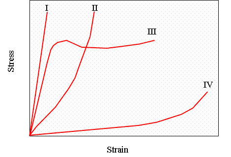
- 1 : I
- 2 : II
- 3 : III
- 4 : IV
- คำตอบที่ถูกต้อง : 4
- พอลิเมอร์ใดต่อไปนี้เป็นเทอร์โมพลาสติก (Thermoplastics)
- 1 : PVC
- 2 : Epoxy resins
- 3 : Polyester
- 4 : Melamine
- คำตอบที่ถูกต้อง : 1
- ข้อใดต่อไปนี้ไม่ใช่พอลิเมอร์
- 1 : พอลิเอทิลีน (Polyethylene)
- 2 : พอลิคาร์โบเนต (Polycarbonate)
- 3 : ซิลิคอนคาร์ไบด์ (Silicon carbide)
- 4 : ซิลิโคน (Silicone)
- คำตอบที่ถูกต้อง : 3
- เพราะเหตุใดยางรถยนต์จึงมีสีดำ
- 1 : เนื่องจากต้องสัมผัสถนนซึ่งมีความสกปรก จึงผสมสีดำลงไป
- 2 : เนื่องจากต้องการให้มีความแข็งแรงขึ้น จึงใส่สารเสริมแรงชนิดหนึ่งซึ่งมีสีดำลงไป
- 3 : เพื่อให้ง่ายต่อการดูแลรักษา
- 4 : ข้อ 1 2 และ 3 ถูก
- คำตอบที่ถูกต้อง : 2
- โดยทั่วไปพอลิเมอร์มีสมบัติเชิงกลในข้อใดต่อไปนี้มากกว่าวัสดุวิศวกรรมชนิดอื่นๆ
- 1 : Tensile Strength
- 2 : Modulus of Elasticity
- 3 : Yield Strength
- 4 : Elongation
- คำตอบที่ถูกต้อง : 4
- วัตถุดิบที่ใช้ในการผลิตพอลิเมอร์มาจากแหล่งใด
- 1 : แก๊สธรรมชาติ
- 2 : น้ำมันปิโตรเลียม
- 3 : ผลิตผลทางการเกษตร
- 4 : ข้อ 1 2 และ 3 ถูก
- คำตอบที่ถูกต้อง : 4
- ข้อใดต่อไปนี้ไม่ใช่ลักษณะหรือสมบัติของเทอร์โมเซตติ้ง (Thermosetting)
- 1 : มีโครงสร้างตาข่าย
- 2 : นำมาขึ้นรูปใหม่ไม่ได้
- 3 : ทนแรงกระแทกได้ดี
- 4 : ทนความร้อนได้ดี
- คำตอบที่ถูกต้อง : 3
- ข้อใดต่อไปนี้ไม่ใช่โครงสร้างของโคพอลิเมอร์ (Copolymer)
- 1 : โครงสร้างแบบบล็อก (Block)
- 2 : โครงสร้างแบบสลับ (Alternating)
- 3 : โครงสร้างแบบเชิงเส้น (Linear)
- 4 : โครงสร้างแบบสุ่ม (Random)
- คำตอบที่ถูกต้อง : 3
- ขวดพลาสติกใสที่ใช้บรรจุน้ำอัดลมในท้องตลาดมักทำด้วยพอลิเมอร์ชนิดใด
- 1 : พอลิโพรพิลีน (Polypropylene)
- 2 : พอลิสไตรีน (Polystyrene)
- 3 : พอลิเอทิลีน เทอร์ฟาทาเลต (Polyethylene terephthalate)
- 4 : พอลิเมทิล เมทาครีเลต (Polymethyl methacrylate)
- คำตอบที่ถูกต้อง : 3
- เราสามารถเพิ่มสมบัติในการรับแรงกระแทกให้กับพลาสติกที่เปราะได้โดยการผสมสิ่งใดต่อไปนี้ลงไปในพลาสติก
- 1 : ยาง (Rubber)
- 2 : สารเสริมแรง (Reinforcing filler)
- 3 : สารป้องกันการแตกหักของสายโซ่โมเลกุล (Stabilizer)
- 4 : สารเพิ่มเนื้อ (Extender)
- คำตอบที่ถูกต้อง : 1
- ถ้านำขวดพลาสติกที่ทำจากพอลิเอทิลีนไปบรรจุน้ำอัดลมและปิดฝาให้แน่น จะเกิดสิ่งใดขึ้น
- 1 : ไม่มีสิ่งใดเปลี่ยนแปลง
- 2 : น้ำอัดลมจะมีสีที่จางลง
- 3 : แก๊สคาร์บอนไดออกไซด์จะระเหยออกไป
- 4 : ปริมาณของน้ำอัดลมจะลดลง
- คำตอบที่ถูกต้อง : 3
- ข้อใดต่อไปนี้ไม่เป็นความจริง
- 1 : โดยทั่วไป พอลิเมอร์มีค่าการนำความร้อนที่ต่ำกว่าโลหะมาก
- 2 : โดยทั่วไป อากาศมีค่าการนำความร้อนที่ต่ำกว่าพอลิเมอร์มาก
- 3 : โดยทั่วไป พอลิเมอร์มีค่าสัมประสิทธิ์ของการขยายตัวเมื่อได้รับความร้อนมากกว่าโลหะ
- 4 : โดยทั่วไป เซรามิกมีค่าสัมประสิทธิ์ของการขยายตัวเมื่อได้รับความร้อนมากกว่าพอลิเมอร์
- คำตอบที่ถูกต้อง : 4
- กระบวนการในข้อใดต่อไปนี้เป็นกระบวนการสร้างพอลิเมอร์จากมอนอเมอร์
- 1 : Monomerization
- 2 : Polymerization
- 3 : Hydration
- 4 : Annealing
- คำตอบที่ถูกต้อง : 2
- เทฟลอน (Teflon) คือชื่อทางการค้าของพอลิเมอร์ในข้อใด
- 1 : Polystyrene
- 2 : Polyurethane
- 3 : Polytetrafluoroethylene
- 4 : Polyvinyl chloride
- คำตอบที่ถูกต้อง : 3
- พลาสติกในข้อใดที่สามารถนำมาให้ความร้อนแล้วหลอมเหลวเพื่อนำไปขึ้นรูปใหม่ได้
- 1 : ไนลอน
- 2 : เมลามีน
- 3 : เบคาไลท์
- 4 : อีพอกซี
- คำตอบที่ถูกต้อง : 1
- ข้อใดจัดเป็นวัสดุอีลาสโตเมอร์
- 1 : เมลามีน
- 2 : อะคริลิค
- 3 : ซิลิโคน
- 4 : เทฟลอน
- คำตอบที่ถูกต้อง : 3
- ข้อใดกล่าวไม่ถูกต้อง
- 1 : เทอร์โมเซตติ้งมีความแข็งแกร่งสูง เนื่องจากมีโครงสร้างตาข่ายที่แน่นหนา
- 2 : เทอร์โมพลาสติกแสดงพฤติกรรมทางความร้อนด้วยการเปลี่ยนแปลงสมบัติทางกายภาพเพียงอย่างเดียว
- 3 : อีลาสโตเมอร์แสดงพฤติกรรมทางความร้อนด้วยการเปลี่ยนแปลงทางกายภาพและทางเคมีโดยมีโครงสร้างตาข่ายหลวมๆ เกิดขึ้น
- 4 : เทอร์โมเซตติ้งสามารถนำมาให้ความร้อนแล้วหลอมเหลวเพื่อนำไปขึ้นรูปใหม่ได้
- คำตอบที่ถูกต้อง : 4
- ข้อใดกล่าวเกี่ยวกับ Tg ของพอลิเมอร์ถูกต้องที่สุด
- 1 : Tg เป็นอุณหภูมิที่ใช้บ่งบอกการเปลี่ยนสถานะของพอลิเมอร์จากแข็งเปราะเป็นหลอมเหลว
- 2 : ถ้าพอลิเมอร์ถูกนำไปใช้งาน ณ อุณหภูมิสูงกล่าว Tg พอลิเมอร์นั้นจะมีความแข็งเปราะ
- 3 : Tg เป็นสมบัติทางความร้อนของพอลิเมอร์ที่แสดงการเปลี่ยนสถานะในส่วนที่เป็นอสัณฐาน (Amorphous region)
- 4 : ถ้า Tg ของพอลิเมอร์เท่ากับ -20oC แสดงว่า เมื่อนำมาใช้งาน ณ อุณหภูมิห้อง (25oC) จะมีความแข็งเปราะ
- คำตอบที่ถูกต้อง : 3
- ปฏิกิริยาที่เกิดขึ้นเมื่อผสมซีเมนต์กับน้ำคือปฏิกิริยาใด
- 1 : ปฏิกิริยา Hydration
- 2 : ปฏิกิริยา Oxidation
- 3 : ปฏิกิริยา Reduction
- 4 : ปฏิกิริยา Dehydration
- คำตอบที่ถูกต้อง : 1
- การเติมแร่ยิปซั่ม (Gypsum) ลงในซีเมนต์มีวัตถุประสงค์อย่างไร
- 1 : เพื่อลดต้นทุนวัตถุดิบ
- 2 : เพื่อควบคุมเวลาการแข็งตัวของซีเมนต์
- 3 : เพื่อเพิ่มความแข็งแรงให้กับซีเมนต์
- 4 : เพื่อให้ซีเมนต์มีอายุการใช้งานที่นานขึ้น
- คำตอบที่ถูกต้อง : 2
- ทำไมเซรามิกโดยทั่วไปมีสมบัติที่แข็ง (Hard) และเปราะ (Brittle) กว่าโลหะ
- 1 : การเคลื่อนที่ของ Dislocation เกิดขึ้นในเซรามิกได้ง่ายกว่าโลหะ
- 2 : เซรามิกทั่วไปยึดกันด้วยพันธะแวนเดอร์วาลส์ แต่โลหะยึดกันด้วยพันธะโลหะ
- 3 : ในเซรามิก ระนาบอะตอมเกิดการเลื่อน (Slip) ได้บางระนาบเท่านั้น
- 4 : เซรามิกมีความหนาแน่นสูงกว่าโลหะ
- คำตอบที่ถูกต้อง : 3
- ข้อใดไม่ใช่สมบัติของเซรามิก
- 1 : เป็นฉนวนทั้งทางความร้อนและไฟฟ้า
- 2 : ความต้านทานต่อแรงกระแทกต่ำ
- 3 : ทนต่อแรงดึงได้ดี
- 4 : เฉื่อยต่อการเกิดปฏิกิริยาเคมี
- คำตอบที่ถูกต้อง : 3
- ข้อใดไม่ใช่ผลที่เกิดจากการเกิดรูพรุน (Porosity) ในเนื้ออิฐทนไฟ
- 1 : อิฐทนไฟเป็นฉนวนทางความร้อนที่ดีขึ้น
- 2 : อิฐทนไฟสามารถทนต่อการเปลี่ยนแปลงอุณหภูมิได้ดีขึ้น
- 3 : อิฐทนไฟมีความต้านทานต่อการผุกร่อนดีขึ้น
- 4 : อิฐทนไฟมีความแข็งแรงลดลง
- คำตอบที่ถูกต้อง : 3
- วัสดุในข้อใดเหมาะที่จะทำเป็นวัสดุขัดถู (Abrasive material)
- 1 : เหล็ก
- 2 : อะลูมินา
- 3 : พอลิเอทิลีน
- 4 : ไม้
- คำตอบที่ถูกต้อง : 2
- Glass transition temperature คืออะไร
- 1 : อุณหภูมิจุดหลอมเหลว (Melting point) ของแก้ว
- 2 : อุณหภูมิที่แก้วมีสภาพการนำไฟฟ้า
- 3 : อุณหภูมิที่แก้วเปลี่ยนจากสภาพที่มีความหนืดสูงเป็นสภาพที่แข็งและเปราะ
- 4 : อุณหภูมิที่แก้วกลายเป็นไอ
- คำตอบที่ถูกต้อง : 3
- ข้อใดไม่ใช่เซรามิกวิศวกรรม (Engineering ceramic)
- 1 : พอร์ซิเลน (Porcelain)
- 2 : อะลูมินา (Alumina)
- 3 : ซิลิกอนไนไตรด์ (Silicon nitride)
- 4 : เซอร์โคเนีย (Zirconia)
- คำตอบที่ถูกต้อง : 1
- เซรามิกลักษณะใดที่ไม่เหมาะสมสำหรับการนำมาใช้ทำเป็นกระดูกเทียม
- 1 : เซรามิกที่มีสมบัติต้านทานการผุกร่อนที่ดี
- 2 : เซรามิกที่มีความหนาแน่นสูง
- 3 : เซรามิกที่มีความแข็งแรงสูง
- 4 : เซรามิกที่สามารถยึดติดกับเนื้อเยื่อได้ดี
- คำตอบที่ถูกต้อง : 2
- ทำไมปัจจุบันนิยมนำเซรามิกวิศวกรรม เช่น อะลูมินา (Alumina) มาใช้ทำหัวเทียนแทนโลหะ
- 1 : เซรามิกมีความแข็งแรงมากกว่าโลหะที่อุณหภูมิสูง
- 2 : เซรามิกเป็นวัสดุเปราะกว่าโลหะ
- 3 : เซรามิกมีการนำไฟฟ้าที่ดีกว่าโลหะ
- 4 : เซรามิกมีความหนาแน่นต่ำกว่าโลหะ
- คำตอบที่ถูกต้อง : 1
- ข้อใดกล่าวถูกต้อง
- 1 : การขึ้นรูปแก้วจะทำขณะที่แก้วมีสภาพเป็นของเหลวที่มีความหนืดสูง
- 2 : การขึ้นรูปแก้วจะเกิดปฏิกิริยา Sintering
- 3 : แก้วโดยทั่วไปเป็นของแข็งที่มีผลึก
- 4 : หลังจากขึ้นรูปแก้วแล้วต้องนำแก้วไปอบและเผา
- คำตอบที่ถูกต้อง : 1
- การเพิ่มความแข็งแรงให้กับแก้วโดยวิธีเทมเปอร์ (Temper) หรือ Chemical treatment มีหลักการอย่างไร
- 1 : ทำให้เกิดความเค้นแรงดึงที่ผิวและความเค้นแรงอัดภายในเนื้อแก้ว
- 2 : ทำให้เกิดความเค้นแรงอัดที่ผิวและความเค้นแรงดึงภายในเนื้อแก้ว
- 3 : ทำให้เกิดความเค้นแรงอัดในเนื้อแก้ว
- 4 : ทำให้เกิดความเค้นแรงดึงในเนื้อแก้ว
- คำตอบที่ถูกต้อง : 2
- เซรามิกประเภทใดมีความเหนียว (Toughness) ดีที่สุดที่อุณหภูมิห้อง
- 1 : ซิลิกอนไนไตรด์ (Silicon nitride)
- 2 : ซิลิกอนคาร์ไบด์ (Silicon carbide)
- 3 : อะลูมินา (Alumina)
- 4 : Partially stabilized zirconia
- คำตอบที่ถูกต้อง : 4
- Glass-ceramic แตกต่างจาก แก้ว (Glass) อย่างไร
- 1 : แก้วโปร่งใสแต่ Glass-ceramic ไม่โปร่งใส
- 2 : แก้วไม่นำไฟฟ้า แต่ Glass-ceramic นำไฟฟ้า
- 3 : แก้วนำความร้อนได้ไม่ดี แต่ Glass-ceramic สามารถนำความร้อนได้
- 4 : แก้วทนการเปลี่ยนแปลงความร้อน (Thermal shock) ได้ แต่ Glass-ceramic ทนไม่ได้
- คำตอบที่ถูกต้อง : 1
- Pyroelectric ceramic มีสมบัติเด่นในข้อใด
- 1 : สามารถเปลี่ยนสมบัติทางกลให้เป็นสมบัติไฟฟ้า
- 2 : สามารถเปลี่ยนสมบัติทางไฟฟ้าให้เป็นสมบัติทางกล
- 3 : สามารถเปลี่ยนสมบัติทางไฟฟ้าให้เป็นสมบัติทางเคมี
- 4 : สามารถเปลี่ยนสมบัติทางความร้อนให้เป็นสมบัติทางไฟฟ้า
- คำตอบที่ถูกต้อง : 4
- เซรามิกประเภทแก้วต่างจากเซรามิกโดยทั่วไปอย่างไร
- 1 : แก้วไม่มีผลึก แต่เซรามิกโดยทั่วไปเป็นโครงสร้างที่มีผลึก (Crystalline)
- 2 : แก้วสามารถดึงยืดได้ แต่เซรามิกโดยทั่วไปมีสมบัติเปราะ
- 3 : แก้วทนแรงดึงได้ดี แต่เซรามิกทนแรงอัดได้ดี
- 4 : แก้วทนทานต่อสารเคมีได้ดี แต่เซรามิกโดยทั่วไปเกิดปฏิกิริยาได้ง่าย
- คำตอบที่ถูกต้อง : 1
- ผลิตภัณฑ์ใดต่อไปนี้ไม่จำเป็นต้องใช้วัสดุเซรามิก
- 1 : กระสวยอวกาศ
- 2 : เตาเผา
- 3 : ลูกถ้วยไฟฟ้า (Electrical insulator)
- 4 : มีดผ่าตัด
- คำตอบที่ถูกต้อง : 4
- ข้อใดไม่ช่วยทำให้วัสดุที่ผลิตจากอะลูมินา (Alumina) มีสมบัติโปร่งแสง (Translucent) ได้
- 1 : อะลูมินาที่ใช้มีความบริสุทธ์สูงมาก
- 2 : เป็นวัสดุผลึกเดี่ยว (Single crystal)
- 3 : การจัดเรียงตัวของผลึกมีทิศทางใกล้เคียงกันมาก
- 4 : ขอบเกรน (Grain boundary) มีความหนามาก
- คำตอบที่ถูกต้อง : 4
- กระถางปลูกต้นไม้ โอ่งดิน อิฐมอญ จัดเป็นเซรามิกประเภทใด
- 1 : Stoneware
- 2 : Earthenware
- 3 : Porcelain
- 4 : Bone China
- คำตอบที่ถูกต้อง : 2
- วัสดุทนไฟที่ใช้ในเตาเผาอุณหภูมิสูงมักทำจากวัสดุในข้อใดต่อไปนี้
- 1 : CaO
- 2 : Feldspar
- 3 : Cement
- 4 : Mullite
- คำตอบที่ถูกต้อง : 4
- วัสดุแบเรียมไททาเนต (BaTiO3) มีโครงผลึกแบบใด
- 1 : โครงผลึกซีเซียมคลอไรด์
- 2 : โครงผลึกโซเดียมคลอไรด์
- 3 : โครงผลึกฟลูออไรด์
- 4 : โครงผลึกเพอรอฟสไกต์
- คำตอบที่ถูกต้อง : 4
- ข้อใดไม่ใช่วัสดุโครงสร้างซิลิเกต
- 1 : อะลูมินา
- 2 : ควอทซ์
- 3 : ไมก้า
- 4 : ทัลค์
- คำตอบที่ถูกต้อง : 1
- วัสดุเซรามิกมีพันธะชนิดใด
- 1 : พันธะโลหะ
- 2 : พันธะโควาเลนต์
- 3 : พันธะไอออนิก
- 4 : พันธะไอออนิกร่วมพันธะโควาเลนต์
- คำตอบที่ถูกต้อง : 4
- ไม้จัดเป็นวัสดุประเภทใด
- 1 : วัสดุเชิงประกอบ
- 2 : พอลิคาร์บอเนต
- 3 : พอลิไวนิลคลอไรด์
- 4 : พอลิเมอร์
- คำตอบที่ถูกต้อง : 4
- เพราะเหตุใดไม้จึงรับแรงดัด (Bending force) ได้ดี
- 1 : เส้นใยเรียงตัวในทิศใดทิศหนึ่ง
- 2 : มีความเหนียวสูง
- 3 : เนื้อไม้มีความหนาแน่นสูง
- 4 : ไม้มีน้ำหนักเบา
- คำตอบที่ถูกต้อง : 1
- ข้อใดเป็นส่วนประกอบหลักของยางมะตอย (Asphalt)
- 1 : ธาตุคาร์บอน (C) และ ไนโตรเจน (N)
- 2 : ธาตุคาร์บอน (C) และ ไฮโดรเจน (H)
- 3 : ธาตุคาร์บอน (C) และ ซัลเฟอร์ (S)
- 4 : ธาตุคาร์บอน (C) และ ออกซิเจน (O)
- คำตอบที่ถูกต้อง : 2
- ไม้มีสมบัติทางกลตามข้อใด
- 1 : เท่ากันทุกทิศทาง
- 2 : ความแข็งแรงตามแนวความยาวมากกว่าแนวขวาง
- 3 : ความแข็งแรงขนานเส้นใยต่ำกว่าความแข็งแรงตั้งฉาก
- 4 : โมดูลัสเท่ากันทุกทิศทาง
- คำตอบที่ถูกต้อง : 2
- ยางมะตอย (Asphalt) และยางมะตอยผสม (Asphalt mix) มีสมบัติต่างกันอย่างไร
- 1 : ยางมะตอยมีแรงเสียดทาน (Friction) มากกว่ายางมะตอยผสม
- 2 : ยางมะตอยผสมมีแรงเสียดทาน (Friction) มากกว่ายางมะตอย
- 3 : ยางมะตอยและยางมะตอยผสมใช้ทำพื้นรับแรงที่มีสมบัติใกล้เคียงกัน
- 4 : ยางมะตอยแข็งแรงมากกว่ายางมะตอยผสม
- คำตอบที่ถูกต้อง : 2
- การใช้คอนกรีตในการก่อสร้าง คอนกรีตถูกใช้เพื่อให้รับแรงประเภทใด
- 1 : แรงดึง (Tension)
- 2 : แรงอัด (Compression)
- 3 : แรงเฉือน (Shear)
- 4 : แรงบิด (Torsion)
- คำตอบที่ถูกต้อง : 2
- ความสามารถในการทำงาน (Workability) ของคอนกรีตสามารถทดสอบด้วยวิธีใด
- 1 : การทดสอบความล้า (Fatigue test)
- 2 : การทดสอบโดยใช้แรงอัด (Compressive test)
- 3 : การทดสอบความแข็งแบบบริเนลล์ (Brinell)
- 4 : การทดสอบการยุบตัว (Slump test)
- คำตอบที่ถูกต้อง : 4
- ส่วนประกอบหลักของคอนกรีตคือข้อใด
- 1 : ทราย (Sand) หินฟันม้า (Feldspar) และซีเมนต์ (Cement)
- 2 : หินย่อย (Aggregate) หินฟันม้า (Feldspar) และซีเมนต์ (Cement)
- 3 : ทราย (Sand) หินย่อย (Aggregate) และซีเมนต์ (Cement)
- 4 : ทราย (Sand) หินย่อย (Aggregate) และบิทูเมน (Bitumen)
- คำตอบที่ถูกต้อง : 3
- สมการ delta ferrite + L --> austenite เรียกปฏิกิริยานี้ว่าปฏิกิริยาใด
- 1 : Eutectoid
- 2 : Eutectic
- 3 : Peritectic
- 4 : Peritectoid
- คำตอบที่ถูกต้อง : 3
- ข้อใดไม่ใช่ข้อมูลที่สามารถทราบได้จากแผนภาพเฟส (Phase diagram)
- 1 : สภาพการละลายได้ของธาตุหนึ่งในอีกธาตุหนึ่ง
- 2 : อุณหภูมิที่สารเริ่มหลอมละลาย
- 3 : ความดันที่สารเปลี่ยนเฟส
- 4 : ปริมาตรของสารที่หลอมเหลว
- คำตอบที่ถูกต้อง : 4
- ข้อใดไม่ใช่ข้อมูลที่สามารถทราบได้จากแผนภาพเฟส (Phase diagram)
- 1 : อุณหภูมิที่โลหะผสมเริ่มแข็งตัวเป็นของแข็ง
- 2 : สภาพการละลายได้ของธาตุหนึ่งในอีกธาตุหนึ่ง ณ สภาวะสมดุล
- 3 : เฟสต่างๆ ที่มีอยู่ในเนื้อวัสดุ
- 4 : ขนาดและรูปร่างของโครงสร้างจุลภาค
- คำตอบที่ถูกต้อง : 4
- ข้อใดคือปฏิกิริยาที่เกิดขึ้นในแผนภาพเฟสของ Fe-Fe3C ที่กำหนดให้
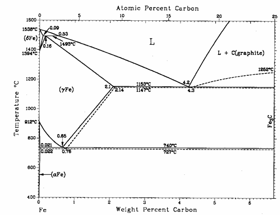
- 1 : Peritic, Eutectic, Eutectoid
- 2 : Peritectic, Eutectic, Eutectoid
- 3 : Peritectic, Eutectic, Eutectertic
- 4 : Peritectic, Eutectic, Monotectic
- คำตอบที่ถูกต้อง : 2
- ปฏิกิริยายูเทกทอยด์ (Eutectoid) ของเหล็กกล้าคาร์บอน เกิดที่ปริมาณคาร์บอนกี่เปอร์เซ็นต์โดยน้ำหนัก
- 1 : 0.025%
- 2 : 0.8%
- 3 : 2.0%
- 4 : 4.3%
- คำตอบที่ถูกต้อง : 2
- โครง สร้างใดคือโครงสร้างของเหล็กกล้าคาร์บอนส่วนผสมยูเทกทอยด์ที่เย็นตัวอย่าง ช้าๆ ผ่านปฏิกิริยายูเทคทอยด์ เรียกโครงสร้างที่เกิดขึ้นว่าอะไร
- 1 : เฟร์ไรต์ (Ferrite)
- 2 : เพอร์ไลต์ (Pearlite)
- 3 : ออสเทไนต์ (Austenite)
- 4 : ซีเมนไทต์ (Cementite)
- คำตอบที่ถูกต้อง : 2
- ข้อใดไม่ใช่ข้อมูลที่ได้จากการอ่านแผนภาพเฟสในสภาวะที่สมดุล
- 1 : ชนิดของเฟสที่เกิดขึ้น
- 2 : ปริมาณของเฟสที่เกิดขึ้น
- 3 : อุณหภูมิที่สารเริ่มแข็งตัว (Solidify) หรือหลอมเหลว (Melt)
- 4 : ชนิดของโครงสร้างผลึกของเฟสที่เกิดขึ้น
- คำตอบที่ถูกต้อง : 4
- สารละลาย (Solution) และของผสม (Mixture) แตกต่างกันอย่างไร
- 1 : สารละลายจะเกิดการแยกกันของสารทำให้เกิดเฟสมากกว่าหนึ่งเฟส ของผสมจะเกิดเป็นเนื้อเดียวกันมีเพียงหนึ่งเฟส
- 2 : สารละลายจะเกิดเฉพาะในของเหลวเท่านั้น ของผสมจะเกิดจากการผสมของเหลวและของแข็งด้วยกัน
- 3 : สารละลายจะเกิดเป็นเนื้อเดียวกันมีเพียงหนึ่งเฟส ของผสมจะเกิดการแยกกันของสารทำให้เกิดเฟสมากกว่าหนึ่งเฟส
- 4 : สารละลายจะเกิดจากการรวมกันของของเหลวและของแข็งเป็นเฟสเดียว ของผสมจะเกิดจากการรวมกันของสารทำให้กลายเป็นเฟสเดียว
- คำตอบที่ถูกต้อง : 3
- เส้น Liquidus มีความสำคัญอย่างไร
- 1 : ภายใต้สภาวะที่สมดุล เฟสจะเป็นเฟสของเหลวทั้งหมดที่อุณหภูมิต่ำกว่าเส้น Liquidus
- 2 : ภายใต้สภาวะที่สมดุล อุณหภูมิที่อยู่ต่ำกว่าเส้น Liquidus เฟสของเหลวเปลี่ยนเป็นเฟสของแข็ง
- 3 : ภายใต้สภาวะที่สมดุล เฟสของแข็งชนิดหนึ่งจะเริ่มเกิดเป็นเฟสของแข็งมากกว่าหนึ่งชนิดที่เส้น Liquidus
- 4 : ภายใต้สภาวะที่สมดุล อุณหภูมิสูงกว่าเส้น Liquidus เฟสของเหลวเริ่มเกิดเป็นเฟสของแข็งทั้งหมด
- คำตอบที่ถูกต้อง : 2
- เส้น Solidus มีความสำคัญอย่างไร
- 1 : ภายใต้สภาวะที่สมดุล เฟสของแข็งชนิดหนึ่งจะเริ่มเกิดเป็นเฟสของแข็งมากกว่าหนึ่งชนิดที่เส้น Solidus
- 2 : ภายใต้สภาวะที่สมดุล อุณหภูมิที่อยู่ต่ำกว่าเส้น Solidus จะประกอบด้วยเฟสของเหลวและเฟสของแข็ง
- 3 : ภายใต้สภาวะที่สมดุล อุณหภูมิที่อยู่ต่ำกว่าเส้น Solidus เฟสของเหลวจะเปลี่ยนเป็นเฟสของแข็งทั้งหมด
- 4 : ภายใต้สภาวะที่สมดุล อุณหภูมิที่อยู่สูงกว่าเส้น Solidus จะประกอบด้วยเฟสของแข็งทั้งหมด
- คำตอบที่ถูกต้อง : 3
- ข้อใดไม่ใช่ลักษณะของเส้น Solvus
- 1 : ภายใต้สภาวะที่สมดุล เฟสของแข็งชนิดหนึ่งจะเริ่มเกิดเป็นเฟสของแข็งมากกว่าหนึ่งชนิดที่เส้น Solvus
- 2 : ภายใต้สภาวะที่สมดุล อุณหภูมิที่อยู่ต่ำกว่าเส้น Solvus จะประกอบด้วยเฟสของเหลวและเฟสของแข็ง
- 3 : ภายใต้สภาวะที่สมดุล เส้น Solvus จะเป็นเส้นแสดงขีดจำกัดการละลาย (Solubility limit) ของเฟสของแข็งสองเฟส
- 4 : ภายใต้สภาวะที่สมดุลอุณหภูมิที่เหนือเส้น Solvus เป็นเฟสของแข็งทั้งหมด
- คำตอบที่ถูกต้อง : 2
- ข้อใดไม่ทำให้เกิด Isomorphous systems
- 1 : โครงสร้างผลึกของแต่ละธาตุมีโครงสร้างแบบเดียวกัน
- 2 : ธาตุแต่ละตัวต้องรวมกันเกิดเป็นสารประกอบ (Compound)
- 3 : ขนาดของอะตอมทั้งสองธาตุมีความแตกต่างกันไม่เกิน 15%
- 4 : ธาตุแต่ละตัวควรมีค่า Valence electron เหมือนกัน
- คำตอบที่ถูกต้อง : 2
จากแผนภาพเฟสของทองแดง (Cu) นิกเกิล (Ni) โลหะผสมประกอบด้วยทองแดง 47%โดยน้ำหนักและนิกเกิล 53% โดยน้ำหนัก ที่ 1300 องศาเซลเซียส ประกอบด้วยเฟสอะไร
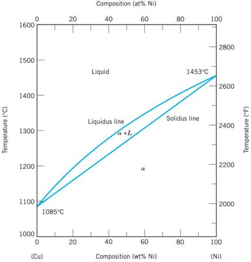
- 1 : เฟสของเหลว และเฟสของแข็ง α
- 2 : เฟสของแข็ง α
- 3 : เฟสสารประกอบ Cu-Ni
- 4 : เฟสของเหลว
- คำตอบที่ถูกต้อง : 1
- จาก
แผนภาพเฟสของทองแดง (Cu) นิกเกิล (Ni) โลหะผสมประกอบด้วยทองแดง 30%
โดยน้ำหนักและนิกเกิล 70% โดยน้ำหนัก ถูกให้ความร้อนจากอุณหภูมิห้อง
อยากทราบว่าเฟสของเหลวเริ่มเกิดขึ้นที่อุณหภูมิใด

- 1 : ประมาณ 1200 องศาเซลเซียส
- 2 : ประมาณ 1300 องศาเซลเซียส
- 3 : ประมาณ 1350 องศาเซลเซียส
- 4 : ประมาณ 1380 องศาเซลเซียส
- คำตอบที่ถูกต้อง : 3
- ข้อใดไม่เกี่ยวข้องกับการเกิดโครงสร้างแกน (Cored structure)
- 1 : เกิดในสภาวะที่ไม่สมดุล
- 2 : เกิดจากความเข้มข้นของส่วนประกอบทางเคมี (Chemical composition) ในแต่ละส่วนต่างกัน
- 3 : สามารถแก้ไขได้โดยการทำกรรมวิธีทางความร้อน (Heat treatment)
- 4 : การเย็นตัวลงอย่างช้าๆ
- คำตอบที่ถูกต้อง : 4
- จาก
แผนภาพเฟสของทองแดง (Cu) นิเกิล (Ni) โลหะผสมประกอบด้วยทองแดง
47%โดยน้ำหนักและนิเกิล 53%โดยน้ำหนักที่ 1300 องศาเซลเซียส
ประกอบด้วยเฟสสองเฟส คือ เฟสของแข็ง α
ซึ่งมีส่วนประกอบโดยน้ำหนักของทองแดง 42% และ นิเกิล 58%
และเฟสของเหลวซึ่งมีส่วนประกอบโดยน้ำหนักของทองแดง 55% และ นิเกิล 45%
อยากทราบเปอร์เซ็นต์โดยน้ำหนักของเฟสทั้งสองของโลหะผสมนี้

- 1 : เปอร์เซ็นต์ของเฟสของเหลว คือ 61.5% และ เปอร์เซ็นต์ของเฟสของแข็ง α คือ 38.5%
- 2 : เปอร์เซ็นต์ของเฟสของเหลว คือ 38.5% และ เปอร์เซ็นต์ของเฟสของแข็ง α คือ 61.5%
- 3 : เปอร์เซ็นต์ของเฟสของเหลว คือ 44.5% และ เปอร์เซ็นต์ของเฟสของแข็ง α คือ 55.5%
- 4 : เปอร์เซ็นต์ของเฟสของเหลว คือ 55.5% และ เปอร์เซ็นต์ของเฟสของแข็ง α คือ 44.5%
- คำตอบที่ถูกต้อง : 2
- จากแผนภาพเฟสของทองแดง (Cu) นิกเกิล (Ni) ค่า Degree of freedom บนเส้น Liquidus มีค่าเท่าใด

- 1 : Degree of freedom = 0
- 2 : Degree of freedom = 1
- 3 : Degree of freedom = 2
- 4 : Degree of freedom = 3
- คำตอบที่ถูกต้อง : 2
- จาก
แผนภาพเฟสของทองแดง (Cu) สังกะสี (Zn) ในช่วงอุณหภูมิตั้งแต่ 500
องศาเซลเซียส ถึง 750 องศาเซลเซียส
ของโลหะผสมที่มีเปอร์เซ็นต์โดยน้ำหนักของสังกะสีตั้งแต่ 60% ถึง 100%
มีปฏิกิริยา Invariant ใดเกิดขึ้นบ้าง
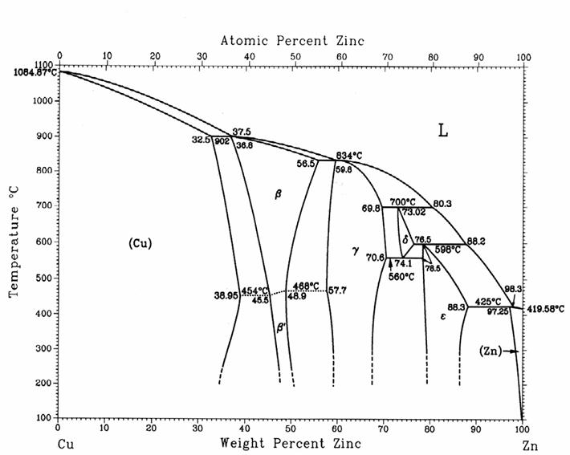
- 1 : Eutectic reaction และ Eutectoid reaction
- 2 : Peritectic reaction และ Eutectoid reaction
- 3 : Eutectic reaction และ Peritectoid reaction
- 4 : Monotectic reaction และ Eutectoid reaction
- คำตอบที่ถูกต้อง : 2
- จากแผนภาพเฟสของ นิกเกิล (Ni)- ไททาเนียม (Ti) มีปฏิกิริยา Invariant ใดเกิดขึ้นบ้าง
- 1 : Monotectic reaction, Peritectic reaction และ Eutectoid reaction
- 2 : Monotectic reaction, Peritectic reaction และ Peritectoid reaction
- 3 : Peritectic reaction, Eutectic reaction และ Eutectoid reaction
- 4 : Eutectoid reaction, Peritectoid reactionและ Peritectic reaction
- คำตอบที่ถูกต้อง : 3
- จาก
แผนภาพเฟสของทองแดง (Cu) เงิน (Ag) โลหะผสมประกอบด้วยทองแดง 10%
โดยน้ำหนักและเงิน 90%โดยน้ำหนัก ถูกให้ความร้อนจนเกิดเฟสของแข็ง
และเฟสของเหลว ถ้าส่วนประกอบของเฟสของเหลวประกอบด้วยเงิน (Ag)
85%โดยน้ำหนัก อยากทราบว่าโลหะผสมนี้ถูกให้ความร้อนถึงอุณหภูมิเท่าใด
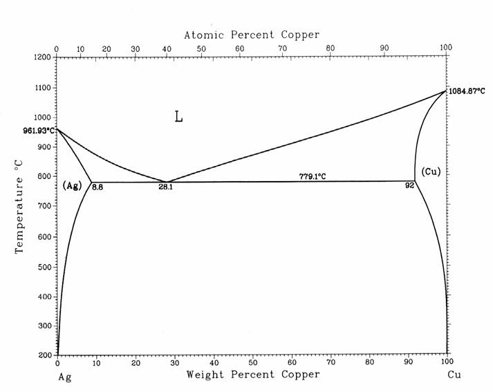
- 1 : ประมาณ 750 องศาเซลเซียส
- 2 : ประมาณ 800 องศาเซลเซียส
- 3 : ประมาณ 850 องศาเซลเซียส
- 4 : ประมาณ 950 องศาเซลเซียส
- คำตอบที่ถูกต้อง : 3
- จาก
แผนภาพเฟสของทองแดง (Cu) สังกะสี (Zn) โลหะผสมประกอบด้วยทองแดง
20%โดยน้ำหนักและสังกะสี 80%โดยน้ำหนัก ที่ 598 องศาเซลเซียส
ประกอบด้วยเฟสอะไร

- 1 : เฟสของเหลว และเฟสของแข็ง δ
- 2 : เฟสของเหลว และเฟสของแข็ง ε
- 3 : เฟสของแข็ง ε
- 4 : เฟสของเหลว เฟสของแข็ง δ และเฟสของแข็ง ε
- คำตอบที่ถูกต้อง : 4
- จาก
แผนภาพเฟสของทองแดง (Cu) เงิน (Ag) โลหะผสมประกอบด้วยทองแดง
10%โดยน้ำหนัก และเงิน 90%โดยน้ำหนัก ถูกให้ความร้อนจนเกิดเฟสของแข็ง β
และเฟสของเหลว ถ้าส่วนประกอบของเฟสของเหลวประกอบด้วยเงิน (Ag) 85%
โดยน้ำหนัก อยากทราบว่าเฟสของแข็ง β
ประกอบด้วยเงินกี่เปอร์เซ็นต์โดยน้ำหนัก
- 1 : ประมาณ 90% โดยน้ำหนัก
- 2 : ประมาณ 95% โดยน้ำหนัก
- 3 : ประมาณ 5% โดยน้ำหนัก
- 4 : ประมาณ 10% โดยน้ำหนัก
- คำตอบที่ถูกต้อง : 2
จาก แผนภาพเฟสของทองแดง (Cu) นิกเกิล (Ni) โลหะผสมประกอบด้วยทองแดง 30%โดยน้ำหนักและนิเกิล 70%โดยน้ำหนัก ที่ 1350 องศาเซลเซียส ประกอบด้วยเฟสอะไร

- 1 : เฟสของเหลว
- 2 : เฟสของเหลว และเฟสของแข็ง α
- 3 : เฟสของแข็ง α
- 4 : เฟสของสารประกอบระหว่างทองแดงและนิเกิล
- คำตอบที่ถูกต้อง : 2
- จาก แผนภาพเฟสของทองแดง (Cu) สังกะสี (Zn) โลหะผสมประกอบด้วยทองแดง 20%โดยน้ำหนักและสังกะสี 80%โดยน้ำหนัก ที่ 800 องศาเซลเซียส ประกอบด้วยเฟสอะไร
- 1 : เฟสของเหลว
- 2 : เฟสของเหลว และเฟสของแข็ง δ
- 3 : เฟสของเหลว และเฟสของแข็ง ε
- 4 : เฟสของแข็ง γ
- คำตอบที่ถูกต้อง : 1
- จาก แผนภาพเฟสของทองแดง (Cu) สังกะสี (Zn) โลหะผสมประกอบด้วยทองแดง 20%โดยน้ำหนักและสังกะสี 80%โดยน้ำหนัก ที่ 500 องศาเซลเซียส ประกอบด้วยเฟสอะไร
- 1 : เฟสของเหลว
- 2 : เฟสของแข็ง ε
- 3 : เฟสของแข็ง δ
- 4 : เฟสของเหลว และเฟสของแข็ง ε
- คำตอบที่ถูกต้อง : 2
- จาก
แผนภาพเฟสของตะกั่ว (Pb) ดีบุก (Sn) โลหะผสมประกอบด้วยดีบุก
40%โดยน้ำหนักและตะกั่ว 60%โดยน้ำหนัก ที่ 150 องศาเซลเซียส
ประกอบด้วยเฟสอะไรบ้าง

- 1 : เฟสของแข็งสองชนิดคือ (α Pb) และ (βSn)
- 2 : เฟสของแข็ง (α Pb) และเฟสของเหลว
- 3 : เฟสของแข็ง (βSn) และเฟสของเหลว
- 4 : เฟสของเหลว
- คำตอบที่ถูกต้อง : 1
- จาก แผนภาพเฟสของตะกั่ว (Pb) ดีบุก (Sn) โลหะผสมประกอบด้วยดีบุก 61.9%โดยน้ำหนักและตะกั่ว 38.1%โดยน้ำหนัก ที่ 183 องศาเซลเซียส ประกอบด้วยเฟสอะไรบ้าง
- 1 : เฟสของแข็งสองชนิดคือ (α Pb) และ (βSn) และเฟสของเหลว
- 2 : เฟสของแข็ง (α Pb) และเฟสของเหลว
- 3 : เฟสของแข็ง (βSn) และเฟสของเหลว
- 4 : เฟสของแข็งสองชนิดคือ (α Pb) และ (βSn)
- คำตอบที่ถูกต้อง : 1
- จากแผนภาพเฟสของตะกั่ว (Pb) ดีบุก (Sn) บริเวณที่เป็น α มีความหมายว่าอย่างไร

- 1 : เฟสสารละลายของแข็ง (α Pb) ที่มีโครงสร้างผลึกของดีบุกและตะกั่วอยู่ร่วมกัน
- 2 : เฟสสารละลายของแข็ง (α Pb) ที่มีโครงสร้างผลึกของตะกั่ว และมีอะตอมของดีบุกแทรกอยู่ในโครงสร้าง
- 3 : เฟสสารละลายของแข็ง (α Pb) ที่มีโครงสร้างผลึกแตกต่างจากโครงสร้างของดีบุกและตะกั่ว
- 4 : เฟสสารละลายของแข็ง (α Pb) ที่มีโครงสร้างผลึกของดีบุก และมีอะตอมของตะกั่วแทรกอยู่ในโครงสร้าง
- คำตอบที่ถูกต้อง : 2
- ข้อใดไม่ใช่ลักษณะของโครงสร้างจุลภาคของส่วนประกอบ Eutectic
- 1 : Lamellar
- 2 : Rodlike
- 3 : Globular
- 4 : Homogeneous
- คำตอบที่ถูกต้อง : 4
- ปฏิกิริยาต่อไปนี้ ข้อใดไม่ใช่ปฏิกิริยา Invariant
- 1 : Eutectic reaction
- 2 : Monotectic reaction
- 3 : Peritectoid reaction
- 4 : Oxidation reaction
- คำตอบที่ถูกต้อง : 4
- จากแผนภาพเฟสของทองแดง (Cu) นิกเกิล (Ni) ค่า Degree of freedom ระหว่างเส้น Solidus และ Liquidus มีค่าเท่าใด

- 1 : Degree of freedom = 0
- 2 : Degree of freedom = 1
- 3 : Degree of freedom = 2
- 4 : Degree of freedom = 3
- คำตอบที่ถูกต้อง : 2
- ข้อใดต่อไปนี้เป็นปฏิกิริยา Monotectic
- 1 :
- 2 :
- 3 :
- 4 :
- คำตอบที่ถูกต้อง : 3
- กรรมวิธีการชุบที่ใช้ตัวกลางชนิดใดต่อไปนี้ ที่ทำให้เกิดอัตราการคายความร้อนจากชิ้นงานมากที่สุด
- 1 : อากาศปกติ
- 2 : อากาศในเตาอบ
- 3 : น้ำเปล่า
- 4 : น้ำมัน
- คำตอบที่ถูกต้อง : 3
- กรรมวิธีการอบชนิดใดต่อไปนี้ ทำให้ชิ้นงานมีความแข็งแรงสูงที่สุด
- 1 : การอบในกระบวนการ (Process annealing)
- 2 : การอบปรกติ (Normalizing)
- 3 : การอบอ่อนเต็มที่ (Full annealing)
- 4 : สเฟียรอยไดซิง (Spheroidizing)
- คำตอบที่ถูกต้อง : 2
- ในการอบอ่อนเต็มที่ (Full annealing) ชิ้นงานถูกทำให้เย็นลงด้วยตัวกลางชนิดใด
- 1 : อากาศปรกตินอกเตาอบ
- 2 : อากาศในเตาอบ
- 3 : น้ำเปล่า
- 4 : น้ำมัน
- คำตอบที่ถูกต้อง : 2
- ในการอบปรกติ (Normalizing) ชิ้นงานถูกทำให้เย็นลงด้วยตัวกลางชนิดใด
- 1 : อากาศปรกตินอกเตาอบ
- 2 : อากาศในเตาอบ
- 3 : น้ำเปล่า
- 4 : น้ำมัน
- คำตอบที่ถูกต้อง : 1
- ข้อใดคือโครงสร้างที่ได้จากการเย็นตัวอย่างช้าๆ ของเหล็กกล้าคาร์บอนต่ำที่มีโครงสร้างออสเทไนต์ (Austenite)
- 1 : เพอร์ไลต์ (Pearlite) และ เฟร์ไรต์ (Ferrite)
- 2 : เพอร์ไลต์ (Pearlite) และ ซีเมนไทต์ (Cementite)
- 3 : เบไนต์ (Bainite)
- 4 : มาร์เทนไซต์ (Martensite)
- คำตอบที่ถูกต้อง : 1
- จาก
แผนภาพการแปลงคงอุณหภูมิ (Isothermal transformation diagram)
ของเหล็กกล้าคาร์บอน 1.13 wt%C
ข้อใดคือโครงสร้างสุดท้ายของชิ้นงานเหล็กกล้าคาร์บอน 1.13 wt%C
ขนาดเล็กที่ถูกอบที่อุณหภูมิ 920 องศาเซลเซียส จนมีโครงสร้างเป็นออสเทไนต์
(Austenite) ตลอดทั้งชิ้นก่อนทำให้เย็นตัวลงอย่างรวดเร็ว
จนชิ้นงานมีอุณหภูมิ 400 องศาเซลเซียส และแช่ชิ้นงานไว้ที่อุณหภูมินี้นาน
1 นาที ก่อนทำให้เย็นตัวถึงอุณหภูมิห้อง
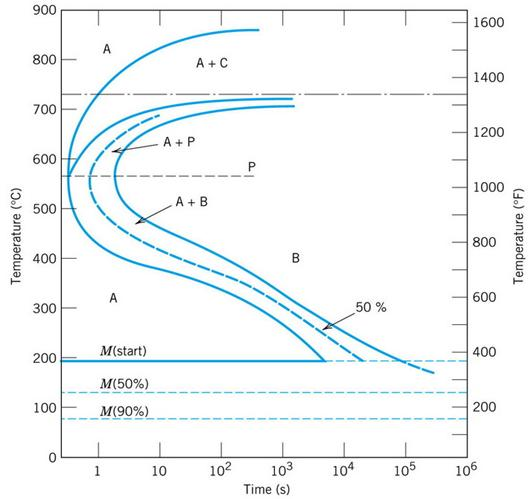
- 1 : ออสเทไนต์ (Austenite) และ เบไนต์ (Bainite)
- 2 : ออสเทไนต์ (Austenite) เบไนต์ (Bainite) และ มาร์เทนไซต์ (Martensite)
- 3 : เบไนต์ (Bainite) และ มาร์เทนไซต์ (Martensite)
- 4 : ซีเมนไทต์ (Cementite) เบไนต์ (Bainite)และ มาร์เทนไซต์ (Martensite)
- คำตอบที่ถูกต้อง : 3
- ข้อใดคือวัตถุประสงค์ของการอบปรกติ (Normalizing)
- 1 : เพื่อปรับปรุงสมบัติเชิงกลให้ดีขึ้น
- 2 : เพื่อปรับปรุงโครงสร้างให้สม่ำเสมอ
- 3 : เป็นการทำลายความเครียดภายใน
- 4 : ข้อ 1 2 และ 3 ถูก
- คำตอบที่ถูกต้อง : 4
- ข้อใดคือวัตถุประสงค์ของการอบอ่อน (Annealing)
- 1 : เพื่อเพิ่มความแข็งแรง
- 2 : เพื่อให้ได้โครงสร้างที่มีความอ่อนตัวสูง
- 3 : เพื่อเพิ่มความแข็งให้กับวัสดุ
- 4 : ข้อ 1 2 และ 3 ถูก
- คำตอบที่ถูกต้อง : 2
- ข้อใดคือปัจจัยที่มีผลต่อความแข็งของเหล็กกล้าคาร์บอนปานกลาง
- 1 : ปริมาณคาร์บอน
- 2 : อุณหภูมิก่อนการชุบแข็ง
- 3 : อัตราการชุบแข็ง
- 4 : ข้อ 1 2 และ 3 ถูก
- คำตอบที่ถูกต้อง : 4
- โครงสร้างเพอร์ไลต์ (Pearlite) ในเหล็กกล้าเป็นโครงสร้างที่ได้จากปฏิกิริยาอะไร
- 1 : ยูเทกติก (Eutectic)
- 2 : ยูเทกทอยด์ (Eutectoid)
- 3 : เพริเทกติก (Peritectic)
- 4 : เพริเทกทอยด์ (Peritectoid)
- คำตอบที่ถูกต้อง : 2
ใน ภาวะสมดุล ณ อุณหภูมิต่ำกว่าอุณหภูมิยูเทคทอยด์เล็กน้อย โครงสร้างเหล็กกล้าคาร์บอนต่ำ (0.2wt%C) ประกอบด้วยโครงสร้างของเฟสกึ่งเสถียร (Metastable phase) ใดบ้าง และเกิดขึ้นในปริมาณเท่าใด
- 1 : เฟร์ไรต์ (Ferrite) 80% และ เพอร์ไลต์ (Pearlite) 20%
- 2 : เฟร์ไรต์ (Ferrite) 20% และ เพอร์ไลต์ (Pearlite) 80%
- 3 : เฟร์ไรต์ (Ferrite) 75% และ เพอร์ไลต์ (Pearlite) 25%
- 4 : เฟร์ไรต์ (Ferrite) 25% และ เพอร์ไลต์ (Pearlite) 75%
- คำตอบที่ถูกต้อง : 3
- ลักษณะ โครงสร้างบริเวณรอบรอยเชื่อม (HAZ) ในเหล็กกล้าคาร์บอนต่ำส่วนที่ติดกับบริเวณหลอมเหลว (Fusion zone) ของรอยเชื่อมคือ ข้อใดต่อไปนี้
- 1 : โครงสร้างมีขนาดเกรนหยาบ
- 2 : โครงสร้างมีขนาดเกรนละเอียด
- 3 : โครงสร้างเป็นมาร์เทนไซต์ (Martensite)
- 4 : โครงสร้างเป็นเบไนต์ (Bainite)
- คำตอบที่ถูกต้อง : 2
- จาก
แผนภาพเฟสดีบุก-ตะกั่ว
โครงสร้างของโลหะผสมดีบุกและตะกั่วที่อุณหภูมิต่ำกว่า 183˚C เล็กน้อย
ประกอบด้วยเฟส Proeutectic α 73.2% โดยน้ำหนัก และเฟสของ Eutectic (α + β)
26.8% โดยน้ำหนัก ส่วนผสมของโลหะนี้คือข้อใด
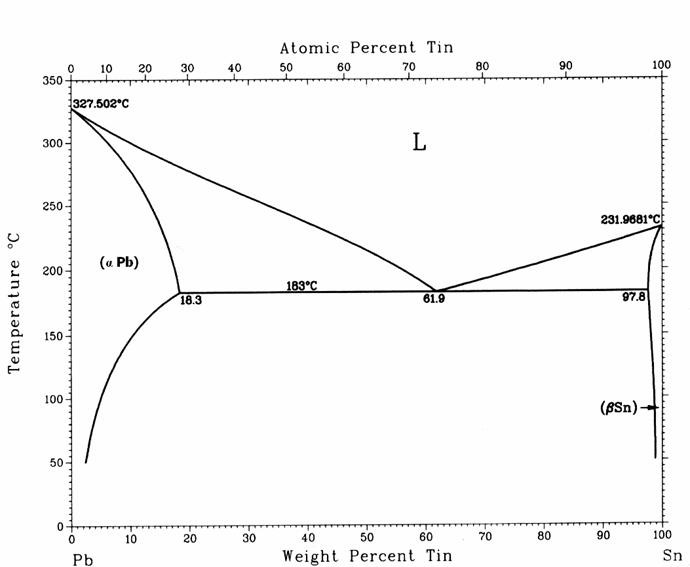
- 1 : ดีบุก 20% และตะกั่ว 80% โดยน้ำหนัก
- 2 : ดีบุก 25% และตะกั่ว 75% โดยน้ำหนัก
- 3 : ดีบุก 30% และตะกั่ว 70% โดยน้ำหนัก
- 4 : ดีบุก 35% และตะกั่ว 65% โดยน้ำหนัก
- คำตอบที่ถูกต้อง : 3
- จาก
แผนภาพเฟสดีบุก-ตะกั่ว โลหะผสมของดีบุก 85% และตะกั่ว 15% โดยน้ำหนัก จำนวน
750 กรัมที่อุณหภูมิสูงกว่า 183˚C เล็กน้อย ประกอบด้วยเฟส Proeutectic β
กี่กรัม

- 1 : 323.4
- 2 : 482.6
- 3 : 526.7
- 4 : 651.2
- คำตอบที่ถูกต้อง : 2
- จาก แผนภาพเฟสดีบุก-ตะกั่ว โลหะผสมของดีบุก 85% และตะกั่ว 15% โดยน้ำหนัก จำนวน 750 กรัมที่อุณหภูมิต่ำกว่า 183˚C เล็กน้อย ประกอบด้วยเฟส α กี่กรัม
- 1 : 323.65
- 2 : 240.64
- 3 : 120.75
- 4 : 94.36
- คำตอบที่ถูกต้อง : 3
- จาก แผนภาพเฟสของทองแดง (Cu) เงิน (Ag) โครงสร้างของโลหะผสมทองแดงและเงินที่อุณหภูมิต่ำกว่า 779˚C เล็กน้อย ประกอบด้วยเฟส Proeutectic α 68% โดยน้ำหนัก และเฟสของ Eutectic (α + β) 32% โดยน้ำหนัก ส่วนผสมของโลหะนี้คือข้อใด
- 1 : ทองแดง 10% และเงิน 90% โดยน้ำหนัก
- 2 : ทองแดง 15% และเงิน 85% โดยน้ำหนัก
- 3 : ทองแดง 20% และเงิน 80% โดยน้ำหนัก
- 4 : ทองแดง 25% และเงิน 75% โดยน้ำหนัก
- คำตอบที่ถูกต้อง : 2
- โลหะ ผสมของทองแดง 70% และ เงิน 30% โดยน้ำหนัก จำนวน 800 กรัม ที่อุณหภูมิต่ำกว่า 779 องศาเซลเซียส เล็กน้อย จะมีเฟสใดเกิดขึ้นบ้างและเกิดขึ้นเป็นจำนวนเท่าใด
- 1 : เฟส (Cu) 410.5 กรัม และเฟส (Ag) 389.5 กรัม
- 2 : เฟส (Cu) 501.7 กรัม และเฟส (Ag) 298.3 กรัม
- 3 : เฟส (Cu) 524.6 กรัม และเฟส (Ag) 275.4 กรัม
- 4 : เฟส (Cu) 588.8 กรัม และเฟส (Ag) 211.5 กรัม
- คำตอบที่ถูกต้อง : 4
- โลหะ ผสมของทองแดง 70% และ เงิน 30% โดยน้ำหนัก จำนวน 800 กรัม ที่อุณหภูมิสูงกว่า 779 องศาเซลเซียส เล็กน้อย จะมีเฟสใดเกิดขึ้นบ้างและเกิดขึ้นเป็นจำนวนเท่าใด
- 1 : เฟส (Cu) 610.5 กรัม และเฟส (Ag) 189.5 กรัม
- 2 : เฟส (Cu) 510.7 กรัม และเฟส (Ag) 298.3 กรัม
- 3 : เฟส (Cu) 524.6 กรัม และเฟส (Ag) 275.4 กรัม
- 4 : เฟส (Cu) 730 กรัม และเฟส (Ag) 70 กรัม
- คำตอบที่ถูกต้อง : 3
- จากแผนภาพเฟสของ นิกเกิล (Ni)- ไททาเนียม (Ti) ข้อใดคือปฏิกิริยา Eutectic ที่เกิดขึ้น

- 1 :
- 2 :
- 3 :
- 4 :
- คำตอบที่ถูกต้อง : 1
- จากแผนภาพเฟสของ นิกเกิล (Ni) - ไททาเนียม (Ti) ข้อใดคือปฏิกิริยา Peritectic ที่เกิดขึ้น
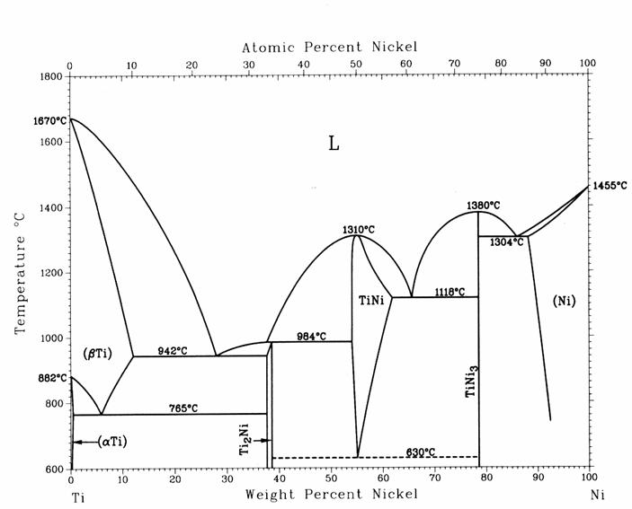
- 1 :
- 2 :
- 3 :
- 4 :

- คำตอบที่ถูกต้อง : 4
- ใน ระบบ Ternary ซึ่งประกอบด้วยส่วนประกอบ 3 ชนิด อยากทราบว่าถ้าให้อุณหภูมิสามารถเปลี่ยนแปลงได้ แต่ความดันมีค่าคงที่ จะมีจำนวนเฟสเกิดขึ้นได้มากที่สุดพร้อมกันกี่เฟสที่อุณหภูมิและส่วนประกอบ เดียวกัน
- 1 : 5
- 2 : 4
- 3 : 3
- 4 : 2
- คำตอบที่ถูกต้อง : 2
- จาก แผนภาพเฟสทองแดง-เงิน ถ้าโลหะผสมของทองแดง 70% และ เงิน 30% โดยน้ำหนัก จำนวน 800 กรัม ที่อุณหภูมิ 800 องศาเซลเซียส จะมีเฟสใดเกิดขึ้นบ้างและเกิดขึ้นเป็นจำนวนเท่าใด
- 1 : เฟส (Cu) 610.5 กรัม และเฟสของเหลว 189.5 กรัม
- 2 : เฟส (Cu) 549.6 กรัม และเฟสของเหลว 250.4 กรัม
- 3 : เฟส (Cu) 580.6 กรัม และเฟสของเหลว 219.4 กรัม
- 4 : เฟส (Cu) 730 กรัม และเฟสของเหลว 70 กรัม
- คำตอบที่ถูกต้อง : 2
- ข้อใดต่อไปนี้ไม่ใช่เฟสในเหล็กกล้าคาร์บอน (Carbon steel)
- 1 : เหล็กบริสุทธิ์
- 2 : เฟร์ไรต์ (Ferrite)
- 3 : ซีเมนไทต์ (Cementite)
- 4 : ออสเทไนต์ (Austenite)
- คำตอบที่ถูกต้อง : 1
- ซีเมนไทต์ (Cementite) ในเหล็กกล้าคาร์บอนเป็นเฟส (Phase) ชนิดใด
- 1 : ธาตุบริสุทธิ์
- 2 : สารละลายของแข็ง (Solid solution)
- 3 : สารประกอบ (Compound)
- 4 : สารประกอบระหว่างโลหะ (Intermetallic compound)
- คำตอบที่ถูกต้อง : 3
- เหล็กกล้าคาร์บอน 0.8wt%C ชุบในน้ำเย็นจากอุณหภูมิ 1000 องศาเซลเซียส จะได้โครงสร้างใด
- 1 : มาร์เทนไซต์ (Martensite)
- 2 : เฟร์ไรต์ (Ferrite)
- 3 : เพอร์ไลต์ (Pearlite)
- 4 : ออสเทไนต์ (Austenite)
- คำตอบที่ถูกต้อง : 1
- โลหะผสมในข้อใดต่อไปนี้ที่สามารถเพิ่มความแข็งแรงโดยการบ่มแข็ง (Age hardening) ได้

- 1 : Al + 4wt%Cu
- 2 : Al + 8wt%Cu
- 3 : Al + 12wt%Cu
- 4 : Al + 16wt%Cu
- คำตอบที่ถูกต้อง : 1
- เฟสของแข็งเฟสแรกที่เกิดจากการแข็งตัวจากสภาวะของเหลวของ Al+20wt%Si คือข้อใด
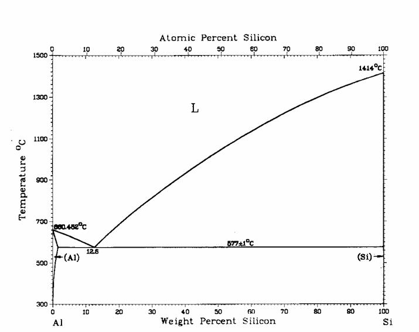
- 1 : (Al)
- 2 : (Si)
- 3 : Eutectic ((Al)+(Si))
- 4 : สารประกอบอะลูมิเนียมซิลิไซด์
- คำตอบที่ถูกต้อง : 2
- โครงสร้างงานหล่อทองเหลือง (Zn+ 20wt%Cu) โดยทั่วไป จะเป็นดังในข้อใด

- 1 : สารละลายของแข็ง (Solid solution) ส่วนผสมเท่ากันทุกตำแหน่ง
- 2 : สารละลายของแข็ง (Solid solution) ลักษณะเป็นเดนไดรท์ (Dendrite)
- 3 : สารประกอบ (Compound) ส่วนผสมเท่ากันทุกตำแหน่ง
- 4 : สารประกอบ (Compound) ลักษณะเป็นเดนไดรท์ (Dendrite)
- คำตอบที่ถูกต้อง : 2
- ช่วงการแข็งตัว (Freezing range) ของโลหะผสม Cu + 40wt%Ni มีค่าประมาณเท่าใด

- 1 : 10 องศาเซลเซียส
- 2 : 40 องศาเซลเซียส
- 3 : 100 องศาเซลเซียส
- 4 : 150 องศาเซลเซียส
- คำตอบที่ถูกต้อง : 2
- โลหะผสม Cu + 40wt%Ni แข็งตัวอย่างช้าๆ ในภาวะสมดุล การแข็งตัวจะเริ่มต้นและสิ้นสุดที่อุณหภูมิใดโดยประมาณ (องศาเซลเซียส)

- 1 : เริ่มต้น 1455 สิ้นสุด 1085
- 2 : เริ่มต้น 1455 สิ้นสุด 1240
- 3 : เริ่มต้น 1280 สิ้นสุด 1240
- 4 : เริ่มต้น 1280 สิ้นสุด 1085
- คำตอบที่ถูกต้อง : 3
- โครง
สร้างที่เกิดขึ้นจากการแข็งตัวของโลหะผสม Pb + 30wt%Sn ในภาวะสมดุล
ประกอบด้วยโครงสร้างยูเทกติก (Eutectic microconstituent) ประมาณเท่าใด

- 1 : 16%
- 2 : 26%
- 3 : 36%
- 4 : 46%
- คำตอบที่ถูกต้อง : 2
- ข้อมูลในข้อใดต่อไปนี้ที่ไม่สามารถหาได้จากแผนภาพเฟส (Phase diagram)
- 1 : ชนิดของเฟสในภาวะสมดุล
- 2 : ส่วนผสมของเฟสในภาวะสมดุล
- 3 : ปริมาณของเฟสในภาวะสมดุล
- 4 : รูปร่างของเฟสในภาวะสมดุล
- คำตอบที่ถูกต้อง : 4
- โครงสร้างที่ได้จากกระบวนการมาร์เทมเปอริ่ง (Martempering) คือโครงสร้างใด
- 1 : เฟร์ไรต์ (Ferrite)
- 2 : เพอร์ไรต์ (Pearite)
- 3 : เบไนต์ (Bainite)
- 4 : มาร์เทนไซต์ (Martensite)
- คำตอบที่ถูกต้อง : 4
- ธาตุใดส่งเสริมให้เกิดแกรไฟต์ (Graphite) แทนที่จะเกิดคาร์ไบด์ (Carbide) ในเหล็กหล่อ
- 1 : Cr
- 2 : Mn
- 3 : Mo
- 4 : Si
- คำตอบที่ถูกต้อง : 4
- วัตถุประสงค์หลักของการอบคืนไฟ (Tempering) คือข้อใด
- 1 : เพิ่มความแข็งให้กับเพอร์ไลต์ (Pearlite)
- 2 : เพิ่มความแข็งให้กับมาร์เทนไซต์ (Martensite)
- 3 : เพิ่มความเหนียวให้กับเพอร์ไลต์ (Pearlite)
- 4 : เพิ่มความเหนียวให้กับมาร์เทนไซต์ (Martensite)
- คำตอบที่ถูกต้อง : 4
- การอบปรกติ (Normalizing) สำหรับเหล็กกล้า 0.2wt%C ควรอบที่อุณหภูมิใด (องศาเซลเซียส)
- 1 : 700
- 2 : 800
- 3 : 950
- 4 : 1050
- คำตอบที่ถูกต้อง : 3
- อุณหภูมิที่เหมาะสมในการบ่มเพื่อเพิ่มความแข็ง (Aging) สำหรับโลหะผสม Al + 4wt%Cu คือข้อใด (องศาเซลเซียส)
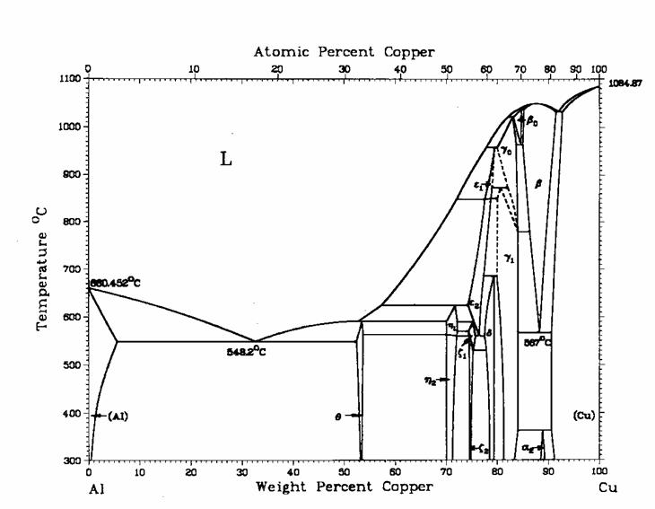
- 1 : 200
- 2 : 400
- 3 : 500
- 4 : 600
- คำตอบที่ถูกต้อง : 1
- ในการหล่อโลหะผสม Cu + 10wt%Sn จะเกิดปฏิกิริยาเพริเทกติก (Peritectic) ได้หรือไม่
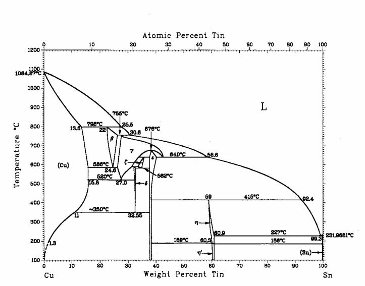
- 1 : ไม่สามารถเกิดได้ เพราะส่วนผสมไม่ใช่ส่วนผสมเพริเทกติก
- 2 : ไม่สามารถเกิดได้ เพราะปริมาณดีบุกน้อยเกินไป
- 3 : สามารถเกิดได้ในกรณีที่การแข็งตัวเป็นไปอย่างไม่สมดุล
- 4 : สามารถเกิดได้ในทุกกรณี ไม่ว่าการแข็งตัวจะเป็นแบบสมดุลหรือไม่ก็ตาม
- คำตอบที่ถูกต้อง : 3
- โครงสร้างงานหล่อของโลหะชนิดใดต่อไปนี้ที่จะไม่มีเดนไดรต์ (Dendrite) ปรากฏให้เห็นอย่างชัดเจน
- 1 : ทองเหลือง
- 2 : อะลูมิเนียมผสมซิลิคอน
- 3 : เหล็กกล้าคาร์บอนต่ำ
- 4 : เหล็กกล้าไร้สนิม
- คำตอบที่ถูกต้อง : 3
- การ
เปลี่ยนเฟสจากออสเทไนต์ (Austenite) เป็นเบไนต์ (Bainite)
ของเหล็กกล้าคาร์บอน 0.8wt%C ที่อุณหภูมิ 300 องศาเซลเซียส
เกิดขึ้นได้ค่อนข้างช้า เพราะเหตุใด

- 1 : แรงผลัก (Driving force) ต่ำ เนื่องจากอุณหภูมิต่ำเกินไป
- 2 : อัตราการแพร่ซึม (Diffusion rate) ของคาร์บอนต่ำเกินไป
- 3 : อัตราการแพร่ซึม (Diffusion rate) ของเหล็กต่ำเกินไป
- 4 : เหล็กมีปริมาณคาร์บอนสูงเกินไป
- คำตอบที่ถูกต้อง : 2
- แท่ง ทองเหลืองทรงกระบอกขนาดเส้นผ่านศูนย์กลาง 10 มม. ยาว 150 มม. ได้รับความร้อนที่อุณหภูมิห้อง (25 องศาเซลเซียส) จนมีอุณหภูมิถึง 160 องศาเซลเซียส ทำให้เส้นผ่านศูนย์กลางของ แท่งทองเหลืองมีขนาดเพิ่มขึ้นเท่าไร กำหนดให้ค่าสัมประสิทธิ์การขยายตัวทางความร้อนของทองเหลือง คือ 20.0 (องศาเซลเซียส x 10-6) และค่า Poissons Ratio = 0.34
- 1 : 0.0095 มม.
- 2 : 0.0270 มม.
- 3 : 0.0345 มม.
- 4 : 0.0375 มม.
- คำตอบที่ถูกต้อง : 2
- วัสดุส่วนใหญ่ในกลุ่มใดที่เปราะ (Brittle) มากที่สุด
- 1 : พลาสติก
- 2 : ยาง
- 3 : โลหะ
- 4 : เซรามิก
- คำตอบที่ถูกต้อง : 4
- วัสดุส่วนใหญ่ในกลุ่มใดมีสภาพยืดหยุ่นได้ (Ductile) มากที่สุด
- 1 : โลหะ
- 2 : เซรามิก
- 3 : พอลิเมอร์
- 4 : วัสดุเชิงประกอบ
- คำตอบที่ถูกต้อง : 3
- วัสดุส่วนใหญ่ในกลุ่มใดมีความแข็งตึง (Stiffness) มากที่สุด
- 1 : โลหะ
- 2 : เซรามิก
- 3 : พลาสติก
- 4 : ยาง
- คำตอบที่ถูกต้อง : 2
- การครีพ (Creep) ของวัสดุโลหะ หมายถึง การเสียรูปที่อุณหภูมิสูงในลักษณะใด
- 1 : การเสียรูปถาวรของวัสดุ (Plastic deformation) เนื่องจากได้รับแรงดึงเกินจุดคราก (Yield point) เป็นเวลานานๆ
- 2 : การเสียรูปชั่วคราวของวัสดุ (Elastic deformation) เนื่องจากได้รับแรงดึงเกินจุดคราก (Yield point) เป็นเวลานานๆ
- 3 : การเสียรูปถาวรของวัสดุ (Plastic deformation) เนื่องจากได้รับแรงดึงต่ำกว่าจุดคราก (Yield point) เป็นเวลานานๆ
- 4 : การเสียรูปชั่วคราวของวัสดุ (Elastic deformation) เนื่องจากได้รับแรงดึงต่ำกว่าจุดคราก (Yield point) เป็นเวลานานๆ
- คำตอบที่ถูกต้อง : 3
- วัสดุในข้อใดต่อไปนี้มีความแข็ง (Hardness) มากที่สุด
- 1 : เหล็กหล่อขาว
- 2 : เหล็กกล้าเครื่องมือ
- 3 : อะลูมินา
- 4 : แท่งนาโนเพชร
- คำตอบที่ถูกต้อง : 4
- ภายใต้แรงดึงอย่างไรที่ทำให้เหล็กกล้าคาร์บอนต่ำเสียรูปอย่างไม่สม่ำเสมอ (Non-uniform deformation)
- 1 : ใช้แรงดึงน้อยกว่าความต้านแรงคราก (Yield strength)
- 2 : ใช้แรงดึงมากกว่าความต้านแรงคราก (Yield strength)
- 3 : ใช้แรงดึงน้อยกว่าความต้านแรงดึง (Tensile strength)
- 4 : ใช้แรงดึงมากกว่าความต้านแรงดึง (Tensile strength)
- คำตอบที่ถูกต้อง : 4
- สมบัติ
ใดบ่งชี้ถึงพลังงานที่วัสดุดูดกลืนไว้ในช่วงการเสียรูปชั่วคราวของวัสดุ
(Elastic deformation) และเมื่อมีการปลดแรงกระทำออกแล้ว
พลังงานนี้จะต้องถูกคลายกลับคืนมา
- 1 : ความเหนียว (Toughness)
- 2 : มอดุลัสของรีซิเลียนซ์ (Modulus of resilience)
- 3 : ความแข็งแรง (Strength)
- 4 : อัตราส่วนของปัวซอง (Poissons ratio)
- คำตอบที่ถูกต้อง : 2
- สมบัติใดบ่งชี้ถึงพลังงานที่วัสดุดูดกลืนไว้ก่อนที่ชิ้นงานแตกหัก
- 1 : มอดุลัสของสภาพยืดหยุ่น (Modulus of elasticity)
- 2 : ความแข็งแรง (Strength)
- 3 : ความเหนียว (Toughness)
- 4 : อัตราส่วนของปัวซอง (Poissons ratio)
- คำตอบที่ถูกต้อง : 3
- สมบัติ ใดบ่งชี้การเปลี่ยนแปลงขนาดของแท่งโลหะตามทิศทางการดึงเทียบกับขนาดเดิมใน ทิศทางนั้นต่อการเปลี่ยนแปลงขนาดของแท่งโลหะในทิศทางตั้งฉากกับทิศทางการดึง เทียบกับขนาดเดิมในทิศทางนั้น
- 1 : มอดุลัสของสภาพยืดหยุ่น (Modulus of elasticity)
- 2 : ความแข็งแรง (Strength)
- 3 : ความเหนียว (Toughness)
- 4 : อัตราส่วนของปัวซอง (Poissons ratio)
- คำตอบที่ถูกต้อง : 4
- เซรามิกสามารถรับแรงชนิดใดได้ดีที่สุด
- 1 : แรงดึง (Tension)
- 2 : แรงอัด (Compression)
- 3 : แรงบิด (Torsion)
- 4 : แรงกระแทก (Impact)
- คำตอบที่ถูกต้อง : 2
- ชิ้นงานในลักษณะใดที่ต้านทานการเสียรูปด้วยการดึงมากที่สุด
- 1 : ชิ้นงานที่มีความแข็งตึงมาก (Stiffness)
- 2 : ชิ้นงานที่มีความเหนียวมาก (Toughness)
- 3 : ชิ้นงานที่มีสภาพดึงยืดได้มาก (Ductility)
- 4 : ชิ้นงานที่มีความแข็งแรงสูง (Strength)
- คำตอบที่ถูกต้อง : 1
- การทดสอบใดที่เหมาะสมสำหรับหาค่าความเหนียว (Toughness) ของวัสดุมากที่สุด
- 1 : Impact test
- 2 : Bending test
- 3 : Creep test
- 4 : Hardness test
- คำตอบที่ถูกต้อง : 1
- เครื่องวัดความแข็งแบบบริเนลเหมาะสมสำหรับวัดความแข็งของวัสดุชนิดใดต่อไปนี้มากที่สุด
- 1 : เหล็กหล่อเทา
- 2 : ยางพารา
- 3 : ไม้สัก
- 4 : พลาสติก
- คำตอบที่ถูกต้อง : 1
- แท่ง โลหะผสมของอลูมิเนียมมีเส้นผ่านศูนย์กลาง 15 มิลลิเมตร นำไปทดสอบด้วยแรงดึง (Tension) 24.5 กิโลนิวตัน ถ้าเส้นผ่านศูนย์กลางของโลหะผสมนี้กลายเป็น 14.5 มิลลิเมตร จงหาค่าความเค้นทางวิศวกรรม (Engineering stress) ในหน่วย MPa
- 1 : 139
- 2 : 148
- 3 : 160
- 4 : 183
- คำตอบที่ถูกต้อง : 1
- วัสดุในข้อใดต่อไปนี้มีความแข็งแรง (Strength) มากที่สุด
- 1 : ท่อนาโนคาร์บอน
- 2 : เหล็กหล่อเทา
- 3 : ไททาเนียมผสมนิเกิล
- 4 : เพชร
- คำตอบที่ถูกต้อง : 1
- ข้อใดถูกต้อง
- 1 : ความเค้นจริง คือ แรงกระทำต่อหนึ่งหน่วยพื้นที่ของชิ้นงานเริ่มต้นก่อนรับแรง
- 2 : ความเค้นทางวิศวกรรม คือ แรงกระทำต่อหนึ่งหน่วยพื้นที่ของชิ้นงานในขณะใด ๆ
- 3 : ความเครียดจริง คือ การเปลี่ยนแปลงความยาวของชิ้นงานต่อหนึ่งหน่วยความยาวของชิ้นงานเริ่มต้นก่อนการเปลี่ยนแปลง
- 4 : ความเครียดทางวิศวกรรม คือ การเปลี่ยนแปลงความยาวของชิ้นงานต่อหนึ่งหน่วยความยาวของชิ้นงานเริ่มต้นก่อนการเปลี่ยนแปลง
- คำตอบที่ถูกต้อง : 4
- จง คำนวณค่ามอดุลัสของสภาพยืดหยุ่น (Modulus of elasticity) ของวัสดุ M จากข้อมูลต่อไปนี้ วัสดุ M ได้รับแรงดึง (Tension) ซึ่งทำให้เกิดการเสียรูปอย่างชั่วคราว (Elastic deformation) โดยมีค่าความเค้นทางวิศวกรรม (Engineering stress) เท่ากับ 500 MPa และความเครียดทางวิศวกรรม (Engineering strain) เท่ากับ 0.001
- 1 : 500 GPa
- 2 : 50 GPa
- 3 : 5 GPa
- 4 : 0.5 GPa
- คำตอบที่ถูกต้อง : 1
- ภายใต้แรงดึง (Tension) อย่างไรที่ทำให้ชิ้นงานเสียรูปแบบยืดหยุ่น (Elastic deformation)
- 1 : ใช้แรงดึงน้อยกว่าความต้านแรงคราก (Yield strength)
- 2 : ใช้แรงดึงมากกว่าความต้านแรงคราก (Yield strength)
- 3 : ใช้แรงดึงน้อยกว่าความต้านแรงดึง (Tensile strength)
- 4 : ใช้แรงดึงมากกว่าความต้านแรงดึง (Tensile strength)
- คำตอบที่ถูกต้อง : 1
- ภายใต้แรงดึง (Tension) อย่างไรที่ทำให้ชิ้นงานเสียรูปอย่างถาวร (Plastic deformation)
- 1 : ใช้แรงดึงน้อยกว่าความต้านแรงคราก (Yield strength)
- 2 : ใช้แรงดึงมากกว่าความต้านแรงคราก (Yield strength)
- 3 : ใช้แรงดึงน้อยกว่าความต้านแรงดึง (Tensile strength)
- 4 : ใช้แรงดึงมากกว่าความต้านแรงดึง (Tensile strength)
- คำตอบที่ถูกต้อง : 2
- ภาย ใต้แรงดึง (Tension) อย่างไรที่ทำให้ชิ้นงานอะลูมิเนียมเสียรูปอย่างถาวรและสม่ำเสมอตลอดทั้งชิ้น งาน (Uniform-plastic deformation)
- 1 : ใช้แรงดึงน้อยกว่าความต้านแรงคราก (Yield strength)
- 2 : ใช้แรงดึงมากกว่าความต้านแรงคราก (Yield strength)
- 3 : ใช้แรงดึงมากกว่าความต้านแรงคราก (Yield strength) แต่น้อยกว่าความต้านแรงดึง (Tensile strength)
- 4 : ใช้แรงดึงมากกว่าความต้านแรงดึง (Tensile strength)
- คำตอบที่ถูกต้อง : 3
- ความสามารถในการเปลี่ยนแปลงรูปร่างของวัสดุก่อนการแตกหัก หมายถึง สมบัติข้อใด
- 1 : ความแข็งตึง (Stiffness)
- 2 : สภาพดึงยืดได้ (Ductility)
- 3 : ความยืดหยุ่น (Resilience)
- 4 : ความล้า (Fatigue)
- คำตอบที่ถูกต้อง : 2
- ข้อใดกล่าวผิด เกี่ยวกับกฎของฮุก (Hookes law)
- 1 : ความสัมพันธ์ของความเค้น (Stress) และความเครียด (Strain) ที่แปรผันตรงซึ่งกันและกัน
- 2 : ค่าคงที่ของการแปรผันที่เป็นไปตามกฎของฮุก คือ ค่ามอดุลัสสภาพยืดหยุ่น (Modulus of elasticity)
- 3 : การเสียรูปที่เกิดขึ้นซึ่งความเค้น (Stress) และความเครียด (Strain) แปรผันตรงซึ่งกันและกันนี้ เรียกว่า การเสียรูปอย่างถาวร (Plastic deformation)
- 4 : ค่ามอดุลัสสภาพยืดหยุ่นเป็นค่าที่บอกถึงความแข็งตึง (Stiffness) ของวัสดุในการต้านทานต่อการเสียรูปแบบยืดหยุ่น (Elastic deformation) ของวัสดุ
- คำตอบที่ถูกต้อง : 3
- ความล้า (Fatigue) ของวัสดุหมายถึงอะไร
- 1 : การยืดตัวทีละน้อย เนื่องจากวัสดุรับแรงเป็นเวลานาน
- 2 : วัสดุมีความแข็งแรงลดลง เนื่องจากรับแรงซ้ำซาก
- 3 : การสึกหรอของชิ้นงาน เนื่องจากรับแรงซ้ำซากเป็นเวลานาน
- 4 : การแตกร้าวของชิ้นงาน เนื่องจากรับแรงซ้ำซากเป็นเวลานาน
- คำตอบที่ถูกต้อง : 4
- การทดสอบความแข็งของเหล็กหล่อเทา (Gray cast iron) ควรใช้วิธีทดสอบแบบใด
- 1 : บริเนลล์ (Brinell)
- 2 : วิกเกอร์ส (Vickers)
- 3 : รอคเวลล์ ซี (Rockwell C)
- 4 : รอคเวลล์ เอ (Rockwell A)
- คำตอบที่ถูกต้อง : 1
- สภาพดึงยืดได้ (Ductility) ของโลหะสามารถทดสอบได้โดยวิธีใด
- 1 : การทดสอบโดยใช้แรงดึง (Tensile test)
- 2 : การทดสอบความแข็ง (Hardness test)
- 3 : การทดสอบโดยใช้แรงกระแทก (Impact test)
- 4 : การทดสอบความล้า (Fatigue test)
- คำตอบที่ถูกต้อง : 1
- จง คำนวณค่าความเครียดทางวิศวกรรม (Engineering strain) ของวัสดุรูปร่างเป็นแท่งยาว 2.2 เมตร และพื้นที่หน้าตัดเป็นรูปสี่เหลี่ยมจัตุรัสมีความยาวแต่ละด้านเท่ากับ 50 มิลลิเมตร เมื่อนำไปรับแรงดึงปรากฏว่าความยาวเพิ่มขึ้นเป็น 2.202 เมตร
- 1 : 0.09
- 2 : 0.009
- 3 : 0.0009
- 4 : 0.00009
- คำตอบที่ถูกต้อง : 3
- จง คำนวณค่าความเค้นทางวิศวกรรม (Engineering stress) ของวัสดุรูปทรงกระบอกเส้นผ่านศูนย์กลาง 10 มิลลิเมตร ยาว 1 เมตร และถูกรับแรงดึงขนาด 50,000 N
- 1 : 640 GPa
- 2 : 640 MPa
- 3 : 640 kPa
- 4 : 640 Pa
- คำตอบที่ถูกต้อง : 2
- ลวด ทองแดงยาว 500 มิลลิเมตร มีค่ามอดุลัสของสภาพยืดหยุ่น (Modulus of elasticity) 110 GPa ถูกดึงด้วยแรงดึงจนมีความเค้น 350 MPa หากการเสียรูปที่เกิดขึ้นนี้เป็นการเสียรูปแบบยืดหยุ่น (Elastic deformation) ลวดทองแดงจะถูกยืดออกจนมีความยาวเปลี่ยนแปลงไปจากเดิมกี่มิลลิเมตร
- 1 : 0.016
- 2 : 0.16
- 3 : 1.6
- 4 : 16
- คำตอบที่ถูกต้อง : 3
- เมื่อ
นำวัสดุ A และวัสดุ B
มาทดสอบแรงดึงได้ความสัมพันธ์ระหว่างความเค้นและความเครียดดังรูป
จากผลการทดสอบ ข้อใดต่อไปนี้เปรียบเทียบสมบัติของวัสดุ A และวัสดุ B
ได้ถูกต้องที่สุด
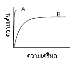
- 1 : วัสดุ A มีความแข็งตึง (Stiffness) มากกว่าวัสดุ B
- 2 : วัสดุ A มีความเหนียว (Toughness) มากกว่าวัสดุ B
- 3 : วัสดุ A มีความยืดหยุ่น (Resilience) มากกว่าวัสดุ B
- 4 : วัสดุ A มีสภาพดึงยืดได้ (Ductility) มากกว่าวัสดุ B
- คำตอบที่ถูกต้อง : 1
- แท่ง โลหะมีพื้นที่หน้าตัดเป็นรูปสี่เหลี่ยมผืนผ้า มีขนาดกว้างเท่ากับ 7 เซนติเมตร ความหนาเท่ากับ 3 เซนติเมตร ทำจากเหล็กกล้าเกรด 1020 ซึ่งมีค่าความต้านแรงดึง (Tensile strength) เท่ากับ 380 MPa และค่าความต้านแรงคราก (Yield strength) เท่ากับ 180 MPa เมื่อแท่งโลหะนี้ได้รับแรงดึง 25,000 นิวตัน จะเกิดการเสียรูปอย่างไร
- 1 : เกิดการเสียรูปแบบยืดหยุ่น
- 2 : เกิดการเสียรูปอย่างถาวรโดยเสียรูปอย่างสม่ำเสมอตลอดทั้งชิ้นงาน
- 3 : เกิดการเสียรูปอย่างถาวรโดยเสียรูปอย่างไม่สม่ำเสมอตลอดทั้งชิ้นงาน
- 4 : เกิดการเสียรูปอย่างถาวรโดยเสียรูปอย่างไม่สม่ำเสมอตลอดทั้งชิ้นงานและแตกหัก
- คำตอบที่ถูกต้อง : 1
- ชิ้น งานทดสอบชนิดหนึ่งเมื่อได้รับความเค้น 30,000 lb/in2 จะก่อให้เกิดความเครียดเท่ากับ 0.05 จงคำนวณหาค่ามอดุลัสของสภาพยืดหยุ่น (Modulus of elasticity) ในหน่วย lb/in2 ของชิ้นงานทดสอบนี้
- 1 :
- 2 :
- 3 :
- 4 :
- คำตอบที่ถูกต้อง : 3
- หาก ต้องการเปรียบเทียบการเปลี่ยนแปลงขนาดของวัสดุตามทิศทางการดึงต่อการเปลี่ยน แปลงขนาดในทิศทางตั้งฉากกับทิศทางการดึงของวัสดุชนิดต่างๆ ควรนำสมบัติของวัสดุในข้อใดต่อไปนี้มาพิจารณาเปรียบเทียบ
- 1 : ความเค้น (Stress)
- 2 : อัตราส่วนของปัวซอง (Poissons ratio)
- 3 : ความเหนียว (Toughness)
- 4 : มอดุลัสของสภาพยืดหยุ่น (Modulus of elasticity)
- คำตอบที่ถูกต้อง : 2
- วัสดุในข้อใดต่อไปนี้มีความแข็ง (Hardness) มากที่สุด
- 1 : พอลิไวนิลคลอไรด์
- 2 : เหล็กกล้าไร้สนิมมาเทนไซต์
- 3 : เหล็กหล่อเทา
- 4 : ซิลิกอนคาร์ไบด์
- คำตอบที่ถูกต้อง : 4
- วัสดุชิ้นหนึ่งถูกดึงจนขาดเป็น 2 ส่วน พบว่าบริเวณรอยขาดแยกแตกแบบราบเรียบ แสดงว่าวัสดุนี้น่าจะมีสมบัติอย่างไร
- 1 : มีความแข็งตึง (Stiffness) สูง และความแข็ง (Hardness) สูง
- 2 : มีความแข็งตึง (Stiffness) สูง และสภาพดึงยืดได้ (Ductility) สูง
- 3 : มีความแข็ง (Hardness) ต่ำ และสภาพดึงยืดได้ (Ductility) สูง
- 4 : มีความแข็ง (Hardness) ต่ำ และสภาพดึงยืดได้ (Ductility) ต่ำ
- คำตอบที่ถูกต้อง : 1
- ข้อใดเป็นภาพแสดงการเกิดครีพ (Creep) ของวัสดุ
- 1 :
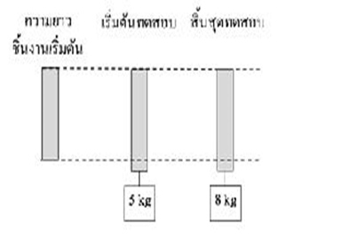
- 2 :
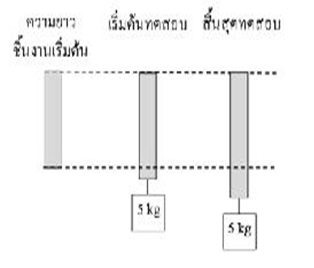
- 3 :
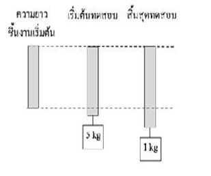
- 4 :
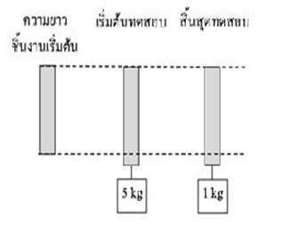
- คำตอบที่ถูกต้อง : 2
- เมื่อ
นำชิ้นงานทดสอบที่มีความยาวเริ่มต้น 50 มม. เส้นผ่านศูนย์กลางเริ่มต้น 12.5
มม.
มาทดสอบแรงดึงปรากฎว่าได้ความสัมพันธ์ระหว่างแรงที่ใช้ดึงกับระยะยืดดังรูป
ค่ายังมอดุลัสของวัสดุนี้มีค่าเป็นเท่าไร
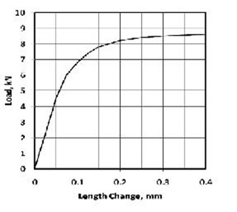
- 1 : 18 GPa
- 2 : 18 MPa
- 3 : 37 GPa
- 4 : 37 MPa
- คำตอบที่ถูกต้อง : 3
- เมื่อ
นำชิ้นงานทดสอบที่มีความยาวเริ่มต้น 50 มม. เส้นผ่านศูนย์กลางเริ่มต้น 12.5
มม.
มาทดสอบแรงดึงปรากฎว่าได้ความสัมพันธ์ระหว่างแรงที่ใช้ดึงกับระยะยืดดังรูป
ค่า yield strength at 0.2% offset ของวัสดุนี้มีค่าเป็นเท่าไร
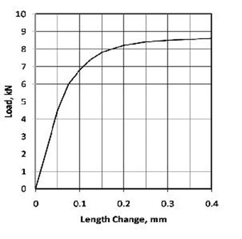
- 1 : 67 GPa
- 2 : 67 MPa
- 3 : 90 GPa
- 4 : 90 MPa
- คำตอบที่ถูกต้อง : 2
- การทดสอบวัดค่าความแข็งแบบใดที่ไม่ใช้กับวัสดุโลหะ
- 1 : บริเนล (Brinell)
- 2 : วิกเกอร์ส (Vickers)
- 3 : นูป (Knoop)
- 4 : ชอร์ (Shore)
- คำตอบที่ถูกต้อง : 4
- เมื่อนำวัสดุเหนียวไปทำการทดสอบแรงดึงจะให้ค่าผลทดสอบเป็นอย่างไร
- 1 : มอดุลัสของสภาพยืดหยุ่น (Modulus of elasticity) มากๆ
- 2 : ความแข็งแรง (Strength) น้อยๆ
- 3 : เปอร์เซ็นต์การยืดตัว (Percentage elongation) มากๆ
- 4 : มอดุลัสของรีซิเลียนซ์ (Modulus of resilience) น้อยๆ
- คำตอบที่ถูกต้อง : 3
- ข้อใดไม่ใช่ค่าที่ได้จากการทดสอบแรงดึง
- 1 : มอดุลัสของสภาพยืดหยุ่น (Modulus of elasticity)
- 2 : ความแข็งแรง (Strength)
- 3 : เปอร์เซ็นต์การยืดตัว (Percentage elongation)
- 4 : ความแข็ง (Hardness)
- คำตอบที่ถูกต้อง : 4
- เส้นกราฟ S-N เป็นผลที่ได้จากการทดสอบสมบัติด้านใดของวัสดุ
- 1 : แรงดัด (Bending)
- 2 : ความล้า (Fatigue)
- 3 : การครีพ (Creep)
- 4 : แรงกระแทก (Impact)
- คำตอบที่ถูกต้อง : 2
- ค่าเปอร์เซ็นต์การลดลงของพื้นที่หน้าตัด (Percent reduction in area) จากการทดสอบแรงดึงเป็นค่าที่แสดงสมบัติใดของวัสดุ
- 1 : สภาพดึงยืดได้ (Ductility)
- 2 : มอดุลัสของสภาพยืดหยุ่น (Modulus of elasticity)
- 3 : ความแข็งแรง (Strength)
- 4 : มอดุลัสของรีซิเลียนซ์ (Modulus of resilience)
- คำตอบที่ถูกต้อง : 1
- ข้อใดไม่ใช่ผลที่ได้จากการทดสอบความล้า (Fatigue)
- 1 : ขีดจำกัดความล้า (Fatigue limit)
- 2 : ความแข็งแรงต่อความล้า (Fatigue strength)
- 3 : อายุการใช้งานเนื่องจากความล้า (Fatigue life)
- 4 : ความเหนียวต่อความล้า (Fatigue toughness)
- คำตอบที่ถูกต้อง : 4
- จากการทดสอบสมบัติด้านการดึงของอะลูมิเนียม ตำแหน่งใดในกราฟแสดงจุดเริ่มเกิดปรากฏการณ์คอคอดของวัสดุ
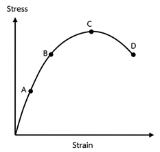
- 1 : A
- 2 : B
- 3 : C
- 4 : D
- คำตอบที่ถูกต้อง : 3
- เมื่อ
นำชิ้นงานทดสอบที่มีความยาวเริ่มต้น 50 มม. เส้นผ่านศูนย์กลางเริ่มต้น 10
มม.
มาทดสอบแรงดึงปรากฏว่าได้ความสัมพันธ์ระหว่างแรงที่ใช้ดึงกับความยาวที่
เปลี่ยนไปดังรูป ถามว่าวัสดุนี้มีค่าความต้านแรงดึง (Tensile strength)
เป็นเท่าไร
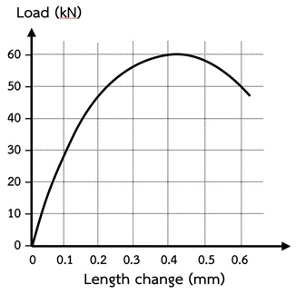
- 1 : 191 Pa
- 2 : 764 Pa
- 3 : 191 MPa
- 4 : 764 MPa
- คำตอบที่ถูกต้อง : 4
- จากการทดสอบสมบัติด้านการดึงของอะลูมิเนียม ตำแหน่งใดในกราฟแสดงจุดคราก (Yield point) ของวัสดุ
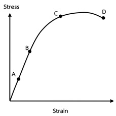
- 1 : A
- 2 : B
- 3 : C
- 4 : D
- คำตอบที่ถูกต้อง : 3
- จากกราฟข้างล่างเป็นผลการทดสอบสมบัติของวัสดุด้านใด
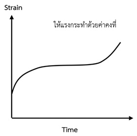
- 1 : ทดสอบความล้า (Fatigue)
- 2 : ทดสอบการครีพ (Creep)
- 3 : ทดสอบแรงอัด (Compression)
- 4 : ทดสอบแรงดัด (Bending)
- คำตอบที่ถูกต้อง : 2
- ปรากฏการณ์คอคอด (Necking) ของการทดสอบแรงดึงวัสดุเหล็กกล้าคาร์บอนต่ำเริ่มเกิดขึ้นในช่วงใด
- 1 : ก่อนถึงจุดคราก (Yield point)
- 2 : เมื่อถึงจุดคราก (Yield point)
- 3 : จุดความเค้นสูงสุด
- 4 : จุดแตกหัก
- คำตอบที่ถูกต้อง : 3
- ข้อใดกล่าวเกี่ยวกับขีดจำกัดความล้า (Fatigue limit) ถูกต้อง
- 1 : เป็นค่าความเค้นสลับสูงสุดที่ไม่ก่อให้เกิดความล้า
- 2 : ขีดจำกัดอายุการใช้งานเมื่อได้รับแรงกระทำซ้ำไปซ้ำมา
- 3 : ถ้าได้รับความเค้นสลับมากกว่าขีดจำกัดนี้จะไม่ทำให้เกิดความเสียหายจากความล้า
- 4 : ถ้าได้รับความเค้นสลับน้อยกว่าขีดจำกัดนี้จะทำให้เกิดความเสียหายจากความล้า
- คำตอบที่ถูกต้อง : 1
- ข้อใดกล่าวเกี่ยวกับผลการทดสอบความล้าในภาพข้างล่างได้ถูกต้อง
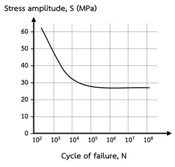
- 1 : ถ้าวัสดุได้รับความเค้นสลับทีี่ 50 MPa จะมีอายุการใช้งาน 1,000,000 รอบ
- 2 : ถ้าวัสดุได้รับความเค้นสลับทีี่ 40 MPa จะมีอายุการใช้งาน 1,000,000 รอบ
- 3 : ถ้าวัสดุได้รับความเค้นสลับทีี่ 30 MPa จะมีอายุการใช้งาน 1,000,000 รอบ
- 4 : ถ้าวัสดุได้รับความเค้นสลับทีี่ 20 MPa จะไม่เกิดความเสียหายเนื่องจากความล้า
- คำตอบที่ถูกต้อง : 4
- แท่ง ไนลอนมีพื้นที่หน้าตัดเป็นรูปสี่เหลี่ยมผืนผ้า มีขนาดกว้างเท่ากับ 7 เซนติเมตร ความหนาเท่ากับ 3 เซนติเมตร ซึ่งมีค่าความต้านแรงดึง (Tensile strength) เท่ากับ 75 MPa และค่าความต้านแรงคราก (Yield strength) เท่ากับ 50 MPa ควรให้แท่งไนลอนได้รับแรงดึงเท่าใดจึงจะไม่เกิดการเสียรูปอย่างถาวร
- 1 : 50 kN
- 2 : 150 kN
- 3 : 50 MN
- 4 : 150 MN
- คำตอบที่ถูกต้อง : 1
- แท่ง ไนลอนมีพื้นที่หน้าตัดเป็นรูปวงกลม มีขนาดเส้นผ่านศูนย์กลาง เท่ากับ 5 เซนติเมตร ซึ่งมีค่าความต้านแรงดึง (Tensile strength) เท่ากับ 75 MPa และค่าความต้านแรงคราก (Yield strength) เท่ากับ 50 MPa เมื่อแท่งไนลอนนี้ได้รับแรงดึง 20 กิโลนิวตัน จะเกิดการเสียรูปอย่างไร
- 1 : เกิดการเสียรูปอย่างถาวรโดยเสียรูปอย่างไม่สม่ำเสมอตลอดทั้งชิ้นงานและแตกหัก
- 2 : เกิดการเสียรูปอย่างถาวรโดยเสียรูปอย่างสม่ำเสมอตลอดทั้งชิ้นงาน
- 3 : เกิดการเสียรูปอย่างถาวรโดยเสียรูปอย่างไม่สม่ำเสมอตลอดทั้งชิ้นงาน
- 4 : เกิดการเสียรูปแบบยืดหยุ่น
- คำตอบที่ถูกต้อง : 4
- วัสดุส่วนใหญ่ในกลุ่มใดมีสัมประสิทธิ์การขยายตัวเนื่องจากความร้อนมากที่สุด
- 1 : โลหะ
- 2 : เซรามิก
- 3 : พอลิเมอร์
- 4 : วัสดุเชิงประกอบ
- คำตอบที่ถูกต้อง : 3
- วัสดุส่วนใหญ่ในกลุ่มใดมีสัมประสิทธิ์การขยายตัวเนื่องจากความร้อนน้อยที่สุด
- 1 : โลหะ
- 2 : เซรามิก
- 3 : พอลิเมอร์
- 4 : วัสดุเชิงประกอบ
- คำตอบที่ถูกต้อง : 2
- วัสดุส่วนใหญ่ในกลุ่มใดสามารถนำความร้อนได้ดีที่สุด
- 1 : โลหะ
- 2 : เซรามิก
- 3 : พอลิเมอร์
- 4 : วัสดุเชิงประกอบ
- คำตอบที่ถูกต้อง : 1
- วัสดุชนิดใดเหมาะสำหรับนำมาทำเป็นตัวนำความร้อนได้ดีที่สุด
- 1 : เหล็กกล้าไร้สนิม
- 2 : อะลูมิเนียม
- 3 : พลาสติก
- 4 : กระจก
- คำตอบที่ถูกต้อง : 2
- วัสดุประเภทใดที่มีช่องว่างของแถบพลังงาน (Energy band gap) กว้าง
- 1 : สารตัวนำ (Conductor)
- 2 : สารกึ่งตัวนำ (Semiconductor)
- 3 : ฉนวน (Insulator)
- 4 : ข้อ 1 2 และ 3 ผิด
- คำตอบที่ถูกต้อง : 3
- โครงสร้างอิเล็กตรอนของสารกึ่งตัวนำทางไฟฟ้า (Semiconductor) คือข้อใด
- 1 : โครงสร้างของสารที่มีอิเล็กตรอนไม่เต็มแถบเวเลนซ์ (Valance band)
- 2 : โครงสร้างของสารที่ระดับพลังงานของแถบการนำ (Conduction band) ซ้อนอยู่กับระดับพลังงานของแถบเวเลนซ์ (Valance band)
- 3 : โครงสร้างของสารที่มีอิเล็กตรอนเต็มแถบเวเลนซ์ (Valance band) แต่ช่องว่างระหว่างแถบเวเลนซ์ (Valance band) และแถบการนำ (Conduction band) ห่างกันไม่มาก
- 4 : โครงสร้างของสารที่มีอิเล็กตรอนเต็มแถบเวเลนซ์ (Valance band) แต่ช่องว่างระหว่างแถบเวเลนซ์ (Valance band) และแถบการนำ (Conduction band) ห่างกันมาก
- คำตอบที่ถูกต้อง : 3
- โครงสร้างของสารตัวนำไฟฟ้าคือข้อใด
- 1 : โครงสร้างของสารที่มีอิเล็กตรอนไม่เต็มแถบเวเลนซ์ (Valance band)
- 2 : โครงสร้างของสารที่ระดับพลังงานของแถบการนำ (Conduction band) ซ้อนอยู่กับระดับพลังงานของแถบเวเลนซ์ (Valance band)
- 3 : ถูกทั้งข้อ 1 และ 2
- 4 : ข้อ 1 2 และ 3 ผิด
- คำตอบที่ถูกต้อง : 3
- แม่เหล็กถาวร (Hard magnet) หมายถึงข้อใด
- 1 : วัสดุที่ง่ายต่อการทำเป็นแม่เหล็ก
- 2 : วัสดุที่สามารถรักษาภาวะการเป็นแม่เหล็กได้ดี
- 3 : วัสดุที่ต้องใช้สนามแม่เหล็กภายนอกน้อยเพื่อทำเป็นแม่เหล็ก
- 4 : เหล็กที่มีสนามแม่เหล็กตกค้างอยู่ภายใน
- คำตอบที่ถูกต้อง : 2
- แม่เหล็กชั่วคราว (Soft magnet) หมายถึงข้อใด
- 1 : วัสดุที่ง่ายต่อการทำเป็นแม่เหล็ก
- 2 : วัสดุที่สามารถลบล้างอำนาจแม่เหล็กได้ง่าย
- 3 : วัสดุที่ต้องใช้สนามแม่เหล็กภายนอกน้อยเพื่อทำเป็นแม่เหล็ก
- 4 : ข้อ 1 2 และ 3 ถูก
- คำตอบที่ถูกต้อง : 4
- อุณหภูมิคูรี (Curie temperature) คือ อุณหภูมิใด
- 1 : อุณหภูมิที่เกิดการเปลี่ยนโครงสร้างผลึก
- 2 : อุณหภูมิที่เกิดการเปลี่ยนสภาพความเป็นแม่เหล็ก
- 3 : อุณหภูมิที่ความจุความร้อนจำเพาะมีค่าคงที่
- 4 : อุณหภูมิที่ของแข็งมีความหนืดลดลง
- คำตอบที่ถูกต้อง : 2
- เมื่อแสงตกกระทบวัสดุใดๆ ปรากฏการณ์ใดสามารถเกิดขึ้นได้บ้าง
- 1 : แสงสะท้อนกลับ
- 2 : แสงผ่านทะลุโดยเกิดการหักเหขึ้นภายใน
- 3 : แสงถูกดูดกลืน
- 4 : ข้อ 1 2 และ 3 ถูก
- คำตอบที่ถูกต้อง : 4
- เมื่อแสงตกกระทบลงบนวัสดุโปร่งใส (Transparent) ไม่มีสี จะเกิดปรากฏการณ์ใดขึ้น
- 1 : แสงสะท้อนกลับ
- 2 : แสงผ่านทะลุโดยเกิดการหักเหขึ้นภายใน
- 3 : แสงถูกดูดกลืน
- 4 : ข้อ 1 2 และ 3 ถูก
- คำตอบที่ถูกต้อง : 2
- เซลล์แสงอาทิตย์ (Solar cell) ใช้หลักการใดในการเปลี่ยนพลังงานจากแสงให้เป็นพลังงานไฟฟ้า
- 1 : การดูดกลืนพลังงานของแสงในสารกึ่งตัวนำ
- 2 : การหักเหของคลื่นแสงในสารกึ่งตัวนำ
- 3 : การสะท้อนของแสงที่ผิวของสารกึ่งตัวนำ
- 4 : ข้อ 1 2 และ 3 ถูก
- คำตอบที่ถูกต้อง : 1
- วัสดุใดต่อไปนี้มีค่าความเป็นแม่เหล็กต่ำที่สุด
- 1 : วัสดุไดอะแมกนิติก (Diamagnetic material)
- 2 : วัสดุพาราแมกนิติก (Paramagnetic material)
- 3 : วัสดุเฟร์โรแมกนิติก (Ferromagnetic material)
- 4 : วัสดุเฟร์ริแมกนิติก (Ferrignetic material)
- คำตอบที่ถูกต้อง : 1
- ไดโอดเปล่งแสง (Light emitting diode, LED) ใช้หลักการใดในการทำงาน
- 1 : การสะท้อนแสง (Reflection)
- 2 : การดูดกลืนแสง (Absorption)
- 3 : การหักเหของแสง (Refraction)
- 4 : ข้อ 1 2 และ 3 ถูก
- คำตอบที่ถูกต้อง : 2
- แว่นขยาย (Magnifier) ใช้หลักการใดในการทำงาน
- 1 : การสะท้อนแสง (Reflection)
- 2 : การดูดกลืนแสง (Absorption)
- 3 : การหักเหของแสง (Refraction)
- 4 : ข้อ 1 2 และ 3 ถูก
- คำตอบที่ถูกต้อง : 3
- โลหะในข้อใดต่อไปนี้มีสภาพนำไฟฟ้า (Electrical conductivity) น้อยที่สุด
- 1 : ทองแดงบริสุทธิ์ ที่ใช้งาน ณ อุณหภูมิต่ำ
- 2 : ทองแดงบริสุทธิ์ ที่ใช้งาน ณ อุณหภูมิสูง
- 3 : ทองแดงผสมนิเกิลและผ่านกระบวนการรีดเย็น ที่ใช้งาน ณ อุณหภูมิต่ำ
- 4 : ทองแดงผสมนิเกิลและผ่านกระบวนการรีดเย็น ที่ใช้งาน ณ อุณหภูมิสูง
- คำตอบที่ถูกต้อง : 4
- โลหะในข้อใดต่อไปนี้มีสภาพต้านทานไฟฟ้า (Electrical resistivity) น้อยที่สุด
- 1 : ทองแดงบริสุทธิ์ ที่ใช้งาน ณ อุณหภูมิต่ำ
- 2 : ทองแดงบริสุทธิ์ ที่ใช้งาน ณ อุณหภูมิสูง
- 3 : ทองแดงผสมนิเกิลและผ่านกระบวนการรีดเย็น ที่ใช้งาน ณ อุณหภูมิต่ำ
- 4 : ทองแดงผสมนิเกิลและผ่านกระบวนการรีดเย็น ที่ใช้งาน ณ อุณหภูมิสูง
- คำตอบที่ถูกต้อง : 1
- ถ้าต้องการเพิ่มสภาพนำไฟฟ้า (Electrical conductivity) ให้กับสารกึ่งตัวนำ (Semiconductor) ควรทำอย่างไร
- 1 : ลดอุณหภูมิการใช้งาน
- 2 : เติมสารเจือปน
- 3 : นำไปผ่านกระบวนการขึ้นรูปเย็น
- 4 : ข้อ 1 2 และ 3 ถูก
- คำตอบที่ถูกต้อง : 2
- ถ้าต้องการเพิ่มสภาพนำไฟฟ้า (Electrical conductivity) ให้กับสารตัวนำ (Conductor) ควรทำอย่างไร
- 1 : ลดอุณหภูมิการใช้งาน
- 2 : เติมสารเจือปน
- 3 : นำไปผ่านกระบวนการขึ้นรูปเย็น
- 4 : ข้อ 1 2 และ 3 ถูก
- คำตอบที่ถูกต้อง : 1
- เมื่อสัมผัสโต๊ะไม้และโต๊ะเหล็กที่ตั้งอยู่ในห้องปรับอากาศบริเวณเดียวกัน เราจะรู้สึกโต๊ะเย็นไม่เท่ากันอย่างไร
- 1 : โต๊ะเหล็กเย็นกว่า เพราะเหล็กมีความจุความร้อนมากกว่าไม้
- 2 : โต๊ะเหล็กเย็นกว่า เพราะเหล็กถ่ายเทความร้อนได้ดีกว่าไม้
- 3 : โต๊ะเหล็กเย็นกว่า เพราะเหล็กมีความหนาแน่นมากกว่าไม้
- 4 : ข้อ 1 2 และ 3 ถูก
- คำตอบที่ถูกต้อง : 2
- ถ้าให้ความร้อนกับชิ้นงานที่มีความหนามากจะเกิดสิ่งใดขึ้น
- 1 : ชิ้นงานบวมขึ้น เนื่องจากการขยายตัวทางความร้อนที่ผิวชิ้นงานมากกว่า
- 2 : ชิ้นงานหดตัวลง เนื่องจากการหดตัวภายในชิ้นงาน
- 3 : ผิวชิ้นงานเกิดการแตกร้าว เนื่องจากการหดตัวภายในชิ้นงาน
- 4 : เกิดความเค้นอัด (Compressive stress) ที่ผิวชิ้นงาน และความเค้นดึง (Tensile stress) ภายในชิ้นงาน
- คำตอบที่ถูกต้อง : 4
- เพราะเหตุใดจึงเห็นสีในวัสดุโปร่งใส (Transparent) บางชนิด
- 1 : แสงที่ส่งผ่านถูกดูดกลืนไปในบางช่วงความยาวคลื่น
- 2 : แสงที่ส่งผ่านเกิดการหักเหขึ้นภายในเนื้อวัสดุ
- 3 : มีการผสมเม็ดสีลงในเนื้อวัสดุ
- 4 : ข้อ 1 2 และ 3 ถูก
- คำตอบที่ถูกต้อง : 1
- ข้อใดต่อไปนี้ทำให้เกิดสนิมไม่มีสีบนผิวชิ้นงานเหล็กกล้าที่มีรอยขีดข่วนในบรรยากาศที่มีความชื้น
- 1 : ผิวชิ้นงานถูกเคลือบด้วยสังกะสี
- 2 : ผิวชิ้นงานถูกเคลือบด้วยโครเมียม
- 3 : ผิวชิ้นงานถูกเคลือบด้วยดีบุก
- 4 : ผิวชิ้นงานถูกเช็ดทำความสะอาดด้วยน้ำสะอาดเป็นประจำ
- คำตอบที่ถูกต้อง : 2
- ข้อความใดต่อไปนี้เป็นการกล่าวที่ถูกต้อง
- 1 : เงินมีค่าสภาพนำไฟฟ้า (Electrical conductivity) ดีกว่าทอง
- 2 : ลวดตัวนำที่มีขนาดพื้นที่หน้าตัดมากมีการนำไฟฟ้าแย่กว่าลวดตัวนำที่มีขนาด พื้นที่หน้าตัดน้อยกว่าในวัสดุเดียวกันที่มีความยาวเท่ากัน
- 3 : อะลูมิเนียมมีค่าสภาพต้านทานไฟฟ้า (Electrical resistivity) มากกว่าเพชร
- 4 : อุณหภูมิไม่มีผลต่อความสามารถในการนำไฟฟ้าในวัสดุที่เป็นโลหะ
- คำตอบที่ถูกต้อง : 1
- ข้อความใดต่อไปนี้เป็นการกล่าวที่ผิด
- 1 : N-type เป็นสารกึ่งตัวนำประเภท Extrinsic semiconductor
- 2 : อุณหภูมิสูงมีผลต่อความสามารถในการนำไฟฟ้าในวัสดุที่เป็นสารกึ่งตัวนำ
- 3 : การเติม (Doping) ด้วยธาตุโบรอน (B3+) เข้าไปแทนที่ซิลิกอน (Si4+) ในโครงสร้างผลึกทำให้เกิดเป็นสารกึ่งตัวนำแบบ N-type
- 4 : การแพร่ (Diffusion) มีบทบาทอย่างมากในการทำสารกึ่งตัวนำประเภท Extrinsic semiconductor
- คำตอบที่ถูกต้อง : 3
- วัสดุส่วนใหญ่ในกลุ่มใดต่อไปนี้มีจุดหลอมเหลว (Melting point) สูงที่สุด
- 1 : เซรามิก
- 2 : โลหะ
- 3 : พอลิเมอร์
- 4 : ไม้
- คำตอบที่ถูกต้อง : 1
- ลวด ทองเหลืองยาว 1 เมตร ถูกทำให้ร้อนจนมีอุณหภูมิสูง 70 องศาเซลเซียส จากอุณหภูมิ 30 องศาเซลเซียส ขณะที่ปลายทั้งสองข้างถูกยึด จงหาขนาดของความเค้นที่เกิดขึ้นในหน่วย MPa กำหนดให้ค่ามอดูลัสของสภาพยืดหยุ่น (Modulus of elasticity) ของทองเหลืองมีค่า 97 GPa และสัมประสิทธิ์การขยายตัวเนื่องจากความร้อน (Coeffeicient of thermal expansion) ของทองเหลืองมีค่า 20×10-6 องศาเซลเซียส-1
- 1 : +0.08
- 2 : -0.08
- 3 : +77.60
- 4 : -77.60
- คำตอบที่ถูกต้อง : 4
- วัสดุในข้อใดต่อไปนี้เกิดการขยายตัวเนื่องจากความร้อนสูงที่สุด
- 1 : ซิลิกา
- 2 : เหล็กกล้า
- 3 : พอลิเอทิลีน
- 4 : อะลูมินา
- คำตอบที่ถูกต้อง : 3
- วัสดุในข้อใดต่อไปนี้มีค่าความจุความร้อนสูงที่สุด
- 1 : แก้ว
- 2 : ทังสเตน
- 3 : พอลิไวนิลคลอไรด์
- 4 : อะลูมิเนียม
- คำตอบที่ถูกต้อง : 3
- วัสดุในข้อใดต่อไปนี้สามารถนำไฟฟ้าได้ดีขึ้นเมื่ออุณหภูมิลดลง
- 1 : อะลูมิเนียม
- 2 : ซิลิกอน
- 3 : พอลิเอสเทอร์
- 4 : แคดเมียมซัลไฟด์
- คำตอบที่ถูกต้อง : 1
- การทำงานของอุปกรณ์วัดแสงทั่วไปในการถ่ายภาพเกี่ยวข้องกับปรากฏการณ์ใด
- 1 : การเปล่งแสง (Luminescence)
- 2 : การนำไฟฟ้าด้วยแสง (Photoconductivity)
- 3 : การเรืองแสงแบบฟลูออเรสเซนซ์ (Fluorescence)
- 4 : การเรืองแสงแบบฟอสฟอเรสเซนซ์ (Phosphorescence)
- คำตอบที่ถูกต้อง : 2
- เพราะเหตุใดพอลิเมอร์ที่มีความเป็นผลึกสูงจึงไม่โปร่งใส (Transparent)
- 1 : การมีผลึกทำให้เกิดการเปล่งแสงมาก
- 2 : การมีผลึกทำให้เกิดการเรืองแสงมาก
- 3 : การมีผลึกทำให้เกิดการกระเจิงของแสงในเนื้อวัสดุมาก
- 4 : การมีผลึกทำให้อิเล็กตรอนเลื่อนระดับชั้นพลังงานได้มาก
- คำตอบที่ถูกต้อง : 3
- หาก ต้องการตรวจสอบวัสดุตัวอย่างว่าเป็นแม่เหล็กถาวร (Hard magnet) หรือแม่เหล็กชั่วคราว (Soft magnet) ควรพิจารณาจากสมบัติในข้อใดต่อไปนี้
- 1 : ค่าความไวต่อสภาพแม่เหล็ก (Magnetic susceptibility)
- 2 : ค่าความสามารถซึมซับแม่เหล็ก (Magnetic permeability)
- 3 : เส้นโค้งฮิสเทอรีซิส (Hysteresis loop)
- 4 : ค่าคงที่ไดอิเล็กทริก (Dielectric constant)
- คำตอบที่ถูกต้อง : 3
- ข้อใดต่อไปนี้ไม่ใช่วัสดุไดอะแมกนิติก
- 1 : อะลูมินัมออกไซด์ (Al2O3)
- 2 : แมกนีไทต์ (Fe3O4)
- 3 : ทองแดง (Cu)
- 4 : สังกะสี (Zn)
- คำตอบที่ถูกต้อง : 2
- ข้อใดไม่ใช่แม่เหล็กถาวร
- 1 : วัสดุไดอะแมกนิติก
- 2 : วัสดุพาราแมกนิติก
- 3 : วัสดุเฟร์โรแมกนิติก
- 4 : ข้อ 1 และ 2 ถูก
- คำตอบที่ถูกต้อง : 4
- พันธะใดเป็นพันธะทางกายภาพ (Physical bond)
- 1 : พันธะโลหะ (Metallic bond)
- 2 : พันธะไอออนิก (Ionic bond)
- 3 : พันธะโควาเลนซ์ (Covalent bond)
- 4 : พันธะแวนเดอร์วาลส์ (Van der Waals bond)
- คำตอบที่ถูกต้อง : 4
- โครงสร้างผลึกชนิดใดมีการจัดเรียงอะตอมอย่างหนาแน่นที่สุด
- 1 : โครงสร้างลูกบาศก์อย่างง่าย (Simple cubic)
- 2 : โครงสร้างลูกบาศก์กึ่งกลางเซล (Body-centered cubic)
- 3 : โครงสร้างลูกบาศก์กึ่งกลางผิวหน้า (Face-centered cubic)
- 4 : โครงสร้างออร์โทรอมบิกกึ่งกลางฐาน (Base-centered orthorhombic)
- คำตอบที่ถูกต้อง : 3
- โครงสร้างของออสเทไนต์ (Austenite) ในเหล็กกล้า มีโครงสร้างผลึกรูปแบบใด
- 1 : Body-centered cubic (BCC)
- 2 : Face-centered cubic (FCC)
- 3 : Hexagonal close-packed (HCP)
- 4 : Body-centered cubic (BCC) และ Face-centered cubic (FCC)
- คำตอบที่ถูกต้อง : 2
- วัสดุชนิดใดต่อไปนี้มีพันธะหลักเป็นพันธะโคเวเลนต์ (Covalent bond)
- 1 : Ni
- 2 : SiC
- 3 : H2O ระหว่างโมเลกุล
- 4 : MgO
- คำตอบที่ถูกต้อง : 2
- ทังสเตน ที่ 20 องศาเซลเซียส มีโครงสร้างผลึกแบบ Body-centered cubic (BCC) โดยมีค่า lattice parameter 0.3165 นาโนเมตร (nm) จงคำนวณหาค่ารัศมีอะตอมของโลหะทังสเตนในหน่วยนาโนเมตร (nm)
- 1 : 0.1371
- 2 : 0.1432
- 3 : 0.2315
- 4 : 0.7309
- คำตอบที่ถูกต้อง : 1
- กำหนด ให้ a, b, c คือค่าความยาวแต่ละด้านของหน่วยเซลล์ และ α, β, γ คือมุมระหว่างด้าน ถ้าพบว่าโครงสร้างผลึกแบบหนึ่งมีค่า a≠b≠c และ α = β = γ = 90 องศา อยากทราบว่าโครงสร้างผลึกนี้มีชื่อว่าอะไร
- 1 : Cubic
- 2 : Tetragonal
- 3 : Orthorhombic
- 4 : Monoclinic
- คำตอบที่ถูกต้อง : 3
- กำหนด ให้ a, b, c คือค่าความยาวแต่ละด้านของหน่วยเซลล์ และ α, β, γ คือมุมระหว่างด้าน ถ้าพบว่าโครงสร้างผลึกแบบหนึ่งมีค่า a = b = c และ α = β = γ = 90 องศา มีอะตอมอยู่ตามมุมทุกมุม และมีอะตอมอยู่กึ่งกลางหน้าทั้งหกหน้าของหน่วยเซลล์ อยากทราบว่าโครงสร้างผลึกนี้มีชื่อว่าอะไร
- 1 : Simple cubic
- 2 : Body-centered cubic
- 3 : Simple orthorhombic
- 4 : Face-centered cubic
- คำตอบที่ถูกต้อง : 4
- โครงสร้างผลึกแบบ body-centered cubic (BCC) ในหนึ่งหน่วยเซลล์ (Unit cell) ประกอบด้วยกี่อะตอม
- 1 : 1 อะตอม
- 2 : 2 อะตอม
- 3 : 3 อะตอม
- 4 : 4 อะตอม
- คำตอบที่ถูกต้อง : 2
- โครงสร้างผลึกแบบ Face-centered cubic (FCC) ในหนึ่งหน่วยเซลล์ (Unit cell) ประกอบด้วยกี่อะตอม
- 1 : 1 อะตอม
- 2 : 2 อะตอม
- 3 : 3 อะตอม
- 4 : 4 อะตอม
- คำตอบที่ถูกต้อง : 4
- โครงสร้างผลึกแบบ Hexagonal closed pack (HCP) ในหนึ่งหน่วยเซลล์ (Unit cell) ประกอบด้วยกี่อะตอม
- 1 : 2 อะตอม
- 2 : 4 อะตอม
- 3 : 6 อะตอม
- 4 : 8 อะตอม
- คำตอบที่ถูกต้อง : 3
- ข้อใดต่อไปนี้มีโครงสร้างแบบ Closed-pack
- 1 : Body-centered tetragonal
- 2 : Body-centered cubic
- 3 : Face-centered cubic
- 4 : Base-centered orthorhombic
- คำตอบที่ถูกต้อง : 3
- พลาสติกใสจะมีโครงสร้างภายในเป็นแบบใด
- 1 : ไม่มีความเป็นผลึก
- 2 : มีความเป็นผลึกที่มีขนาดเล็กกว่าความยาวคลื่นแสง
- 3 : ข้อ 1 และ 2 ถูก
- 4 : ข้อ 1 และ 2 ผิด
- คำตอบที่ถูกต้อง : 3
- ข้อใดไม่ใช่สาเหตุที่ทำให้พอลิเมอร์ชนิดที่สามารถเกิดโครงสร้างผลึกได้มีลักษณะเป็นแบบกึ่งผลึก (Semicrystalline) เท่านั้น
- 1 : เพราะพอลิเมอร์มีโครงสร้างผลึกที่ยุ่งยากซับซ้อน
- 2 : เพราะพอลิเมอร์มีสายโซ่โมเลกุลที่ยาวมาก
- 3 : เพราะการจัดเรียงตัวให้เป็นระเบียบของทุกโมเลกุลของพอลิเมอร์ทำได้ยาก
- 4 : เพราะพอลิเมอร์มีสายโซ่โมเลกุลที่สั้นเกินไป
- คำตอบที่ถูกต้อง : 4
- ปริมาณความเป็นผลึกของพอลิเมอร์มีผลต่อความหนาแน่นของพอลิเมอร์ชนิดนั้นอย่างไร
- 1 : ปริมาณผลึกที่มากขึ้น ทำให้ความหนาแน่นเพิ่มขึ้น
- 2 : ปริมาณผลึกที่มากขึ้น ทำให้ความหนาแน่นลดลง
- 3 : ปริมาณผลึกที่มากขึ้น อาจทำให้ความหนาแน่นเพิ่มขึ้นหรือลดลงก็ได้
- 4 : ปริมาณผลึกไม่มีผลต่อความหนาแน่น
- คำตอบที่ถูกต้อง : 1
- พันธะเคมีที่เกิดในสายโซ่หลักของโมเลกุลพอลิเมอร์คือพันธะชนิดใด
- 1 : พันธะโคเวเลนต์ (Covalent bond)
- 2 : พันธะไอออนิก (Ionic bond)
- 3 : พันธะโลหะ (Metallic bond)
- 4 : พันธะแวนเดอร์วาลส์ (Van der Waals bond)
- คำตอบที่ถูกต้อง : 1
- โครง สร้างโมเลกุลของพอลิเอทิลีน (Polyethylene) แบบกิ่ง (Branched) มีสมบัติต่างจากโครงสร้างโมเลกุลของพอลิเอทิลีนแบบเส้นตรง (Linear) อย่างไร
- 1 : ความแข็งแรงเพิ่มขึ้น
- 2 : ความเป็นผลึกลดลง
- 3 : การยืดและหดตัวลดลง
- 4 : ความทนต่อการถูกขีดข่วนเพิ่มขึ้น
- คำตอบที่ถูกต้อง : 2
- ข้อใดคือคำจำกัดความของ Tg (Glass transition temperature)
- 1 : อุณหภูมิที่สายโซ่รองของโมเลกุลพอลิเมอร์สามารถเคลื่อนที่ได้
- 2 : อุณหภูมิที่สายโซ่หลักของโมเลกุลพอลิเมอร์สามารถเคลื่อนที่ได้
- 3 : อุณหภูมิในการเกิดผลึก
- 4 : อุณหภูมิในการหลอมเหลว
- คำตอบที่ถูกต้อง : 2
- ถ้า นำพอลิเมอร์ที่มีโครงสร้างภายในเป็นแบบกึ่งผลึก (Semicrystalline polymer) มาอบที่อุณหภูมิสูงกว่า Tg (Glass transition temperature) ประมาณ 10 20 องศาเซลเซียส เป็นเวลา 24 ชั่วโมง ผลที่ได้จะเป็นอย่างไร
- 1 : สภาพดึงยืดได้ (Ductility) เพิ่มขึ้น
- 2 : ความแข็งแรงที่จุดคราก (Yield strength) ลดลง
- 3 : ค่ามอดุลัสสภาพยืดหยุ่น (Modulus of elasticity) เพิ่มขึ้น
- 4 : ความแข็ง (Hardness) ลดลง
- คำตอบที่ถูกต้อง : 3
- พอลิเมอร์ที่ไม่สามารถเกิดโครงสร้างผลึกได้ คือพอลิเมอร์ชนิดใดต่อไปนี้
- 1 : พอลิเอทิลีน (Polyethylene)
- 2 : พอลิเอทิลีน เทเรฟทาเลต (Polyethylene terephthalate)
- 3 : ไนลอน (Nylon)
- 4 : พอลิสไตรีน (Polystyrene)
- คำตอบที่ถูกต้อง : 4
- ข้อใดคือโครงสร้างผลึกของมาร์เทนไซต์ (Martensite)
- 1 : Face-centered cubic (FCC)
- 2 : Body-centered cubic (BCC)
- 3 : Body-centered tetragonal (BCT)
- 4 : Face-centered tetragonal (FCT)
- คำตอบที่ถูกต้อง : 3
- ข้อใดคือโครงสร้างผลึกของเบไนต์ (Bainite)
- 1 : Face-centered cubic (FCC)
- 2 : Body-centered cubic (BCC)
- 3 : Body-centered tetragonal (BCT)
- 4 : Face-centered tetragonal (FCT)
- คำตอบที่ถูกต้อง : 2
- โครง สร้างจุลภาคของรอยเชื่อมเหล็กกล้าไร้สนิมออสเทไนต์ (Austenite stainless steel) บริเวณพื้นที่หลอมเหลว (Fusion zone) ประกอบด้วยเฟสต่างๆ ดังในข้อใดต่อไปนี้
- 1 : ออสเทไนต์ (Austenite)
- 2 : ออสเทไนต์ (Austenite) และ เฟร์ไรต์ (Ferrite)
- 3 : ออสเทไนต์ (Austenite) และ เพอร์ไลต์ (Pearlite)
- 4 : ออสเทไนต์ (Austenite) และ คาร์ไบด์ (Carbide)
- คำตอบที่ถูกต้อง : 2
- การเกิดข้อบกพร่องแบบ Schottky มักเกิดกับผลึกที่ยึดกันด้วยพันธะชนิดใด
- 1 : พันธะโลหะ (Metallic bond)
- 2 : พันธะโควาเลนท์ (Covalent bond)
- 3 : พันธะไอออนิก (Ionic bond)
- 4 : พันธะแวนเดอร์วาลส์ (Van der Waals bond)
- คำตอบที่ถูกต้อง : 3
- ทำไมข้อบกพร่องแบบ Frenkel มักเกิดกับ Cation มากกว่า Anion
- 1 : Cation มีขนาดใหญ่กว่า Anion
- 2 : Anion มีขนาดใหญ่กว่า Cation
- 3 : การแทรกของ Anion ในผลึกเกิดได้ง่ายกว่า
- 4 : Anion มักจะอยู่ไม่เป็นระเบียบ
- คำตอบที่ถูกต้อง : 2
- ทำไมแกรไฟต์ (Graphite) ถึงสามารถหลุดออกเป็นแผ่นๆได้ง่าย
- 1 : ระหว่างชั้นของโครงสร้างแกรไฟต์ยึดกันด้วยพันธะไอออนิก (Ionic bond)
- 2 : ระหว่างชั้นของโครงสร้างแกรไฟต์ไม่มีการยึดกันด้วยพันธะใดๆ
- 3 : ระหว่างชั้นของแกรไฟต์ยึดกันด้วยพันธะโควาเลนท์ (Covalent bond)
- 4 : ระหว่างชั้นของโครงสร้างแกรไฟต์เป็นพันธะแวนเดอร์วาลส์ (Van der Waals bond)
- คำตอบที่ถูกต้อง : 4
- ข้อใดต่อไปนี้ไม่ใช่โครงสร้างผลึกของเซรามิก
- 1 : BaTiO3
- 2 : NaCl
- 3 : Al2O3
- 4 : CH4
- คำตอบที่ถูกต้อง : 4
- ข้อใดไม่ถูกต้องเมื่อกล่าวถึงโครงสร้างของแก้ว
- 1 : แก้วมีโครงสร้างเป็นตาข่าย (Network structure) ที่มีทิศทางไม่แน่นอน
- 2 : พันธะของโครงสร้างของแก้วยึดกันด้วยพันธะไอออนิก (Ionic bond)
- 3 : แก้วมีโครงสร้างแบบไม่เป็นผลึก
- 4 : โครงสร้างของแก้วเกิดจากการยึดกันของ SiO44 -
- คำตอบที่ถูกต้อง : 2
- โครงสร้างผลึกแบบ Perovskite มีความสำคัญสำหรับวัสดุประเภทใด
- 1 : Pyroelectric material
- 2 : Piezoelectric material
- 3 : Semiconductor
- 4 : Capacitor
- คำตอบที่ถูกต้อง : 2
- ข้อใดไม่ใช่องค์ประกอบของอะตอม
- 1 : นิวเคลียร์
- 2 : นิวตรอน
- 3 : อิเล็กตรอน
- 4 : โปรตอน
- คำตอบที่ถูกต้อง : 1
- พันธะในข้อใดต่อไปนี้มีความแข็งแรงน้อยที่สุด
- 1 : พันธะไอออนิก
- 2 : พันธะแวนเดอร์วาลส์
- 3 : พันธะโลหะ
- 4 : พันธะไฮโดรเจน
- คำตอบที่ถูกต้อง : 2
- โครงสร้างผลึกในข้อใดต่อไปนี้ที่อะตอมมีการบรรจุแบบชิดที่สุด (closed pack)
- 1 : FCC และ BCC
- 2 : FCC และ HCP
- 3 : BCC และ HCP
- 4 : Simple cubic และ HCP
- คำตอบที่ถูกต้อง : 2
- พันธะใดต่อไปนี้เกิดขึ้นระหว่างโมเลกุลของน้ำในน้ำแข็ง
- 1 : พันธะโคเวเลนซ์
- 2 : พันธะไอออนิก
- 3 : พันธะไฮโดรเจน
- 4 : พันธะโลหะ
- คำตอบที่ถูกต้อง : 3
- สาร ประกอบของ LiAg มีหน่วยเซลล์เป็นแบบ Simple cubic และอะตอมทั้งสองชนิดต่างมีเลขโคออร์ดิเนชันเท่ากับ 8 ดังนั้น หน่วยเซลล์ดังกล่าวนี้จะมีลักษณะเหมือนกับผลึกในข้อใด
- 1 : NaCl
- 2 : ZnS
- 3 : CsCl
- 4 : AgCl
- คำตอบที่ถูกต้อง : 3
- ข้อใดกล่าวถึงพันธะไอออนิกไม่ถูกต้อง
- 1 : เป็นพันธะที่เกิดระหว่างธาตุโลหะและธาตุอโลหะซึ่งมีค่าอิเลคโตรเนกาติวิตี้ต่างกันมากๆ
- 2 : เป็นพันธะที่เกิดแรงยึดเหนี่ยวระหว่างไอออนบวกและไอออนลบ
- 3 : ขนาดของไอออนยิ่งมีขนาดใหญ่พลังงานพันธะจะยิ่งมีค่าเพิ่มมากขึ้น
- 4 : ของแข็งที่เกิดพันธะไอออนิกจะมีการจัดเรียงไอออนให้มีความเป็นกลางทางไฟฟ้า
- คำตอบที่ถูกต้อง : 3
- พันธะที่เกิดขึ้นระหว่างสายโซ่โมเลกุลของพอลิเมอร์เป็นพันธะชนิดใด
- 1 : พันธะแวนเดอร์วาลส์ (Van der Waals bond)
- 2 : พันธะโลหะ (Metallic bond)
- 3 : พันธะไอออนิก (Ionic bond)
- 4 : พันธะโควาเลนซ์ (Covalent bond)
- คำตอบที่ถูกต้อง : 1
- ตำหนิแบบใดพบได้เฉพาะในเซรามิกเท่านั้น
- 1 : ตำหนิแบบช่องว่าง (Vacancy)
- 2 : ตำหนิแบบดิสโลเคชั่น (Dislocation)
- 3 : ตำหนิแบบชอตกี้ (Schottky defect)
- 4 : ตำหนิแบบแทรกช่องว่างระหว่างอะตอม (Interstitial defect)
- คำตอบที่ถูกต้อง : 3
- โดยทั่วไปอะตอมโลหะมีการจัดเรียงตัวของโครงสร้างเป็นอย่างไร
- 1 : ผลึกเดี่ยว (Single crystal)
- 2 : หพุผลึก (Polycrystalline)
- 3 : กึ่งผลึก (Semi-crystalline)
- 4 : อสัณฐาน (Amorphous)
- คำตอบที่ถูกต้อง : 2
- เหตุใดยาง (Rubber) สามารถดึงยืดได้มากและกลับคืนสู่รูปร่างเดิมหลังปล่อยแรงกระทำ
- 1 : เพราะโครงสร้างโมเลกุลเป็นแบบสายโซ่ตรง (Linear polymer) สูง
- 2 : เพราะโครงสร้างโมเลกุลเป็นแบบโครงร่างตาข่าย (Network polymer) สูง
- 3 : เพราะโครงสร้างมีการเชื่อมต่อระหว่างสายโซ่โมเลกุลในระดับหนึ่ง (Lightly crosslinked polymer)
- 4 : เพราะโครงสร้างโมเลกุลเป็นแบบกิ่งก้าน (Branched polymer) สูง
- คำตอบที่ถูกต้อง : 3
- ปฏิกิริยาใดที่ทำให้เกิดการเชื่อมสายโซ่โมเลกุลในยาง (Rubber)
- 1 : Polymerization
- 2 : Oxidation
- 3 : Condensation
- 4 : Vulcanization
- คำตอบที่ถูกต้อง : 4
- ข้อใดคือลักษณะเด่นของวัสดุอิลาสโตเมอร์ (Elastomer)
- 1 : มีความแข็งและความแข็งแรงสูง
- 2 : มีสภาพดึงยืดได้สูงและกลับคืนสู่สภาพเดิมหลังปล่อยแรงกระทำ
- 3 : ทนความร้อนได้สูง
- 4 : สามารถขึ้นรูปซ้ำได้เมื่อให้ความร้อน
- คำตอบที่ถูกต้อง : 2
- เหตุใดโลหะจึงมีการนำไฟฟ้าและความร้อนได้ดี
- 1 : เพราะโครงสร้างมีความเป็นผลึกสูง
- 2 : เพราะโครงสร้างมีการจัดเรียงตัวของอะตอมหนาแน่น
- 3 : เพราะโครงสร้างมีอิเล็กตรอนอิสระ
- 4 : เพราะโครงสร้างมีทั้งแอนไอออนและแคทไอออน (Anion and cation)
- คำตอบที่ถูกต้อง : 3
- เหล็กกล้าคาร์บอนต่ำมีการจัดเรียงของโครงสร้างอะตอมอย่างไรที่อุณหภูมิห้อง
- 1 : Body-centered cubic (BCC)
- 2 : Face-centered cubic (FCC)
- 3 : Body-centered tetragonal (BCT)
- 4 : Face-centered tetragonal (FCT)
- คำตอบที่ถูกต้อง : 1
- สิ่งใดต่อไปนี้ไม่สามารถพบได้ในวัสดุผลึกเดี่ยว (Single crystal)
- 1 : ตำหนิแบบช่องว่าง (Vacancy)
- 2 : รอยต่อระหว่างเกรน (Grain boundary)
- 3 : รอยต่อระหว่างเฟส (Phase boundary)
- 4 : ตำหนิแบบแทรกช่องว่างระหว่างอะตอม (Interstitial defect)
- คำตอบที่ถูกต้อง : 2
- ข้อใดต่อไปนี้ไม่ใช่ปัจจัยที่มีผลต่อการจัดเรียงตัวของโครงสร้างอะตอมในเซรามิก
- 1 : ชนิดของตำหนิ
- 2 : ขนาดของอะตอม
- 3 : สมดุลประจุของโครงสร้าง
- 4 : ชนิดของอะตอม
- คำตอบที่ถูกต้อง : 1
- ข้อใดคือลักษณะทั่วไปของพอลิเมอร์ชนิดเทอร์โมเซตติ้ง (Thermosetting)
- 1 : มีโครงสร้างโมเลกุลเป็นแบบโครงร่างตาข่าย (Network) สามารถขึ้นรูปใหม่ได้เมื่อให้ความร้อน
- 2 : มีโครงสร้างโมเลกุลเป็นแบบสายโซ่ตรง (Linear) สามารถขึ้นรูปใหม่ได้เมื่อให้ความร้อน
- 3 : มีโครงสร้างโมเลกุลเป็นแบบโครงร่างตาข่าย (Network) ไม่สามารถขึ้นรูปใหม่ได้เมื่อให้ความร้อน
- 4 : มีโครงสร้างโมเลกุลเป็นแบบกิ่ง (Branched) ไม่สามารถขึ้นรูปใหม่ได้เมื่อให้ความร้อน
- คำตอบที่ถูกต้อง : 3
- ตำหนิแบบใดไม่สามารถเพิ่มความแข็งแรงให้ชิ้นงานโลหะได้
- 1 : ตำหนิแบบแทนที่ (Substitutional defect)
- 2 : ตำหนิแบบแทรกตัวในช่องว่าง (Interstitial defect)
- 3 : ตำหนิแบบช่องว่าง (Vacancy)
- 4 : ตำหนิแบบดิสโลเคชั่น (Dislocation)
- คำตอบที่ถูกต้อง : 3
- ข้อใดคือลักษณะของตำหนิแบบชอตกี้ (Schottky defect)
- 1 : เกิดการแทรกตัวของแคทไอออน และเกิดช่องว่างของแคทไอออนในโครงสร้าง
- 2 : เกิดการแทรกตัวของแอนไอออน และเกิดช่องว่างของแอนไอออนในโครงสร้าง
- 3 : เกิดการแทรกตัวของแอนไอออน และเกิดช่องว่างของแอนไอออนในโครงสร้าง
- 4 : เกิดช่องว่างของแคทไอออนและแอนไอออนในโครงสร้าง
- คำตอบที่ถูกต้อง : 4
- ข้อใดต่อไปนี้กล่าวไม่ถูกต้องเกี่ยวกับโครงสร้างพอลิเมอร์
- 1 : พันธะที่เกิดขึ้นภายในและระหว่างสายโซ่โมเลกุลเป็นพันธะโควาเลนต์
- 2 : โครงสร้างโมเลกุลหลักประกอบไปด้วยคาร์บอนและไฮโดรเจน
- 3 : สายโซ่โมเลกุลโดยทั่วไปมีน้ำหนัก 10,000 ถึง 1,000,000 กรัมต่อโมล
- 4 : มีโครงสร้างทั้งแบบธรรมชาติและแบบสังเคราะห์
- คำตอบที่ถูกต้อง : 1
- กำหนดให้ไอออน Zn2+ และ S2- มีขนาดรัศมี 0.074 และ 0.184 นาโนเมตร ตามลำดับ จากตารางต่อไปนี้ จงทำนายลักษณะรูปแบบโครงสร้างผลึกของสารประกอบ ZnS
อัตราส่วนขนาดของแคทไอออน
ต่อแอนไอออน (rcation/ ranion)
รูปแบบโครงสร้างผลึกเซรามิก < 0.155 linear 0.155 - 0.225 Triangular 0.225 - 0.414 Tetrahedral 0.414 - 0.732 Octahedral 0.732 - 1.0 Cubic
- 1 : Triangular
- 2 : Tetrahedral
- 3 : Octahedral
- 4 : Cubic
- คำตอบที่ถูกต้อง : 2
- ข้อใดต่อไปนี้ถูกต้องที่สุด
- 1 : เหล็กโครงสร้าง FCC มีความแข็งแรงเพิ่มขึ้นช้ากว่าเหล็กโครงสร้าง BCC ระหว่างการขึ้นรูปเย็น (Cold working)
- 2 : การเคลื่อน (Dislocation) ในผลึกโครงสร้าง FCC สามารถเคลื่อนที่ได้ยากกว่าในผลึกโครงสร้าง BCC
- 3 : การเคลื่อน (Dislocation) ในผลึกโครงสร้าง FCC สามารถเคลื่อนที่ได้ง่ายกว่าในผลึกโครงสร้าง HCP
- 4 : ข้อ 1 2 และ 3 ผิด
- คำตอบที่ถูกต้อง : 3
- การชุบแข็งเหล็กกล้าคาร์บอนปานกลาง ต้องทำการเผาเหล็กจนได้โครงสร้างใดก่อนทำให้เย็นตัวอย่างรวดเร็ว
- 1 : เฟร์ไรต์ (Ferrite)
- 2 : ออสเทไนต์ (Austenite)
- 3 : ซีเมนไทต์ (Cementite)
- 4 : มาร์เทนไซต์ (Martensite)
- คำตอบที่ถูกต้อง : 2
- เหล็กหล่อขาว (White cast iron) มีโครงสร้างจุลภาคดังในข้อใดต่อไปนี้
- 1 : เฟร์ไรต์ และ เพอร์ไลต์ (Ferrite & Pearlite)
- 2 : ซีเมนไทต์ และ เพอร์ไลต์ (Cementite & Pearlite)
- 3 : เฟร์ไรต์ และ แกรไฟต์ (Ferrite & Graphite)
- 4 : เพอร์ไลต์ และ แกรไฟต์ (Peartite & Graphite)
- คำตอบที่ถูกต้อง : 2
- ข้อใดคือโครงสร้างของเหล็กกล้าคาร์บอนปานกลางที่ได้จากการปล่อยให้เย็นอย่างช้าๆ จากโครงสร้างออสเทไนต์ (Austenite)
- 1 : Cementite + Pearlite
- 2 : Ferrite + Pearlite
- 3 : Bainite + Pearlite
- 4 : Martensite + Pearlite
- คำตอบที่ถูกต้อง : 2
- ข้อใดคือโครงสร้างจุลภาคของเหล็กกล้าคาร์บอนที่ผ่านการเผาด้วยอุณหภูมิคงที่ประมาณ 730 - 750 องศาเซลเซียส เป็นเวลานาน 20 ชั่วโมง
- 1 : เพอร์ไลต์หยาบ (Coarse pearlite)
- 2 : เพอร์ไลต์ละเอียด (Fine pearlite)
- 3 : สเฟียรอยไดต์ (Spheroidite)
- 4 : เบไนต์แบบขนนก (Feathery bainite)
- คำตอบที่ถูกต้อง : 3
- ในกระบวนการหล่อโลหะ เมื่อโลหะที่หลอมเหลวเกิดการแข็งตัว และเกิดโพรงช่องว่างขึ้นภายในชิ้นงาน ซึ่งถือว่าเป็นความบกพร่องประเภทใด
- 1 : ความบกพร่องแบบจุด
- 2 : ความบกพร่องแบบเส้น
- 3 : ความบกพร่องแบบระนาบ
- 4 : ความบกพร่องแบบปริมาตร
- คำตอบที่ถูกต้อง : 4
- ข้อใดกล่าวไม่ถูกต้อง
- 1 : Equiaxed grains เป็นเกรนที่เกิดจากผลึกที่โตสม่ำเสมอในทุกทิศทาง
- 2 : Columnar grains พบบริเวณที่น้ำโลหะสัมผัสกับผิวแม่พิมพ์
- 3 : Equiaxed grains เกิดเนื่องจากน้ำโลหะเย็นตัวอย่างรวดเร็ว
- 4 : Columnar grains มิทิศทางเติบโตเข้าสู่ภายในของแม่พิมพ์
- คำตอบที่ถูกต้อง : 2
- เพราะ เหตุใดเหล็กแผ่นที่ผ่านกระบวนการขึ้นรูปด้วยวิธีรีดเย็น (Cold rolling) จึงมีความแข็งมากกว่าเหล็กแผ่นที่ผลิตด้วยวิธีรีดร้อน (Hot rolling)
- 1 : การรีดเย็นทำให้แผ่นเหล็กเกิด Work hardening โดยไม่ทำให้เกิดผลึกใหม่ (Recrystallization)
- 2 : การรีดเย็นทำให้มีความเค้นตกค้าง (Residual stress) บนผิวเหล็กแผ่นน้อยกว่าการรีดร้อน
- 3 : การรีดเย็นทำให้ผิวเหล็กแผ่นเกิดออกไซด์มากกว่าการรีดร้อน
- 4 : การรีดเย็นทำให้โครงสร้างจุลภาคมีขนาดใหญ่ขึ้น
- คำตอบที่ถูกต้อง : 1
- ขั้นตอนใดต่อไปนี้ ไม่ใช่ขั้นตอนในการเกิดปฏิกิริยาพอลิเมอร์ไรเซชั่นแบบเติม (Addition Polymerization)
- 1 : ขั้นเริ่มต้นปฏิกิริยา (Initiation)
- 2 : ขั้นตอนการดำเนินไปของปฏิกิริยา (Propagation)
- 3 : ขั้นตอนการเกิดโครงสร้างตาข่าย (Vulcanization)
- 4 : ขั้นตอนการสิ้นสุดปฏิกิริยา (Termination)
- คำตอบที่ถูกต้อง : 3
- เหล็กกล้าคาร์บอนปานกลาง (0.4wt%C) ในข้อใดต่อไปนี้ มีความแข็งมากที่สุด
- 1 : อบที่อุณหภูมิ 1050 องศาเซลเซียส ปล่อยให้เย็นในเตา
- 2 : อบที่อุณหภูมิ 1050 องศาเซลเซียส ปล่อยให้เย็นในอากาศ
- 3 : อบที่อุณหภูมิ 950 องศาเซลเซียส ปล่อยให้เย็นในเตา
- 4 : อบที่อุณหภูมิ 950 องศาเซลเซียส ปล่อยให้เย็นในน้ำ
- คำตอบที่ถูกต้อง : 4
- โครงสร้างที่ทนต่อการคืบ (Creep) ได้ดีที่สุดคือ ข้อใดต่อไปนี้
- 1 : ผลึกเดี่ยว (Single crystal)
- 2 : โครงสร้างที่มีเกรนขนาดใหญ่
- 3 : โครงสร้างที่มีเกรนขนาดเล็ก
- 4 : โครงสร้างที่มีเกรนรูปร่างเรียวยาว
- คำตอบที่ถูกต้อง : 1
- โครงสร้างของเหล็กกล้าคาร์บอนในข้อใดต่อไปนี้ที่ทนต่อแรงกระแทกที่อุณหภูมิต่ำได้ดีที่สุด
- 1 : ออสเทไนต์ (Austenite) เกรนขนาดใหญ่
- 2 : เฟร์ไรต์ (Ferrite) เกรนขนาดใหญ่
- 3 : ออสเทไนต์ (Austenite) เกรนขนาดเล็ก
- 4 : เฟร์ไรต์ (Ferrite) เกรนขนาดเล็ก
- คำตอบที่ถูกต้อง : 3
- สารประกอบออกไซด์ประเภทใดที่ช่วยทำให้ความหนืดของแก้วต่ำลง
- 1 : ์Na2O
- 2 : Al2O3
- 3 : SiO2
- 4 : TiO2
- คำตอบที่ถูกต้อง : 1
- การเติมสาร Intermediate oxides ในแก้วเพื่อประโยชน์อะไร
- 1 : เพื่อให้สามารถขึ้นรูปแก้วได้ง่ายขึ้น
- 2 : เพื่อให้แก้วมีความหนืดต่ำลง
- 3 : เพื่อปรับปรุงสมบัติของแก้ว
- 4 : เพื่อทำให้แก้วหลอมตัวที่อุณหภูมิต่ำลง
- คำตอบที่ถูกต้อง : 3
- การเติมสาร Glass-modifying oxide ในแก้วเพื่อประโยชน์อะไร
- 1 : เพื่อให้แก้วมีความต้านทานต่อการเปลี่ยนแปลงอุณหภูมิ (Thermal shock resistance)
- 2 : เพื่อให้แก้วมีความหนืดต่ำลง
- 3 : เพื่อให้แก้วมีความแข็งสูงขึ้น
- 4 : เพื่อให้แก้วมีผลึกเกิดขึ้น
- คำตอบที่ถูกต้อง : 2
- ใน กรรมวิธีการเชื่อมชิ้นงานเหล็กกล้าคาร์บอนสูง (High carbon steel) โครงสร้างทางจุลภาคในบริเวณกระทบร้อน (Heat-affected zone) ของชิ้นงานสามารถเกิดการเปลี่ยนแปลงได้เป็นอะไร
- 1 : เพอร์ไลต์หยาบ และเฟร์ไลต์ (Coarse Pearlite & Ferrite)
- 2 : เพอร์ไลต์หยาบ และซีเมนไทต์ (Coarse Pearlite & Cementite)
- 3 : เพอร์ไลต์ละเอียด และเฟร์ไลต์ (Fine Pearlite & Ferrite)
- 4 : เพอร์ไลต์ละเอียด และซีเมนไทต์ (Fine Pearlite & Cementite)
- คำตอบที่ถูกต้อง : 4
- อุณหภูมิที่เหมาะสมในการเผาเหล็กสำหรับกระบวนการชุบแข็งควรอยู่ในช่วงใด และเพราะเหตุใด
- 1 : มากกว่า 727 องศาเซลเซียส เพราะเหล็กสามารถเปลี่ยนโครงสร้างเป็นออสเทไนต์ (Austenite) ได้ทั้งหมด
- 2 : มากกว่า 912 องศาเซลเซียส เพราะเหล็กสามารถเปลี่ยนโครงสร้างเป็นออสเทไนต์ (Austenite) ได้ทั้งหมด
- 3 : มากกว่า 727 องศาเซลเซียส เพราะประหยัดพลังงานเชื้อเพลิงมากที่สุด
- 4 : มากกว่า 912 องศาเซลเซียส เพราะประหยัดพลังงานเชื้อเพลิงมากที่สุด
- คำตอบที่ถูกต้อง : 1
- ข้อใดต่อไปนี้ถูกต้อง เมื่อให้พอลิเอทิลีนที่หลอมเหลวค่อยๆเย็นตัวลงอย่างช้าๆ จนถึงอุณหภูมิห้อง
- 1 : พอลิเอทิลีนจะยังคงเป็นพอลิเมอร์อสัณฐาน
- 2 : พอลิเอทิลีนจะตกผลึก
- 3 : พอลิเอทิลีนจะมีสมบัติคล้ายแก้ว
- 4 : พอลิเอทิลีนจะมีบางบริเวณที่มีสมบัติคล้ายแก้ว และมีบางบริเวณที่มีสมบัติคล้ายยาง
- คำตอบที่ถูกต้อง : 2
- เหล็กกล้าไร้สนิมชนิดใดต่อไปนี้ที่แม่เหล็กดูดไม่ติด
- 1 : เหล็กกล้าไร้สนิมเฟร์ไรต์ (Ferritic stainless steel)
- 2 : เหล็กกล้าไร้สนิม ออสเทนไนต์ (Austenitic stainless steel)
- 3 : เหล็กกล้าไร้สนิมมาร์เทนไซต์ (Martensitic stainless steel)
- 4 : เหล็กกล้าไร้สนิมดูเพล็กซ์ (Duplex stainless steel)
- คำตอบที่ถูกต้อง : 2
- ข้อความใดต่อไปนี้เป็นการกล่าวที่ผิด
- 1 : วัสดุที่มีโครงสร้างผลึกแบบ FCC มีค่าการจัดเรียงตัวของอะตอม (Atomic packing factor, APF) มากกว่าวัสดุที่มีโครงสร้างผลึกแบบ BCC
- 2 : วัสดุที่มีเกรนเป็นจำนวนมากมีความแข็งแรงมากกว่าวัสดุที่มีเกรนจำนวนน้อยกว่าในปริมาตรเดียวกันของวัสดุชนิดเดียวกัน
- 3 : วัสดุที่มีเกรนเป็นจำนวนมากมีการนำไฟฟ้าที่แย่กว่าวัสดุที่มีเกรนจำนวนน้อยกว่าในปริมาตรเดียวกันของวัสดุชนิดเดียวกัน
- 4 : วัสดุที่มีความบกพร่องประเภทจุดแบบ Self-interstitial มีความแข็งน้อยกว่าวัสดุที่ไม่มีความบกพร่องประเภทจุดของวัสดุชนิดเดียวกัน
- คำตอบที่ถูกต้อง : 4
- ถ้าแสงสามารถส่องทะลุผ่านแผ่นบางของอะลูมิเนียมออกไซด์ (Al2O3) ได้ทั้งหมด ข้อใดคือโครงสร้างของอะลูมิเนียมออกไซด์แผ่นนั้น
- 1 : ผลึกเดี่ยว (Single crystal)
- 2 : พหุผลึก (Polycrystal) เนื้อแน่นไม่มีช่องว่างภายใน
- 3 : พหุผลึก (Polycrystal) ที่มีช่องว่างภายใน
- 4 : อสัณฐาน (Amorphous)
- คำตอบที่ถูกต้อง : 1
- ถ้าแสงสามารถส่องทะลุผ่านแผ่นบางของอะลูมิเนียมออกไซด์ (Al2O3) ได้บางส่วน ข้อใดคือโครงสร้างของอะลูมิเนียมออกไซด์แผ่นนั้น
- 1 : ผลึกเดี่ยว (Single crystal)
- 2 : พหุผลึก (Polycrystal) เนื้อแน่นไม่มีช่องว่างภายใน
- 3 : พหุผลึก (Polycrystal) ที่มีช่องว่างภายใน
- 4 : อสัณฐาน (Amorphous)
- คำตอบที่ถูกต้อง : 2
- ถ้าแสงไม่สามารถส่องทะลุผ่านแผ่นบางของอะลูมิเนียมออกไซด์ (Al2O3) ได้ ข้อใดคือโครงสร้างของอะลูมิเนียมออกไซด์แผ่นนั้น
- 1 : ผลึกเดี่ยว (Single crystal)
- 2 : พหุผลึก (Polycrystal) เนื้อแน่นไม่มีช่องว่างภายใน
- 3 : พหุผลึก (Polycrystal) ที่มีช่องว่างภายใน
- 4 : อสัณฐาน (Amorphous)
- คำตอบที่ถูกต้อง : 3
- ในโลหะชนิดเดียวกัน ลักษณะทางโครงสร้างจุลภาคใดต่อไปนี้ที่สามารถเสียรูปจากการดึงได้ง่ายที่สุด
- 1 : มีเกรนเป็นทรงกลม
- 2 : มีเกรนเป็นรูปเข็ม
- 3 : มีเกรนเป็นรูปแผ่น
- 4 : เท่ากันในทุกลักษณะของโครงสร้าง
- คำตอบที่ถูกต้อง : 1
- โครงสร้างผลึกชนิดใดต่อไปนี้สามารถเสียรูปจากการดึงได้ง่ายที่สุด
- 1 : Hexagonal closed-pack (HCP)
- 2 : Face-centered cubic (FCC)
- 3 : Body-centered cubic (BCC)
- 4 : Simple cubic (SC)
- คำตอบที่ถูกต้อง : 2
- เพราะเหตุใดเซอร์โคเนียมออกไซด์ (ZrO2) ที่ผสมด้วยอิเทียมออกไซด์ (Y2O3) หรือที่เรียกว่า Yttria-stabilized zirconia (YSZ) จึงสามารถนำมาใช้เป็นตัวตรวจวัดปริมาณก๊าซออกซิเจน (Oxygen sensor) ได้
- 1 : เนื่องจากการผสมอิเทียมออกไซด์ทำให้เกิดช่องว่างของประจุบวก (Cation vacancy) ขึ้นในโครงสร้างผลึกของเซอร์โคเนียมออกไซด์ ทำให้ออกซิเจนไอออนสามารถเคลื่อนที่เข้ามาได้ จึงสามารถใช้ตรวจวัดปริมาณออกซิเจนได้
- 2 : เนื่องจากการผสมอิเทียมออกไซด์ทำให้เกิดช่องว่างของประจุลบ (Anion vacancy) ขึ้นในโครงสร้างผลึกของเซอร์โคเนียมออกไซด์ ทำให้ออกซิเจนไอออนสามารถเคลื่อนที่เข้ามาได้ จึงสามารถใช้ตรวจวัดปริมาณออกซิเจนได้
- 3 : เนื่องจากอิเทียมไอออนมีขนาดเล็กกว่าเซอร์โคเนียมไอออน เมื่อผสมกันแล้วเกิดการแทนที่ของประจุบวกขึ้น ส่งผลให้โครงสร้างผลึกของเซอร์โคเนียมออกไซด์เกิดการหดตัว ทำให้ออกซิเจนไอออนสามารถเคลื่อนที่เข้ามาได้ จึงสามารถใช้ตรวจวัดปริมาณออกซิเจนได้
- 4 : เนื่องจากเนื่องจากอิเทียมไอออนมีขนาดใหญ่กว่าเซอร์โคเนียมไอออน เมื่อผสมกันแล้วเกิดการแทนที่ของประจุบวกขึ้น ส่งผลให้โครงสร้างผลึกของเซอร์โคเนียมออกไซด์เกิดการขยายตัว ทำให้ออกซิเจนไอออนสามารถเคลื่อนที่เข้ามาได้ จึงสามารถใช้ตรวจวัดปริมาณออกซิเจนได้
- คำตอบที่ถูกต้อง : 2
- ทำไมเซรามิกที่มีโครงสร้างคล้ายกับผลึกเดี่ยว (Like a single crystal) ถึงยอมให้แสงผ่านได้ (Translucent)
- 1 : เนื่องจากภายในเกรนมีการจัดเรียงอะตอมที่เกือบจะอยู่ในทิศทางเดียวกัน
- 2 : เนื่องจากขอบเกรนมีความหนา
- 3 : เนื่องจากภายในเกรนมีธาตุอื่นมาแทรก
- 4 : เนื่องจากมีช่องว่างเกิดขึ้นภายในเกรน
- คำตอบที่ถูกต้อง : 1
- โครง สร้างจุลภาคระหว่างเพอร์ไลต์หยาบ (Coarse pearlite) และเพอร์ไลต์ละเอียด (Fine pearlite) โครงสร้างใดมีความแข็งแรงมากกว่า และเพราะอะไร
- 1 : เพอร์ไลต์หยาบแข็งแรงมากกว่า เพราะมีปริมาณคาร์บอนอิสระมากกว่า
- 2 : เพอร์ไลต์ละเอียดแข็งแรงมากกว่า เพราะมีปริมาณคาร์บอนอิสระมากกว่า
- 3 : เพอร์ไลต์หยาบแข็งแรงมากกว่า เพราะมีขนาดของเกรนใหญ่กว่า
- 4 : เพอร์ไลต์ละเอียดแข็งแรงมากกว่า เพราะมีขนาดของเกรนเล็กกว่า
- คำตอบที่ถูกต้อง : 4
- จงเรียงลำดับโครงสร้างจุลภาคที่มีความแข็งจากมากไปน้อย
- 1 : เพอร์ไลต์ (Pearlite), เบไนต์ (Bainite), มาร์เทนไซต์ (Martensite)
- 2 : เบไนต์ (Bainite), เพอร์ไลต์ (Pearlite), มาร์เทนไซต์ (Martensite)
- 3 : มาร์เทนไซต์ (Martensite), เบไนต์ (Bainite), เพอร์ไลต์ (Pearlite)
- 4 : เบไนต์ (Bainite), มาร์เทนไซต์ (Martensite), เพอร์ไลต์ (Pearlite)
- คำตอบที่ถูกต้อง : 3
- โครงสร้างของเหล็กกล้าสเฟียรอยไดซ์ (Spheroidized steel) มีสมบัติทางกลอย่างไร และเพราะอะไร
- 1 : มีความแข็งสูง เพราะปรากฏโครงสร้างของซีเมนไทต์ (Cementite) แบบแท่ง
- 2 : มีความอ่อนตัวสูง เพราะปรากฏโครงสร้างของซีเมนไทต์ (Cementite) แบบกลม
- 3 : มีความแข็งสูง เพราะปรากฏโครงสร้างของกราไฟต์ (Graphite) แบบแท่ง
- 4 : มีความอ่อนตัวสูง เพราะปรากฏโครงสร้างของกราไฟต์ (Graphite) แบบกลม
- คำตอบที่ถูกต้อง : 2
- เซรามิกทั่วไปมีค่าของสมบัติในข้อใดน้อยกว่าของโลหะทั่วไป
- 1 : Hardness
- 2 : Thermal insulation
- 3 : Toughness
- 4 : Chemical resistance
- คำตอบที่ถูกต้อง : 3
- วัสดุในข้อใดสามารถดูดกลืนพลังงานไว้ก่อนที่จะเสียรูปทรงอย่างถาวรได้สูง
- 1 : แผ่นพลาสติกพอลิสไตรีน
- 2 : แผ่นยาง
- 3 : แผ่นกระจก
- 4 : แผ่นสังกะสี
- คำตอบที่ถูกต้อง : 2
- ข้อใดกล่าวถึงกระบวนการเกิดผลึกใหม่ (Recrystallization) ไม่ถูกต้อง
- 1 : ต้องเกิดการเปลี่ยนรูปน้อยที่สุดค่าหนึ่งจึงจะสามารถเกิดผลึกใหม่ได้
- 2 : ถ้าปริมาณการเปลี่ยนรูปน้อยจะทำให้อุณหภูมิในการเกิดผลึกใหม่สูงขึ้น
- 3 : ขนาดเกรนสุดท้ายหลังการเกิดผลึกใหม่จะขึ้นอยู่กับปริมาณการเปลี่ยนรูป
- 4 : โลหะบริสุทธิ์มีอุณหภูมิการเกิดผลึกใหม่สูงกว่าโลหะผสม
- คำตอบที่ถูกต้อง : 4
- ข้อใดไม่ใช่การเปลี่ยนแปลงภายในเนื้อโลหะในช่วงการคืนตัว (Recovery) เมื่อนำโลหะที่ผ่านการขึ้นรูปเย็นมาทำการอบอ่อน
- 1 : ความแข็งแรงลดลงเล็กน้อย
- 2 : ความเค้นตกค้างลดลง
- 3 : จำนวนดิสโลเคชั่นเพิ่มขึ้น
- 4 : ความอ่อนตัวเพิ่มขึ้น
- คำตอบที่ถูกต้อง : 3
- กระบวนการอัดรีด (Extrusion) เป็นขั้นตอนหนึ่งที่นำมาใช้ขึ้นรูปผลิตภัณฑ์พลาสติกต่างๆ ยกเว้นข้อใด
- 1 : ท่อน้ำ
- 2 : ยางรถยนต์
- 3 : ฉนวนหุ้มสายไฟ
- 4 : ถุงพลาสติก
- คำตอบที่ถูกต้อง : 2
- การทำให้เหล็กกล้าคาร์บอนต่ำเย็นตัวอย่างรวดเร็ว (Quenching) ส่งผลต่อโครงสร้างจุลภาคและสมบัติทางกลอย่างไร
- 1 : โครงสร้างจุลภาคมีขนาดเกรนหยาบ ความแข็งแรงต่ำ
- 2 : โครงสร้างจุลภาคมีขนาดเกรนหยาบ ความแข็งแรงสูง
- 3 : โครงสร้างจุลภาคมีขนาดเกรนละเอียด ความแข็งแรงต่ำ
- 4 : โครงสร้างจุลภาคมีขนาดเกรนละเอียด ความแข็งแรงสูง
- คำตอบที่ถูกต้อง : 4
- ในงานโลหกรรมผง (Powder metallurgy) ขั้นตอนใดที่ทำให้ชื้นงานมีความแข็งแรงเพิ่มขึ้นอย่างมาก
- 1 : Mixing
- 2 : Pressing
- 3 : Sintering
- 4 : Machining
- คำตอบที่ถูกต้อง : 3
- ข้อใดคือลักษณะโครงสร้างและสมบัติที่พบได้ในพอลิเมอร์ชนิดเทอร์โมเซตติ้ง (Thermosetting)
- 1 : โครงสร้างแบบสายโซ่ตรง มีความแข็งสูง
- 2 : โครงสร้างแบบโครงตาข่าย (Network) มีสภาพดึงยืดต่ำ
- 3 : โครงสร้างแบบกิ่ง ต้านทานการกัดกร่อนได้ดี
- 4 : โครงสร้างแบบครอสลิ้งค์ (Crosslink) มีสภาพดึงยืดสูง
- คำตอบที่ถูกต้อง : 2
- ในการผลิตเส้นใยพอลิเมอร์มักมีการดึงยืด (Stretching) หลังจากการผลิตเส้นใยแล้ว เพราะสาเหตุใดเป็นหลัก
- 1 : เพิ่มความยาวของเส้นใย
- 2 : เพิ่มเงางามของเส้นใย
- 3 : ช่วยให้ง่ายต่อการจัดเก็บเส้นใย
- 4 : เพิ่มความแข็งแรงของเส้นใย
- คำตอบที่ถูกต้อง : 4
- เหตุใดเหล็กกล้าไร้สนิมจึงมีความต้านทานการเกิดสนิมได้ดี
- 1 : มีธาตุนิเกิลผสมอยู่ ซึ่งช่วยสร้างชั้นฟิล์มนิเกิลออกไซด์ป้องกันการเกิด Oxidation ที่ผิวชิ้นงานได้ดี
- 2 : มีธาตุโครเมียมผสมอยู่ ซึ่งช่วยสร้างชั้นฟิล์มโครเมียมออกไซด์ป้องกันการเกิด Oxidation ที่ผิวชิ้นงานได้ดี
- 3 : มีธาตุโครเมียมผสมอยู่ ซึ่งช่วยสร้างชั้นฟิล์มโครเมียมคาร์ไบด์ป้องกันการเกิด Oxidation ที่ผิวชิ้นงานได้ดี
- 4 : มีธาตุอะลูมิเนียมผสมอยู่ ซึ่งช่วยสร้างชั้นฟิล์มอะลูมิเนียมออกไซด์ป้องกันการเกิด Oxidation ที่ผิวชิ้นงานได้ดี
- คำตอบที่ถูกต้อง : 2
- ข้อใดเรียงลำดับโครงสร้างเหล็กกล้าที่มีความแข็งมากไปน้อย
- 1 : ซีเมนไทต์ > เพอร์ไลต์ > มาร์เทนไซต์
- 2 : มาร์เทนไซต์ > เพอร์ไลต์ > เบไนต์
- 3 : เบไนต์ > เพอร์ไลต์ > เฟร์ไรต์
- 4 : มาร์เทรไซต์ > เฟร์ไรต์ > ซีเมนไทต์
- คำตอบที่ถูกต้อง : 3
- ในการให้ความร้อนเพื่อขึ้นรูปผลิตภัณฑ์แก้ว (Glass product) จำเป็นต้องพิจารณาสมบัติใดเป็นหลัก
- 1 : ความหนืด
- 2 : ความหนาแน่น
- 3 : ความใส
- 4 : ความแข็ง
- คำตอบที่ถูกต้อง : 1
- ข้อใดเรียงลำดับตัวกลางที่ช่วยในการชุบแข็งเหล็กกล้าจากน้อยไปมากได้ถูกต้อง
- 1 : น้ำ, อากาศ, เตา
- 2 : น้ำมัน, อากาศ, เตา
- 3 : เตา, น้ำ, น้ำมัน
- 4 : อากาศ, น้ำมัน, น้ำ
- คำตอบที่ถูกต้อง : 4
- ข้อใดไม่ใช่สาเหตุของการขึ้นรูปหัวน้อตหรือตะปู ด้วยวิธีการอัดขึ้นรูปเย็น (Cold forging)
- 1 : เพิ่มความแข็ง
- 2 : เพิ่มความแข็งแรง
- 3 : เพิ่มความแข็งได้ขนาดรูปร่างที่แม่นยำ
- 4 : เพิ่มสภาพดึงยืดได้ดีขึ้น
- คำตอบที่ถูกต้อง : 4
- โครงสร้างพอลิเมอร์ที่มีความเป็นผลึกมากขึ้น ส่งผลต่อสมบัติโดยทั่วไปอย่างไร
- 1 : มีจุดหลอมเหลวสูงขึ้น
- 2 : มีความแข็งแรงมากขึ้น
- 3 : มีความสามารถในการละลายดีขึ้น
- 4 : มีความหนาแน่นมากขึ้น
- คำตอบที่ถูกต้อง : 3
- ข้อใดเปรียบเทียบโครงสร้างหรือสมบัติระหว่างผลิตภัณฑ์แก้ว (Glass product) และกลาสเซรามิก (Glass ceramic) ไม่ถูกต้อง
- 1 : ผลิตภัณฑ์แก้วมีโครงสร้างอสัณฐาน กลาสเซรามิกมีโครงสร้างผลึก
- 2 : ผลิตภัณฑ์แก้วมีลักษณะใส กลาสเซรามิกมีลักษณะขุ่นทึบ
- 3 : ผลิตภัณฑ์แก้วมีความแข็งแรงสูง กลาสเซรามิกมีความแข็งแรงต่ำ
- 4 : ผลิตภัณฑ์แก้วนำความร้อนได้ต่ำ กลาสเซรามิกนำความร้อนได้สูง
- คำตอบที่ถูกต้อง : 3
- ในการเตรียมผลิตภัณฑ์เซรามิกดิน (Clay product) มักจะคัดแยกขนาดอนุภาคของดินแล้วนำมาผสมกันในอัตราส่วนต่างๆ เพราะสาเหตุใด
- 1 : ลดราคาต้นทุน
- 2 : ลดปริมาณรูพรุน
- 3 : ลดปริมาณน้ำที่ต้องใช้
- 4 : ลดความแข็งเปราะ
- คำตอบที่ถูกต้อง : 2
- ขั้นตอนใดต่อไปนี้ไม่สามารถช่วยเพิ่มความแข็งแรงให้กับผลิตภัณฑ์เทอร์โมพลาสติก
- 1 : การใช้ความเครียดเหนี่ยวนำให้เกิดโครงสร้างผลึก
- 2 : การเพิ่มความยาวเฉลี่ยของสายโซ่โมเลกุล
- 3 : การผสมสารเติมแต่ง (Filler)
- 4 : การหลอมผนึก (Sintering) ของสายโซ่โมเลกุล
- คำตอบที่ถูกต้อง : 4
- ข้อใดแสดงความสัมพันธ์ระหว่างกระบวนการและโครงสร้างได้ถูกต้อง
- 1 : การสังเคราะห์พอลิเมอร์แบบเติม (Addition polymerization) ทำให้เกิดพอลิเมอร์แบบโครงร่างตาข่าย
- 2 : การหลอมผนึก (Sintering) ในเซรามิกทำให้โครงสร้างอนุภาคดินเชื่อมติดกันโดยมีรูพรุนเพิ่มมากขึ้น
- 3 : การรีดร้อนแผ่นโลหะทำให้โครงสร้างจุลภาคมีเกรนละเอียด
- 4
: การชุบแข็งแบบตกตะกอนในโลหะผสม
ต้องทำให้โครงสร้างของแข็งเกิดการละลายอย่างยิ่งยวด (Super saturated solid
solution) ก่อนทำให้เกิดการตกตะกอน
- คำตอบที่ถูกต้อง : 4
- กระบวนการใดต่อไปนี้ไม่สามารถช่วยเพิ่มความแข็งแรงให้กับชิ้นงานโลหะได้
- 1 : การทำคาร์บูไรซิ่ง (Carburizing)
- 2 : การทำสเฟียร์รอยไดซิ่ง (Spheroidizing)
- 3 : การรีดเย็น
- 4 : การอัดขึ้นรูป
- คำตอบที่ถูกต้อง : 2
- หากมีการเพิ่มปริมาณธาตุคาร์บอนให้กับเหล็กกล้า จะมีผลต่อโครงสร้างและสมบัติอย่างไร
- 1 : เกิดปริมาณเฟสเฟร์ไรต์มากขึ้น มีความแข็งเพิ่มขึ้น
- 2 : เกิดปริมาณเฟสเฟร์ไรต์มากขึ้น มีความแข็งลดลง
- 3 : เกิดปริมาณเฟสซีเมนไทต์มากขึ้น มีความแข็งเพิ่มขึ้น
- 4 : เกิดปริมาณเฟสซีเมนไทต์มากขึ้น มีความแข็งลดลง
- คำตอบที่ถูกต้อง : 3
- เหตุใดการผลิตดอกสว่านแบบหัวเพชรจึงออกแบบให้ผลิตเป็นผลึกเพชรเคลือบบนแกนโลหะ แทนที่การออกแบบเป็นดอกสว่านเพชรทั้งแท่ง
- 1 : เพิ่มความเหนียวให้กับดอกสว่าน
- 2 : เพิ่มความแข็งให้กับดอกสว่าน
- 3 : เพิ่มความทนต่อความร้อนให้กับดอกสว่าน
- 4 : เพิ่มความต้านทานการกัดกร่อนให้กับดอกสว่าน
- คำตอบที่ถูกต้อง : 1
- ข้อใดกล่าวถูกต้องเกี่ยวกับวัสดุกลุ่มอิลาสโตเมอร์ (Elastomer)
- 1 : ไม่สามารถนำมารีไซเคิล (Recycle) ได้เลย
- 2 : มีโครงสร้างชนิด Crosslink
- 3 : มักจะขึ้นรูปด้วยวิธีการขึ้นรูปด้วยความร้อน (Thermoforming)
- 4 : อุณหภูมิการเปลี่ยนสภาพเป็นแก้วมีค่าสูงกว่าอุณหภูมิห้อง
- คำตอบที่ถูกต้อง : 2
- ข้อใดจับคู่ผลิตภัณฑ์กับกระบวนการผลิตที่เหมาะสมได้ไม่ถูกต้อง
- 1 : ท่อประปา ผลิตด้วยกระบวนการ Extrusion
- 2 : แป้นกดโทรศัพท์ ผลิตด้วยกระบวนการ Injection molding
- 3 : ยางแผ่นปูพื้น ผลิตด้วยกระบวนการ Compression molding
- 4 : ขวดแกลลอน ผลิตด้วยกระบวนการ Thermoforming
- คำตอบที่ถูกต้อง : 4
- จุดประสงค์หลักในการใช้แก๊สที่ใช้ปกคลุม (Shielding gas) จำพวก Ar, He หรือ CO2 ในการเชื่อมด้วยไฟฟ้า คือข้อใด
- 1 : ช่วยให้โครงสร้างจุลภาคบริเวณรอยเชื่อมมีเกรนละเอียด
- 2 : ช่วยในการหลอมละลายระหว่างลวดเชื่อมกับชิ้นงาน
- 3 : ป้องกันออกซิเจนทำปฏิกิริยากับรอยเชื่อม
- 4 : ไม่ทำให้เกิดสารมลทิน (Slag) ในแนวเชื่อม
- คำตอบที่ถูกต้อง : 3
- ในการพิจารณาเลือกวัสดุสำหรับทดแทนชิ้นส่วนชีวภาพ ควรคำนึงถึงปัจจัยใดเป็นอันดับแรก
- 1 : ความแข็งแรง
- 2 : ความทนทานต่อสารเคมี
- 3 : ความเหนียว
- 4 : ความเข้ากันได้กับชีวภาพ
- คำตอบที่ถูกต้อง : 4
- ข้อใดต่อไปนี้กล่าวถูกต้อง
- 1 : กระบวนการคาร์บูไรซิ่ง (Carburizing) ใช้เพิ่มความต้านทานการกัดกร่อนให้กับเหล็กกล้า
- 2 : กระบวนการ Condensation polymerization ใช้สังเคราะห์พอลิเมอร์ ซึ่งเกิดผลิตภัณฑ์ข้างเคียง (Byproduct) เสมอ
- 3 : กระบวนการอบ (Drying) ผลิตภัณฑ์เซรามิกดิน (Clay product) ใช้ไล่ความชื้นหลังจากกระบวนการหลอมผนึก (Sintering)
- 4 : กระบวนการ Tempering ใช้ลดความเค้นตกค้างในผลิตภัณฑ์แก้ว (Glass product)
- คำตอบที่ถูกต้อง : 2
- ข้อใดกล่าวไม่เหมาะสมเกี่ยวกับการเลือกใช้วัสดุประกอบ
- 1 : เฟสเนื้อพื้นโลหะมีความเหนียวสูง เฟสเสริมแรงเซรามิกช่วยเพิ่มความแข็ง
- 2 : เฟสเนื้อพื้นพอลิเมอร์มีน้ำหนักเบา เฟสเสริมแรงโลหะช่วยเพิ่มความแข็งแรง
- 3 : เฟสเนื้อพื้นเซรามิกทนการกัดกร่อนดี เฟสเสริมแรงเซรามิกช่วยเพิ่มความแข็งที่อุณหภูมิสูง
- 4 : เฟสเนื้อพื้นโลหะทนความร้อนได้ดี เฟสเสริมแรงพอลิเมอร์ช่วยเพิ่มความแข็ง
- คำตอบที่ถูกต้อง : 4
- ข้อใดต่อไปนี้กล่าวไม่ถูกต้องเกี่ยวกับโครงสร้างและสมบัติของพอลิเมอร์
- 1 : โครงสร้างแบบโครงตาข่าย (Network) มีความยืดหยุ่นสูงกว่าโครงสร้างแบบสายโซ่ตรง
- 2 : โครงสร้างแบบสายโซ่ตรงสามารถขึ้นรูปใหม่ได้เมื่อให้ความร้อน
- 3 : โครงสร้างแบบกิ่งมีจุดหลอมเหลวต่ำกว่าแบบสายโซ่ตรง
- 4 : โครงสร้างแบบสายโซ่ตรงมีความหนาแน่นมากกว่าแบบกิ่ง
- คำตอบที่ถูกต้อง : 1
- ข้อใดต่อไปนี้กล่าวไม่ถูกต้อง
- 1 : กระบวนการ Polymerization ในพอลิเมอร์ ทำให้เกิดการเชื่อมต่อของสายโซ่โมเลกุล
- 2 : กระบวนการ Sintering ในงานโลหกรรมผง เป็นการหลอมผนึกอนุภาคทำให้เกิดความแข็งแรง
- 3 : ปฎิกิริยา Hydration ทำให้ซีเมนต์เกิดการแข็งตัว
- 4 : ปฎิกิริยา Vitrification เกิดขึ้นในกระบวนการหลอมแก้ว ทำให้มีรูพรุนสูง
- คำตอบที่ถูกต้อง : 4
- ข้อใดกล่าวถูกต้องเกี่ยวผลิตภัณฑ์พอลิเมอร์
- 1 : โครงสร้างที่มีความยาวสายโซ่สูงจะมีความแข็งแรงต่ำ
- 2 : โครงสร้างที่มีความหนาแน่นสูงจะมีความเหนียวสูง
- 3 : โครงสร้างที่มีความเป็นผลึกสูงจะป้องกันการซึมผ่านของก๊าซได้ดี
- 4 : โครงสร้างแบบโครงร่างตาข่ายจะเกิดการะลายได้ดี
- คำตอบที่ถูกต้อง : 3
- กระบวนการทางความร้อนอาจส่งผลให้เหล็กกล้าไร้สนิมมีความเปราะและเสี่ยงต่อการแตกตามรอยขอบเกรนมากขึ้นเพราะเหตุใด
- 1 : อาจทำให้เกิดการแพร่ของโครเมียมออกไปจากชิ้นงานมากขึ้น
- 2 : อาจทำให้เกิดสารประกอบโครเมียมคลอไรด์ที่ขอบเกรนมากขึ้น
- 3 : อาจทำให้เกิดสารประกอบโครเมียมคาร์ไบด์ที่ขอบเกรนมากขึ้น
- 4 : อาจทำให้เกิดสารประกอบโครเมียมออกไซด์ที่ขอบเกรนมากขึ้น
- คำตอบที่ถูกต้อง : 3
- ข้อใดต่อไปนี้เปรียบเทียบข้อมูลระหว่างเหล็กกล้าเกรด AISI 1010 และ AISI 304 ได้ถูกต้อง
- 1 : เหล็กกล้าเกรด AIS 1010 ต้านทานการกัดกร่อนได้ดีกว่า เกรด AISI 304
- 2 : เหล็กกล้าเกรด AIS 1010 มีปริมาณธาตุนิเกิลมากกว่า เกรด AISI 304
- 3 : เหล็กกล้าเกรด AIS 1010 มีโครงสร้างผลึกเป็นแบบ BCC แต่เกรด AISI 304 เป็นแบบ FCC
- 4 : เหล็กกล้าเกรด AIS 1010 มีราคาสูงกว่าเกรด AISI 304
- คำตอบที่ถูกต้อง : 4
- ข้อใดคือลักษณะโครงสร้างผลึกและสมบัติเด่นของวัสดุเพียโซอิเล็กทริก (Piezoelectric material)
- 1 : โครงสร้างอสัณฐาน สามารถเปลี่ยนแรงทางกลเป็นแม่เหล็กได้
- 2 : โครงสร้างผลึกแบบสมมาตร สามารถเปลี่ยนแรงทางกลเป็นความร้อนได้
- 3 : โครงสร้างผลึกแบบสมมาตร สามารถเปลี่ยนพลังงานไฟฟ้าเป็นความร้อนได้
- 4 : โครงสร้างผลึกแบบไม่สมมาตร สามารถเปลี่ยนแรงทางกลเป็นไฟฟ้าได้
- คำตอบที่ถูกต้อง : 4
- กระบวน การประกอบแผงวงจรอิเล็กทรอนิกส์ นิยมหลอมโลหะบัดกรี เช่น ตะกั่ว-ดีบุก ของตัววงจรรวมเชื่อมติดกับทองแดงบนแผ่นวงจร ทำให้เกิดชั้นสารประกอบเชิงโลหะ (Intermetallic compound) ชนิด ทองแดง-ดีบุก ระหว่างกลาง ซึ่งชั้นสารประกอบเชิงโลหะนี้มีข้อดีและข้อเสียอย่างไร
- 1 : ช่วยให้ตัววงจรยึดเกาะกับแผงวงจร และนำไฟฟ้าได้ดีขึ้น
- 2 : ช่วยเพิ่มการนำไฟฟ้าได้ดีขึ้น แต่มีรอยต่อความเปราะสูง
- 3 : ช่วยให้ตัววงจรยึดเกาะกับแผงวงจร แต่ลดสภาพการนำไฟฟ้า
- 4 : ช่วยเพิ่มการนำไฟฟ้า และทนความร้อนได้ดีขึ้น
- คำตอบที่ถูกต้อง : 2
- การ เหนี่ยวนำให้เกิดโครงสร้างผลึกด้วยความเครียด (Strain-induced crystallization) ในระหว่างกระบวนการเป่าขึ้นรูป (Blow molding) ขวดพลาสติก ส่งผลต่อผลิตภัณฑ์ที่ได้อย่างไร
- 1 : มีความแข็งแรงและความใสมากขึ้น
- 2 : มีสภาพดึงยืดและความขุ่นมากขึ้น
- 3 : มีความแข็งและความสามารถในการละลายลดลง
- 4 : มีสภาพดึงยืดและความแข็งลดลง
- คำตอบที่ถูกต้อง : 1
- ถ้าต้องการวิเคราะห์โครงสร้างจุลภาคของชิ้นงานโลหะด้วยกล้องจุลทรรศน์แบบแสง (Optical microscope) ควรเตรียมชิ้นงานอย่างไร
- 1 : ขัดผิวชิ้นงานให้เรียบ
- 2 : ขัดผิวชิ้นงานให้เรียบและกัดผิวชิ้นงานด้วยกรด
- 3 : ขัดผิวจนชิ้นงานมีความบางมาก ๆ
- 4 : ไม่ต้องเตรียมผิวชิ้นงาน
- คำตอบที่ถูกต้อง : 2
- ถ้าต้องการวิเคราะห์ลักษณะทางโครงสร้างจุลภาคของห้องเครื่องยนต์ดีเซลที่ผ่านกรรมวิธีการหล่อ ควรเลือกใช้เครื่องมือใด
- 1 : มาตรวัดการเลี้ยวเบนของรังสีเอกซ์ (X-ray diffractometer)
- 2 : กล้องจุลทรรศน์อิเล็กตรอนแบบส่องผ่าน (Transmission electron microscope)
- 3 : กล้องจุลทรรศน์อิเล็กตรอนแบบกราดวิเคราะห์ (Scanning electron microscope)
- 4 : กล้องถ่ายรูปดิจิตอล (Digital camera)
- คำตอบที่ถูกต้อง : 3
- ถ้า
ต้องการตรวจสอบการยึดติดของผลิตภัณฑ์วงจรรวม (Integrated circuit)
บนแผงวงจรรวม (Printed circuit board) ด้วยการยึดพื้นผิว (Surface mount)
ควรเลือกใช้เครื่องมือใด
- 1 : กล้องถ่ายรูปดิจิตอล (Digital camera)
- 2 : กล้องจุลทรรศน์แบบแสง (Optical microscope)
- 3 : กล้องจุลทรรศน์อิเล็กตรอนแบบส่องผ่าน (Transmission electron microscope)
- 4 : มาตรวัดการเลี้ยวเบนของรังสีเอ็กซ์ (X-ray diffractometer)
- คำตอบที่ถูกต้อง : 2
- ถ้า ต้องการวิเคราะห์การกระจายตัวของเฟสที่เกิดขึ้นจากกระบวนการเชื่อมยึดติดของ ผลิตภัณฑ์วงจรรวม (Integrated circuit) บนแผงวงจรรวม (Printed circuit board) ควรเลือกใช้เครื่องมือใด
- 1 : มาตรวัดการเลี้ยวเบนของรังสีเอกซ์ (X-ray diffractometer)
- 2 : กล้องจุลทรรศน์แบบแสง (Optical microscope)
- 3 : กล้องจุลทรรศน์อิเล็กตรอนแบบกราดวิเคราะห์ (Scanning electron microscope)
- 4 : กล้องจุลทรรศน์อิเล็กตรอนแบบส่องผ่าน (Transmission electron microscope)
- คำตอบที่ถูกต้อง : 3
- ถ้าต้องการวิเคราะห์โครงสร้างผลึกของวัสดุ ควรเลือกใช้เครื่องมือใด
- 1 : มาตรวัดการเลี้ยวเบนของรังสีเอกซ์ (X-ray diffractometer)
- 2 : กล้องจุลทรรศน์แบบแสง (Optical microscope)
- 3 : กล้องจุลทรรศน์อิเล็กตรอนแบบกราดวิเคราะห์ (Scanning electron microscope)
- 4 : กล้องถ่ายรูปดิจิตอล (Digital camera)
- คำตอบที่ถูกต้อง : 1
- ถ้าต้องการวิเคราะห์ทิศทางการเรียงตัวของอะตอมในแว่นผลึกซิลิกอน (Silicon wafer) ควรเลือกใช้เครื่องมือใด
- 1 : กล้องจุลทรรศน์แบบแสง (Optical microscope)
- 2 : กล้องจุลทรรศน์อิเล็กตรอนแบบกราดวิเคราะห์ (Scanning electron microscope)
- 3 : กล้องจุลทรรศน์อิเล็กตรอนแบบส่องผ่าน (Transmission electron microscope)
- 4 : กล้องถ่ายรูปดิจิตอล (Digital camera)
- คำตอบที่ถูกต้อง : 3
- ถ้าต้องการบันทึกภาพของท่อน้ำที่เกิดการผุกร่อน ควรเลือกใช้เครื่องมือใด
- 1 : กล้องถ่ายรูปดิจิตอล (Digital camera)
- 2 : กล้องจุลทรรศน์แบบแสง (Optical microscope)
- 3 : กล้องจุลทรรศน์อิเล็กตรอนแบบกราดวิเคราะห์ (Scanning electron microscope)
- 4 : กล้องจุลทรรศน์อิเล็กตรอนแบบส่งผ่าน (Transmission electron microscope)
- คำตอบที่ถูกต้อง : 1
- ถ้าต้องการวิเคราะห์รูปร่างของผลึกนาโนคาร์บอนที่ผลิตได้ ควรเลือกใช้เครื่องมือใด
- 1 : มาตรวัดการเลี้ยวเบนของรังสีเอกซ์ (X-ray diffractometer)
- 2 : กล้องจุลทรรศน์แบบแสง (Optical microscope)
- 3 : เครื่องวัดการเรืองแสงของรังสีเอกซ์ (X-ray fluorescence spectroscope)
- 4 : กล้องจุลทรรศน์อิเล็กตรอนแบบส่องผ่าน (Transmission electron microscope)
- คำตอบที่ถูกต้อง : 4
- ถ้าต้องการวิเคราะห์โครงสร้างจุลภาคของก้อนโลหะด้วยกำลังขยายขนาด 5,000 เท่า ควรเลือกใช้เครื่องมือใด
- 1 : Optical microscope
- 2 : Optical spectroscope
- 3 : Scanning electron microscope
- 4 : Scanning tunneling electron microscope
- คำตอบที่ถูกต้อง : 3
- ข้อใดไม่ใช่สิ่งที่กล้องจุลทรรศน์อิเล็กตรอนแบบกราดวิเคราะห์ (Scanning electron microscope) สามารถให้ผลการวิเคราะห์ได้
- 1 : การกระจายตัวของเฟส
- 2 : ลักษณะพื้นผิวที่แตกหัก
- 3 : โครงสร้างผลึกของเฟสต่างๆ ในชิ้นงาน
- 4 : รูปร่างของเฟสต่างๆ ในชิ้นงาน
- คำตอบที่ถูกต้อง : 3
- ถ้าต้องการวิเคราะห์โครงสร้างการจัดเรียงตัวของอะตอมต่างๆ ควรเลือกใช้เครื่องมือใด
- 1 : มาตรวัดการเลี้ยวเบนของรังสีเอกซ์ (X-ray diffractometer)
- 2 : กล้องจุลทรรศน์อิเล็กตรอนแบบกราดวิเคราะห์ (Scanning electron microscope)
- 3 : กล้องจุลทรรศน์แบบแสง (Optical microscope)
- 4 : กล้องถ่ายรูปดิจิตอล (Digital camera)
- คำตอบที่ถูกต้อง : 1
- กฏในข้อใดต่อไปนี้ที่จำเป็นต่อการศึกษาโครงสร้างผลึกด้วยเทคนิคการเลี้ยวเบนของรังสีเอ็กซ์
- 1 : Pauli exclusion principle
- 2 : Braggs law
- 3 : Hunds rule
- 4 : Lever rule
- คำตอบที่ถูกต้อง : 2
- เครื่องมือใดต่อไปนี้สามารถใช้ถ่ายภาพโครงสร้างจุลภาคได้กำลังขยายที่สูงที่สุด
- 1 : มาตรวัดการเลี้ยวเบนของรังสีเอกซ์ (X-ray diffractometer)
- 2 : กล้องจุลทรรศน์อิเล็กตรอนแบบกราดวิเคราะห์ (Scanning electron microscope)
- 3 : กล้องจุลทรรศน์แบบแสง (Optical microscope)
- 4 : กล้องถ่ายรูปดิจิตอล (Digital camera)
- คำตอบที่ถูกต้อง : 2
- เครื่องมือใดต่อไปนี้สามารถใช้ถ่ายภาพอนุภาคขนาด 30 นาโนเมตร ได้ชัดเจนที่สุด
- 1 : มาตรวัดการเลี้ยวเบนของรังสีเอกซ์ (X-ray diffractometer)
- 2 : กล้องจุลทรรศน์อิเล็กตรอนแบบส่องผ่าน (Transmission electron microscope)
- 3 : กล้องจุลทรรศน์แบบแสง (Optical microscope)
- 4 : กล้องถ่ายรูปดิจิตอล (Digital camera)
- คำตอบที่ถูกต้อง : 2
- เครื่องมือใดสามารถใช้วิเคราะห์วัสดุได้ทั้งโครงสร้างจุลภาคและโครงสร้างผลึก
- 1 : กล้องถ่ายรูปดิจิตอล (Digital camera)
- 2 : กล้องจุลทรรศน์แบบแสง (Optical microscope)
- 3 : กล้องจุลทรรศน์อิเล็กตรอนแบบส่องผ่าน (Transmission electron microscope)
- 4 : มาตรวัดการเลี้ยวเบนของรังสีเอกซ์ (X-ray diffractometer)
- คำตอบที่ถูกต้อง : 3
- ในการเปรียบเทียบโครงสร้างจุลภาคระหว่างแผ่นเหล็กกล้าที่ผ่านกระบวนการรีดร้อนและที่ผ่านกระบวนการรีดเย็น ควรเลือกใช้เครื่องมือใด
- 1 : มาตรวัดการเลี้ยวเบนของรังสีเอกซ์ (X-ray diffractometer)
- 2 : กล้องจุลทรรศน์อิเล็กตรอนแบบส่องผ่าน (Transmission electron microscope)
- 3 : กล้องจุลทรรศน์แบบแสง (Optical microscope)
- 4 : กล้องถ่ายรูปดิจิตอล (Digital camera)
- คำตอบที่ถูกต้อง : 3
- ในการดึงเหล็กให้เป็นเส้นลวด ต้องใช้แรงดึงในช่วงใด
- 1 : ไม่เกินความต้านแรงคราก (Yield strength)
- 2 : ไม่เกินความต้านแรงดึง (Tensile strength)
- 3 : มากกว่าความต้านแรงคราก (Yield strength) แต่ไม่เกินความต้านแรงดึง (Tensile strength)
- 4 : มากกว่าความต้านแรงดึง (Tensile strength) แต่ไม่ถึงจุดแตกหัก (Fracture point)
- คำตอบที่ถูกต้อง : 3
- ในการตัดชิ้นงานต้องเลือกมีดตัดอย่างไร
- 1 : มีดตัดต้องมีความแข็งมากกว่าชิ้นงาน
- 2 : มีดตัดต้องมีความแข็งแรงมากกว่าชิ้นงาน
- 3 : มีดตัดต้องมีความเหนียวมากกว่าชิ้นงาน
- 4 : มีดตัดทนความร้อนได้ดี
- คำตอบที่ถูกต้อง : 1
- ข้อใดคือข้อดีของการขึ้นรูปด้วยการหล่อแบบหล่อทราย (Sand casting)
- 1 : ผลิตได้เร็ว คราวละมาก ๆ
- 2 : ต้นทุนแบบหล่อต่ำ
- 3 : ชิ้นงานมีผิวเรียบ ไม่ต้องตกแต่งเพิ่ม
- 4 : ขนาดชิ้นงานมีความแม่นยำสูง
- คำตอบที่ถูกต้อง : 2
- การขึ้นรูปเย็น (Cold working) หมายถึง การขึ้นรูปด้วยแรงทางกล ณ อุณหภูมิใด
- 1 : อุณหภูมิต่ำกว่าอุณหภูมิห้อง
- 2 : อุณหภูมิต่ำกว่าอุณหภูมิการเกิดผลึก (Crystallization temperature)
- 3 : อุณหภูมิต่ำกว่าอุณหภูมิการตกผลึกใหม่ (Recrystallization temperature)
- 4 : อุณหภูมิต่ำกว่าอุณหภูมิการเปลี่ยนสภาพจากเปราะเป็นดึงยืดได้ (Ductile-brittle transition temperature)
- คำตอบที่ถูกต้อง : 3
- กรรมวิธีการทางความร้อนใด คือ การเผาชิ้นงานที่ขึ้นรูปด้วยผงโลหะ เพื่อให้ผงโลหะเชื่อมติดกัน
- 1 : การอบอ่อน (Annealing)
- 2 : การอบปกติ (Normalizing)
- 3 : การอบคืนตัว (Tempering)
- 4 : การอบซินเตอร์ (Sintering)
- คำตอบที่ถูกต้อง : 4
- กรรมวิธีการขึ้นรูปโลหะใดต่อไปนี้ที่ก่อให้เกิดการสูญเปล่าของวัตถุดิบน้อยที่สุด
- 1 : การหล่อด้วยแม่พิมพ์ทราย (Sand casting)
- 2 : การหล่อแบบใช้แม่แบบ (Die casting)
- 3 : การขึ้นรูปโลหะผง (Powder Metallurgy)
- 4 : การตกแต่ง (Machining)
- คำตอบที่ถูกต้อง : 3
- ในการขึ้นรูปเย็น (Cold working) ข้อใดต่อไปนี้ถูกต้องที่สุด
- 1 : ควบคุมขนาดของชิ้นงานให้เที่ยงตรงได้ยาก
- 2 : เกิดออกไซด์ที่ผิวชิ้นงาน
- 3 : ชิ้นงานมีความแข็ง (Hardness) มากขึ้น
- 4 : เกิดการตกผลึกใหม่ (Recrystallization)
- คำตอบที่ถูกต้อง : 3
- ข้อใดคือข้อดีของการขึ้นรูปร้อน (Hot working) ของโลหะ
- 1 : สามารถลดขนาดชิ้นงานได้คราวละมาก ๆ
- 2 : สามารถควบคุมขนาดของชิ้นงานได้ง่าย
- 3 : ชิ้นงานมีความแข็งเพิ่มมากขึ้น
- 4 : ผิวชิ้นงานเรียบ เงางาม
- คำตอบที่ถูกต้อง : 1
- ข้อใดคือข้อด้อยของการขึ้นรูปร้อน (Hot working) ของโลหะ
- 1 : ควบคุมขนาดของชิ้นงานให้เที่ยงตรงได้ยาก
- 2 : ชิ้นงานมีความเปราะมากขึ้น
- 3 : เกิดความเค้นตกค้างภายในเนื้อชิ้นงานมากขึ้น
- 4 : ชิ้นงานมีสภาพดึงยืด (Ductility) ลดลง
- คำตอบที่ถูกต้อง : 1
- ข้อใดคือข้อดีของการขึ้นรูปเย็น (Cold working) ของโลหะ
- 1 : ได้ผิวชิ้นงานเรียบเป็นมัน สะอาด
- 2 : ชิ้นงานมีความแข็งเพิ่มมากขึ้น
- 3 : สามารถควบคุมขนาดของชิ้นงานได้ง่าย
- 4 : ข้อ 1 2 และ 3 ถูก
- คำตอบที่ถูกต้อง : 4
- กรรมวิธีการผลิตใดต่อไปนี้สามารถผลิตหัวค้อนได้แข็งแรงที่สุด
- 1 : การหล่อขึ้นรูป (Casting)
- 2 : การทุบขึ้นรูป (Forging)
- 3 : การตกแต่งขึ้นรูป (Machining)
- 4 : การอัดรีด (Extrusion)
- คำตอบที่ถูกต้อง : 2
- ในการหล่อชิ้นส่วนอะลูมิเนียมผสม ธาตุผสมชนิดใดที่ทำให้จุดหลอมเหลวของอะลูมิเนียมต่ำลงมากที่สุด
- 1 : ทองแดง
- 2 : ซิลิคอน
- 3 : นิเกิล
- 4 : แมงกานีส
- คำตอบที่ถูกต้อง : 2
- ถ้าต้องการผลิตชิ้นส่วนงานหล่ออะลูมิเนียมเป็นจำนวนมาก ควรเลือกใช้กรรมวิธีการหล่อชนิดใดต่อไปนี้
- 1 : การหล่อด้วยแม่พิมพ์ทราย (Sand Casting)
- 2 : การหล่อจากแบบพอกหุ่น (Investment casting)
- 3 : การหล่อแบบใช้แม่แบบ (Die casting)
- 4 : การหล่อแบบต่อเนื่อง (Continuous casting)
- คำตอบที่ถูกต้อง : 3
- ชิ้นงานโลหะที่ผ่านการขึ้นรูปด้วยกรรมวิธีการรีดเย็น (Cold rolling) จะมีลักษณะใด
- 1 : ผิวเรียบ ความแข็งแรงลดลง
- 2 : ผิวเรียบ ความแข็งแรงเพิ่มขึ้น
- 3 : ผิวหยาบ ความแข็งแรงลดลง
- 4 : ผิวหยาบ ความแข็งแรงเพิ่มขึ้น
- คำตอบที่ถูกต้อง : 2
- การหล่อชิ้นงานเครื่องประดับ นิยมใช้การหล่อแบบใด
- 1 : การหล่อด้วยแม่พิมพ์ทราย (Sand casting)
- 2 : การหล่อจากแบบพอกหุ่น (Investment casting)
- 3 : การหล่อแบบใช้แม่แบบ (Die casting)
- 4 : การหล่อแบบต่อเนื่อง (Continuous casting)
- คำตอบที่ถูกต้อง : 2
- ประแจ (Wrench) ที่สามารถใช้งานได้ทนทาน เป็นผลิตภัณฑ์ที่มักจะได้จากการขึ้นรูปด้วยกรรมวิธีใดต่อไปนี้
- 1 : การรีด (Rolling)
- 2 : การทุบขึ้นรูป (Forging)
- 3 : การหล่อ (Casting)
- 4 : การอัดรีด (Extrusion)
- คำตอบที่ถูกต้อง : 2
- ลวดสำหรับใช้ทำตะปู เป็นผลิตภัณฑ์ที่มักจะได้จากกรรมวิธีการขึ้นรูปใดต่อไปนี้
- 1 : การรีดร้อน (Hot rolling)
- 2 : การอัดรีด (Extrusion)
- 3 : การดึงรีด (Drawing)
- 4 : การรีดเย็น (Cold rolling)
- คำตอบที่ถูกต้อง : 3
- มีดกลึงที่มีความเหนียว (Toughness) มาก จะมีผลต่อการกลึงอย่างไร
- 1 : สามารถใช้ความเร็วสูงได้
- 2 : สามารถกินลึกชิ้นงานได้คราวละมาก ๆ
- 3 : กลึงได้ชิ้นงานผิวเรียบ
- 4 : มีดกลึงทนต่อการสึกดี
- คำตอบที่ถูกต้อง : 2
- ถ้าต้องการตัดแต่งชิ้นงานให้เป็นร่องรูปตัว L ดังรูปข้างล่างนี้ ควรเลือกใช้กรรมวิธีการใด
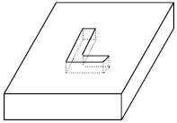
- 1 : การกลึง (Turning)
- 2 : การกัด (Milling)
- 3 : การไส (Shaping)
- 4 : การเจาะ (Drilling)
- คำตอบที่ถูกต้อง : 2
- ในการแล่นประสาน (Brazing) เพื่อทำให้แผ่นเหล็กสองแผ่นเชื่อมติดกัน ควรเลือกใช้ลวดเชื่อมชนิดใดต่อไปนี้
- 1 : เหล็กกล้า
- 2 : อะลูมิเนียม
- 3 : ทองแดง
- 4 : ทองเหลือง
- คำตอบที่ถูกต้อง : 4
- รูขึ้น (Riser) ในงานหล่อมีไว้เพื่ออะไร
- 1 : เพื่อให้น้ำโลหะล้นออกมานอกแบบ
- 2 : เพื่อให้น้ำโลหะในส่วนรูขึ้น (Riser) เติมเต็มในชิ้นส่วนงานหล่อขณะแข็งตัว
- 3 : เพื่อให้มีการหดตัวหลังการเย็นตัวของงานหล่อ
- 4 : เพื่อเพิ่มน้ำหนักในการกดทับแบบงานหล่อ
- คำตอบที่ถูกต้อง : 2
- ปากแม่แบบ (Gate) ในงานหล่อมีไว้เพื่ออะไร
- 1 : เป็นช่องสำหรับน้ำโลหะวิ่งเข้าแม่แบบ
- 2 : เป็นช่องสำหรับเทน้ำโลหะ
- 3 : เป็นช่องวิ่งของรูขึ้น (Riser)
- 4 : เป็นรูไอของแบบหล่อทราย
- คำตอบที่ถูกต้อง : 1
- วัสดุในข้อใดต่อไปนี้มีความแข็ง (Hardness) สูงที่สุด
- 1 : เหล็กกล้าความเร็วรอบสูง (High speed steel)
- 2 : เหล็กกล้าคาร์บอนสูง (High carbon steel)
- 3 : อะลูมินา (Alumina)
- 4 : Cubic boron nitride
- คำตอบที่ถูกต้อง : 4
- วัสดุในข้อใดต่อไปนี้มีความเหนียว (Toughness) สูงที่สุด
- 1 : เหล็กกล้าคาร์บอนสูง (High carbon steel)
- 2 : เหล็กกล้าความเร็วรอบสูง (High speed steel)
- 3 : อะลูมินา (Alumina)
- 4 : Cubic boron nitride
- คำตอบที่ถูกต้อง : 2
- เหล็กกล้าชนิดใดต่อไปนี้ตัดแต่งได้ยากที่สุด
- 1 : เหล็กกล้าไร้สนิมเฟร์ไรต์ (Ferritic stainless steel)
- 2 : เหล็กกล้าคาร์บอนต่ำ (Low carbon steel)
- 3 : เหล็กกล้าผสม (Alloy steel)
- 4 : เหล็กกล้าเครื่องมือ (Tool steel)
- คำตอบที่ถูกต้อง : 4
- ใน การรีด Slab เพื่อให้ได้เหล็กแผ่น (Sheet metal) ด้วยกรรมวิธีการรีดร้อน (Hot rolling) ควรเลือกใช้ลูกรีดแบบใด และความเร็วรอบอย่างไร เพื่อลดขนาดอย่างรวดเร็ว
- 1 : ควรใช้ลูกรีดขนาดใหญ่ ผิวหยาบ และความเร็วสูง
- 2 : ควรใช้ลูกรีดขนาดใหญ่ ผิวหยาบ และความเร็วรอบต่ำ
- 3 : ควรใช้ลูกรีดขนาดใหญ่ ผิวละเอียด และความเร็วรอบสูง
- 4 : ควรใช้ลูกรีดขนาดใหญ่ ผิวละเอียด และความเร็วรอบต่ำ
- คำตอบที่ถูกต้อง : 2
- ในการขึ้นรูปร้อน (Hot working) ของโลหะ ควรใช้อุณหภูมิที่มากกว่าค่าใด
- 1 : อุณหภูมิตกผลึก (Recrystallization Temperature)
- 2 : อุณหภูมิยูเทกทอยด์ (Eutectoid Temperature)
- 3 : อุณหภูมิยูเทกติก (Eutectic Temperature)
- 4 : อุณหภูมิจุดหลอมเหลว (Melting Temperature)
- คำตอบที่ถูกต้อง : 1
- Anodizing คืออะไร
- 1 : การชุบผิวเหล็กให้สวยงาม
- 2 : การชุบแข็งนิเกิล
- 3 : การชุบแข็งผิวอะลูมิเนียม
- 4 : การทำอะลูมิเนียมให้อ่อน
- คำตอบที่ถูกต้อง : 3
- โลหะในข้อใดต่อไปนี้สามารถหล่อได้ง่ายที่สุด
- 1 : เหล็กหล่อเทา (Gray cast iron)
- 2 : เหล็กหล่อขาว (White cast iron)
- 3 : เหล็กหล่อเหนียว (Ductile cast iron)
- 4 : เหล็กหล่ออบเหนียว (Malleable cast iron)
- คำตอบที่ถูกต้อง : 1
- กระบวนการในข้อใดต่อไปนี้สามารถชุบแข็งผิวเหล็กที่ให้ความแข็งสูงที่สุด
- 1 : คาร์บูไรซิ่ง (Carburizing)
- 2 : ไนไตร์ดิ้ง (Nitriding)
- 3 : ใช้กระแสเหนี่ยวนำ (Induction hardening)
- 4 : ใช้เปลวเพลิง (Flame hardening)
- คำตอบที่ถูกต้อง : 2
- การลดปัญหาการแตกร้าวในการเชื่อมเหล็กกล้าผสมต่ำสามารถทำได้โดยวิธีใดต่อไปนี้
- 1 : ให้ความร้อนชิ้นงานก่อนเชื่อม
- 2 : อบชิ้นงานหลังการเชื่อม
- 3 : ใช้ก๊าซเฉื่อยคลุมขณะเชื่อม
- 4 : เชื่อมโดยใช้กำลังไฟฟ้าต่ำ
- คำตอบที่ถูกต้อง : 1
- กระบวนการผลิตในข้อใดต่อไปนี้ที่เหมาะที่สุดในการผลิตใบพัดของเครื่องกังหันก๊าซ (Gas turbine blades)
- 1 : การหล่อด้วยแม่พิมพ์ทราย (Sand casting)
- 2 : การหล่อแบบใช้แม่แบบ (Die casting)
- 3 : การหล่อจากแบบพอกหุ่น (Investment casting)
- 4 : การทุบขึ้นรูป (Forging)
- คำตอบที่ถูกต้อง : 3
- กรรมวิธีใดต่อไปนี้สามารถผลิตแผ่นเหล็กกล้าที่มีขนาดเที่ยงตรงตามที่ต้องการได้ดีที่สุด
- 1 : การรีดร้อน (Hot rolling)
- 2 : การรีดเย็น (Cold rolling)
- 3 : การทุบขึ้นรูป (Forging)
- 4 : การดึงรีด (Drawing)
- คำตอบที่ถูกต้อง : 2
- ข้อใดไม่ใช่กลไกการเพิ่มความแข็งแรงให้กับอะลูมิเนียมและอะลูมิเนียมผสม
- 1 : การขึ้นรูปเย็น (Cold working)
- 2 : การขึ้นรูปร้อน (Hot working)
- 3 : การชุบแข็งแบบตกตะกอน (Precipitate hardening)
- 4 : การทำให้เป็นสารละลายของแข็ง (Solid solution)
- คำตอบที่ถูกต้อง : 2
- กรรมวิธีใดต่อไปนี้เหมาะสำหรับผลิตภัณฑ์โลหะที่มีจุดหลอมเหลวสูงและมีสภาพการดึงยืดได้น้อย
- 1 : การหล่อแบบพอกหุ่น (Investment casting)
- 2 : การอัดรีด (Extrusion)
- 3 : กรรมวิธีโลหะผง (Powder metallurgy)
- 4 : การรีดร้อน (Hot rolling)
- คำตอบที่ถูกต้อง : 3
- กระบวนการใดที่เหมาะสมสำหรับการขึ้นรูปแผ่นโลหะให้เป็นชิ้นงานรูปถ้วย
- 1 : การหล่อขึ้นรูป (Casting)
- 2 : การทุบขึ้นรูป (Forging)
- 3 : การลากขึ้นรูป (Deep drawing)
- 4 : การอัดรีด (Extrusion)
- คำตอบที่ถูกต้อง : 3
- กรรมวิธีใดต่อไปนี้ไม่สามารถเพิ่มความแข็งแรงให้ชิ้นงานโลหะได้
- 1 : การรีดร้อน (Hot rolling)
- 2 : การรีดเย็น (Cold rolling)
- 3 : การทุบขึ้นรูป (Forging)
- 4 : การดึงรีด (Drawing)
- คำตอบที่ถูกต้อง : 1
- การอบปกติ (Normalizing) ของเหล็กกล้าคาร์บอนต่ำ จะต้องมีการให้ความร้อนและการเย็นตัวของชิ้นงานอย่างไร
- 1 : ให้ความร้อนจนชิ้นงานเปลี่ยนโครงสร้างเป็นออสเทไนต์และเฟร์ไรต์ และปล่อยให้เย็นตัวในเตาอบ
- 2 : ให้ความร้อนจนชิ้นงานเปลี่ยนโครงสร้างเป็นออสเทไนต์ทั้งหมด และปล่อยให้เย็นตัวในอากาศ
- 3 : ให้ความร้อนจนชิ้นงานเปลี่ยนโครงสร้างเป็นออสเทไนต์ทั้งหมด และปล่อยให้เย็นตัวในน้ำ
- 4 : ให้ความร้อนจนชิ้นงานเปลี่ยนโครงสร้างเป็นออสเทไนต์และซีเมนไทต์ และปล่อยให้เย็นตัวในน้ำ
- คำตอบที่ถูกต้อง : 2
- ผลิตภัณฑ์เซรามิกในข้อใดเหมาะกับการขึ้นรูปโดยการอัด (Pressing)
- 1 : อ่างล้างหน้า
- 2 : กระเบื้องปูพื้นและผนัง
- 3 : แจกัน
- 4 : ถ้วยกาแฟ
- คำตอบที่ถูกต้อง : 2
- ผลิตภัณฑ์เซรามิกในข้อใดเหมาะกับการขึ้นรูปโดยการหล่อแบบ (Slip casting)
- 1 : อ่างล้างหน้า
- 2 : กระเบื้องปูพื้นและผนัง
- 3 : โอ่งมังกร
- 4 : ท่อระบายน้ำ
- คำตอบที่ถูกต้อง : 1
- ผลิตภัณฑ์เซรามิกในข้อใดเหมาะกับการขึ้นรูปโดยการอัดรีด (Extrusion)
- 1 : สุขภัณฑ์ในห้องน้ำ
- 2 : ถ้วยกาแฟ
- 3 : กระเบื้องมุงหลังคา
- 4 : ท่อน้ำทิ้ง
- คำตอบที่ถูกต้อง : 4
- ข้อใดต่อไปนี้จะไม่เกิดขึ้นเมื่อให้ความร้อนกับเซรามิกในกระบวนการอบแห้ง (Drying)
- 1 : น้ำระหว่างอนุภาคถูกขจัดออก
- 2 : สารอินทรีย์ถูกขจัดออก
- 3 : ผลิตภัณฑ์หลังอบมีขนาดใหญ่ขึ้น
- 4 : ผลิตภัณฑ์หลังอบมีความแข็งแรงต่ำและเปราะ
- คำตอบที่ถูกต้อง : 3
- ข้อใดต่อไปนี้ไม่เกิดขึ้นในกระบวนการ Sintering
- 1 : Solid-state diffusion
- 2 : อนุภาคเกิดการเชื่อมต่อกันบริเวณที่สัมผัสกับอนุภาคอื่น
- 3 : เกิดการหลอมละลายเป็นของเหลว
- 4 : ช่องว่างระหว่างอนุภาคมีขนาดเล็กลง
- คำตอบที่ถูกต้อง : 3
- ในการขึ้นรูปเซรามิกชนิดที่มีดินเป็นองค์ประกอบหลัก (Clay products) โดยวิธีการหล่อแบบ (Slip casting) ใช้วัสดุใดเป็นแบบหล่อ
- 1 : ทราย
- 2 : โลหะ
- 3 : ยาง
- 4 : ปูนปลาสเตอร์
- คำตอบที่ถูกต้อง : 4
- ใน การผลิตเซรามิกชนิดที่มีดินเป็นองค์ประกอบหลัก (Clay products) ด้วยวิธีการหล่อแบบ (Slip casting) แบบที่ใช้ในการขึ้นรูปควรมีลักษณะอย่างไรและเพราะเหตุใด
- 1 : เนื่องจากผลิตภัณฑ์ที่ได้มีการขยายขนาด จึงต้องทำให้แบบมีขนาดเล็กกว่างานจริง
- 2 : เนื่องจากผลิตภัณฑ์ที่ได้มีจะมีขนาดเท่าเดิม ดังนั้นแบบจะมีขนาดเท่างานจริง
- 3 : เนื่องจากผลิตภัณฑ์ที่ได้มีการหดตัว จึงต้องทำให้แบบมีขนาดใหญ่กว่างานจริง
- 4 : ผลิตภัณฑ์ที่ได้อาจจะหดตัวหรือขยายตัวก็ได้ การเผื่อขนาดแบบแล้วแต่ชนิดของผลิตภัณฑ์
- คำตอบที่ถูกต้อง : 3
- กระจก เป็นผลิตภัณฑ์ที่มักจะได้จากการขึ้นรูปแบบใด
- 1 : การเป่า (Blowing)
- 2 : การอัด (Pressing)
- 3 : การดึง (Drawing)
- 4 : การอัดรีด (Extrusion)
- คำตอบที่ถูกต้อง : 3
- ผลิตภัณฑ์ประเภทใดขึ้นรูปโดยการเป่า (Blowing)
- 1 : ขวดแก้ว
- 2 : จานแก้ว
- 3 : กระจก
- 4 : เลนส์
- คำตอบที่ถูกต้อง : 1
- ข้อใดไม่ใช่วัตถุประสงค์ในการใช้ดินเป็นวัตถุดิบในเซรามิกดั้งเดิม (Conventional ceramics)
- 1 : ดินช่วยในเรื่องความเหนียวขณะขึ้นรูปทำให้ขึ้นรูปได้ง่าย
- 2 : ดินช่วยให้เซรามิกคงรูปอยู่ได้ขณะเผา
- 3 : ดินช่วยให้เซรามิกมีความหนาแน่นสูง
- 4 : ดินมีราคาถูก
- คำตอบที่ถูกต้อง : 3
- ในการบดผสมวัตถุดิบสำหรับผลิตเซรามิก ทำไมจึงต้องมีการควบคุมการกระจายขนาดอนุภาค (Particle size distribution)
- 1 : เพื่อให้วัตถุดิบหลอมตัวได้ง่าย
- 2 : เพื่อให้วัตถุดิบสามารถอัดตัวกันเพื่อให้มีช่องว่างน้อยที่สุด
- 3 : เพื่อให้วัตถุดิบผสมกันได้ดียิ่งขึ้น
- 4 : เพื่อให้วัตถุดิบไม่เกิดการหดตัวหลังให้ความร้อน
- คำตอบที่ถูกต้อง : 2
- ถ้าต้องการขึ้นรูปท่อเซรามิกที่มีความยาวและมีหน้าตัดเหมือนกันตลอดความยาวชิ้นงาน 1 เมตร ควรขึ้นรูปด้วยวิธีใด
- 1 : การอัด (Pressing)
- 2 : การอัดรีด (Extrusion)
- 3 : การฉีด (Injection)
- 4 : การเป่า (Blowing)
- คำตอบที่ถูกต้อง : 2
- ในกระบวนการอบ ทำไมผลิตภัณฑ์เซรามิกที่ผนังมีความหนามากมีแนวโน้มที่จะเกิดการแตกได้ง่ายกว่าเซรามิกที่มีผนังบาง
- 1 : การหดตัวที่ผิว (Surface) กับเนื้อส่วนใน (Interior) มีค่าแตกต่างกัน
- 2 : ผลิตภัณฑ์ผนังหนาต้องอบที่อุณหภูมิสูงกว่าผลิตภัณฑ์ผนังบาง
- 3 : น้ำในเนื้อส่วนใน (Interior) ของผลิตภัณฑ์ผนังหนาสามารถกำจัดออกได้ง่าย
- 4 : ผลิตภัณฑ์ผนังหนามีความแข็งแรงน้อยกว่าผลิตภัณฑ์ผนังบาง
- คำตอบที่ถูกต้อง : 1
- การเกิดเป็นเนื้อแก้ว (Vitrification) จะทำให้เกิดผลในข้อใด
- 1 : สัมประสิทธิ์การขยายตัวเนื่องจากความร้อน (Coefficient of thermal expansion) ต่ำลง
- 2 : การนำความร้อน (Thermal conductivity) ต่ำลง
- 3 : การนำไฟฟ้า (Electrical conductivity) ดีขึ้น
- 4 : การเสียรูป (Warpage) ต่ำลง
- คำตอบที่ถูกต้อง : 1
- ในเซรามิกแบบดั้งเดิม (Conventional ceramic) การเติม Flux จะมีประโยชน์ในเรื่องใด
- 1 : ทำให้ผลิตภัณฑ์เกิดเป็นเนื้อแก้ว
- 2 : ทำให้การเกิดเป็นเนื้อแก้วสามารถเกิดที่อุณหภูมิต่ำลง
- 3 : ไม่ให้ผลิตภัณฑ์เกิดการหดตัว
- 4 : ทำให้มีความเปราะน้อยลง
- คำตอบที่ถูกต้อง : 2
- ข้อใดเป็นกระบวนการที่สำคัญที่ใช้ในการทำกระจกนิรภัย (Safety glass) สำหรับกระจกหน้ารถ
- 1 : Pressing
- 2 : Drying
- 3 : Tempering
- 4 : Blowing
- คำตอบที่ถูกต้อง : 3
- กระบวนการในข้อใดต่อไปนี้ทำให้ชิ้นงานเซรามิกมีความหนาแน่นและความแข็งแรงเพิ่มขึ้นมาก
- 1 : Drying
- 2 : Pressing
- 3 : Casting
- 4 : Sintering
- คำตอบที่ถูกต้อง : 4
- ขวดเบียร์เป็นผลิตภัณฑ์ที่มักจะได้จากกรรมวิธีการขึ้นรูปใดต่อไปนี้
- 1 : Pressing
- 2 : Extrusion
- 3 : Blowing
- 4 : Casting
- คำตอบที่ถูกต้อง : 3
- กระจกหน้าต่างเป็นผลิตภัณฑ์ที่มักจะได้จากกรรมวิธีการขึ้นรูปใดต่อไปนี้
- 1 : Pressing
- 2 : Drawing
- 3 : Blowing
- 4 : Casting
- คำตอบที่ถูกต้อง : 2
- ข้อใดกล่าวเกี่ยวกับกรรมวิธีทางความร้อนของแก้วไม่ถูกต้อง
- 1 : การอบอ่อนแก้วทำเพื่อลดปริมาณความเค้นตกค้างของชิ้นงาน
- 2 : การอบอ่อนแก้วทำได้โดยการให้ความร้อนถึงจุดอ่อนตัวแล้วปล่อยให้เย็นตัวช้าๆ จนถึงอุณหภูมิห้อง
- 3 : การเพิ่มความแข็งให้กับแก้ว (Glass tempering) ทำได้โดยการให้ความร้อนถึงจุดอ่อนตัว แล้วทำให้เย็นตัวอย่างรวดเร็วโดยการเป่าลม
- 4 : ชิ้นงานที่เย็นตัวอย่างรวดเร็วจากการเพิ่มความแข็งให้กับแก้ว (Glass tempering) จะทำให้เกิดความเค้นอัดที่ผิวและเกิดความเค้นแรงดึงที่เนื้อภายใน
- คำตอบที่ถูกต้อง : 3
- ผลิตภัณฑ์พอลิเมอร์ที่ได้จากการขึ้นรูปด้วยเครื่องอัดรีด (Extrusion) จะมีลักษณะแบบใด
- 1 : เป็นภาชนะกลวง
- 2 : รูปร่างลักษณะซับซ้อนมาก
- 3 : รูปร่างหน้าตัดเหมือนกันตลอดความยาวของชิ้นงาน
- 4 : ข้อ 1 2 และ 3 ถูก
- คำตอบที่ถูกต้อง : 3
- กระบวนการขึ้นรูปชนิดใดที่ไม่นิยมใช้กับพอลิเมอร์ชนิดเทอร์โมพลาสติก (Thermoplastic)
- 1 : การฉีดขึ้นรูป (Injection molding)
- 2 : การเป่าขึ้นรูป (Blow molding)
- 3 : การอัดรีด (Extrusion)
- 4 : การอัดเข้ากับแบบ (Compression molding)
- คำตอบที่ถูกต้อง : 4
- ข้อใดคือส่วนประกอบที่สำคัญของเครื่องขึ้นรูปแบบฉีด (Injection molding)
- 1 : หน่วยฉีด (Injection unit)
- 2 : หน่วยจับยึด (Clamping unit)
- 3 : แม่พิมพ์ (Mold)
- 4 : ข้อ 1 2 และ 3 ถูก
- คำตอบที่ถูกต้อง : 4
- ท่อพลาสติก เป็นผลิตภัณฑ์ที่ได้จากการขึ้นรูปแบบใด
- 1 : การฉีดขึ้นรูป (Injection molding)
- 2 : การเป่าขึ้นรูป (Blow molding)
- 3 : การอัดรีด (Extrusion)
- 4 : การอัดเข้ากับแบบ (Compression molding)
- คำตอบที่ถูกต้อง : 3
- ขวดพลาสติก เป็นผลิตภัณฑ์ที่มักจะได้จากการขึ้นรูปแบบใด
- 1 : การฉีดขึ้นรูป (Injection molding)
- 2 : การเป่าขึ้นรูป (Blow molding)
- 3 : การอัดรีด (Extrusion)
- 4 : การอัดเข้ากับแบบ (Compression molding)
- คำตอบที่ถูกต้อง : 2
- ผงถ่าน (Carbon black) ที่ใช้เป็นส่วนผสมในยางรถยนต์ เป็นสารเติมแต่งชนิดใด
- 1 : สี (Colorant)
- 2 : สารเสริมแรง (Reinforcing filler)
- 3 : สารไม่เสริมแรง (Non-reinforcing filler)
- 4 : สารป้องกันการติดไฟ (Flame retardant)
- คำตอบที่ถูกต้อง : 2
- ผลิตภัณฑ์ที่ทำจากพอลิเมอร์ชนิดใดต่อไปนี้มีการหดตัวหลังกระบวนการขึ้นรูปมากที่สุด
- 1 : วัสดุยืดหยุ่น (Elastomer)
- 2 : เทอร์โมเซตติ้ง (Thermosetting)
- 3 : เทอร์โมพลาสติกชนิดที่เกิดโครงสร้างผลึก (Crystalline thermoplastic)
- 4 : เทอร์โมพลาสติกชนิดที่ไม่เกิดโครงสร้างผลึก (Non-crystalline thermoplastic)
- คำตอบที่ถูกต้อง : 3
- สารเติมแต่งชนิดไม่เสริมแรง (Non-reinforcing filler) นิยมใช้ผสมในพอลิเมอร์ก่อนทำการขึ้นรูปเพราะเหตุใด
- 1 : เพื่อให้สีสวยขึ้น
- 2 : เพื่อลดต้นทุน
- 3 : เพื่อให้ใช้ในช่วงอุณหภูมิที่กว้างขึ้น
- 4 : เพื่อใช้ในการหล่อลื่น
- คำตอบที่ถูกต้อง : 2
- พอลิไวนิล คลอไรด์ (Polyvinyl chloride) สามารถนำมาใช้เป็นท่อสายยางได้ ถ้าหากเติมสารเติมแต่งชนิดใดลงไปในกระบวนการผลิต
- 1 : สารหล่อลื่น (Lubricant)
- 2 : สารเสริมแรง (Reinforcing filler)
- 3 : สารป้องกันการแตกหักของสายโซ่โมเลกุล (Stabilizer)
- 4 : สารพลาสติไซเซอร์ (Plasticizer)
- คำตอบที่ถูกต้อง : 4
- เพราะ เหตุใดกระบวนการขึ้นรูปแบบอัดเข้ากับแบบ (Compression molding) จึงนิยมใช้กับพอลิเมอร์ชนิดเทอร์โมเซตติ้ง (Thermosetting) มากกว่าพอลิเมอร์ชนิดเทอร์โมพลาสติก (Thermoplastic)
- 1 : ประหยัดพลังงาน เนื่องจากในกระบวนการผลิตเทอร์โมเซตติ้ง มีความต้องการใช้อุณหภูมิที่ต่ำกว่าในกระบวนการผลิตเทอร์โมพลาสติก
- 2 : การขึ้นรูปเทอร์โมเซตติ้ง ไม่จำเป็นต้องมีการหล่อเย็น
- 3 : ผลิตภัณฑ์ที่ได้จากการขึ้นรูปเทอร์โมเซตติ้ง มีผิวที่เป็นมันวาวกว่า
- 4 : ใช้เวลาในการขึ้นรูปน้อยกว่า
- คำตอบที่ถูกต้อง : 1
- สารเติมแต่งที่นิยมใช้ในการทำให้ยางเกิดโครงสร้างตาข่าย (Network) ขณะขึ้นรูปคือข้อใด
- 1 : หินปูน
- 2 : กำมะถัน
- 3 : ผงถ่าน
- 4 : ขี้ผึ้ง
- คำตอบที่ถูกต้อง : 2
- กระบวน การขึ้นรูปพอลิเมอร์โดยวิธีการอัดรีดเป่าขึ้นรูป (Extrusion blow molding) จะมีความแตกต่างจากกระบวนการขึ้นรูปโดยวิธีการฉีดเป่าขึ้นรูป (Injection blow molding) อย่างไร
- 1 : ชนิดของพอลิเมอร์ที่ใช้แตกต่างกัน
- 2 : ผลิตภัณฑ์ที่ได้เป็นภาชนะกลวง
- 3 : รูปร่างผลิตภัณฑ์ที่ได้มีความซับซ้อนเหมือนกัน
- 4 : เทคนิคที่ใช้ในการเป่าด้วยวิธีการฉีดเป่าขึ้นรูป (Injection blow molding) ยุ่งยากกว่าการเป่าด้วยวิธีการอัดรีดเป่าขึ้นรูป (Extrusion blow molding)
- คำตอบที่ถูกต้อง : 4
- ช้อนพลาสติกตักไอศกรีม เป็นผลิตภัณฑ์ที่มักจะได้จากการขึ้นรูปแบบใด
- 1 : การหล่อ (Casting)
- 2 : การอัดเข้าแบบ (Compression molding)
- 3 : การฉีดขึ้นรูป (Injection molding)
- 4 : การอัดรีด (Extrusion)
- คำตอบที่ถูกต้อง : 3
- กล่องพลาสติกใสสำหรับใส่ขนมเค้กชิ้นเล็กๆ เป็นผลิตภัณฑ์ที่มักจะได้จากการขึ้นรูปแบบใด
- 1 : การขึ้นรูปด้วยความร้อน (Thermo-forming)
- 2 : การอัดเข้าแบบ (Compression molding)
- 3 : การฉีดขึ้นรูป (Injection molding)
- 4 : การเป่าขึ้นรูป (Blow molding)
- คำตอบที่ถูกต้อง : 1
- จานข้าวเมลามีน (Melamine) เป็นผลิตภัณฑ์ที่มักจะได้จากการขึ้นรูปแบบใด
- 1 : การอัดรีด (Extrusion)
- 2 : การอัดเข้าแบบ (Compression molding)
- 3 : การฉีดขึ้นรูป (Injection molding)
- 4 : การเป่าขึ้นรูป (Blow molding)
- คำตอบที่ถูกต้อง : 2
- ยางลบดินสอ เป็นผลิตภัณฑ์ที่มักจะได้จากการขึ้นรูปแบบใด
- 1 : การอัดรีด (Extrusion)
- 2 : การอัดเข้าแบบ (Compression molding)
- 3 : การฉีดขึ้นรูป (Injection molding)
- 4 : การเป่าขึ้นรูป (Blow molding)
- คำตอบที่ถูกต้อง : 1
- สารเติมแต่งประเภทใดต่อไปนี้ใช้สำหรับลดความรุนแรงของอัคคีภัยที่เกิดขึ้นกับวัสดุพอลิเมอร์
- 1 : Stabilizer
- 2 : Colorant
- 3 : Flame retardant
- 4 : Filler
- คำตอบที่ถูกต้อง : 3
- แผ่นฟิล์มพลาสติกเป็นผลิตภัณฑ์ที่มักจะได้จากกรรมวิธีการขึ้นรูปใดต่อไปนี้
- 1 : Injection molding
- 2 : Extrusion
- 3 : Compression molding
- 4 : Blow molding
- คำตอบที่ถูกต้อง : 2
- ขั้นตอนใดต่อไปนี้ที่ไม่เกี่ยวข้องกับการสังเคราะห์พอลิเมอร์แบบเติม (Addition polymerization)
- 1 : Initiation
- 2 : Termination
- 3 : Condensation
- 4 : Propagation
- คำตอบที่ถูกต้อง : 3
- ผลิตภัณฑ์ในข้อใดไม่สามารถขึ้นรูปด้วยกระบวนการฉีด (Injection molding) ได้
- 1 : เปลือกหุ้มสายเคเบิล
- 2 : ใบพัดลม
- 3 : แผ่นซีดี
- 4 : ฝาครอบโทรศัพท์มือถือ
- คำตอบที่ถูกต้อง : 1
- แกลลอนน้ำมันควรผลิตด้วยกระบวนการขึ้นรูปใด
- 1 : การฉีดขึ้นรูป (Injection molding)
- 2 : การเป่าขึ้นรูป (Blow molding)
- 3 : การอัดรีด (Extrusion)
- 4 : การอัดเข้าแบบ (Compression molding)
- คำตอบที่ถูกต้อง : 2
- พอลิเมอร์ชนิดใดนิยมขึ้นรูปด้วยกระบวนการอัดเข้าแบบ (Compression molding)
- 1 : พอลิสไตรีน (Polystyrene)
- 2 : พอลิเอทธิลีน (Polyethylene)
- 3 : พอลิพรอพิลีน (Polypropylene)
- 4 : ฟีนอลฟอร์มัลดีไฮด์ (Phenol-formaldehyde)
- คำตอบที่ถูกต้อง : 4
- ผลิตภัณฑ์ใดที่ไม่สามารถขึ้นรูปได้ด้วยกระบวนการอัดรีด (Extrusion)
- 1 : สายยางฉีดน้ำ
- 2 : เคสโทรศัพท์มือถือ
- 3 : หลอดกาแฟ
- 4 : แผ่นฟิล์มพลาสติก
- คำตอบที่ถูกต้อง : 2
- วัตถุประสงค์หลักในการพัฒนาวัสดุเชิงประกอบ (Composites) คือข้อใด
- 1 : เพิ่มความรวดเร็วในการผลิตและประสิทธิภาพการผลิต
- 2 : ลดต้นทุนการผลิต เพิ่มความสามารถในการแข่งขัน
- 3 : ปรับปรุงสมบัติบางประการของชิ้นงาน เช่น ความแข็งแรง
- 4 : ลดผลกระทบต่อสิ่งแวดล้อมและใช้ทรัพยากรให้คุ้มค่า
- คำตอบที่ถูกต้อง : 3
- วัสดุในข้อใดต่อไปนี้ไม่ใช่วัสดุเชิงประกอบ (Composites)
- 1 : ทังสเตนคาไบด์ (Tungsten carbide)
- 2 : เซอร์เมท
- 3 : คอนกรีตเสริมเหล็ก (Reinforced concrete)
- 4 : พรีเพรก
- คำตอบที่ถูกต้อง : 1
- ผลิตภัณฑ์ใดต่อไปนี้ที่นิยมผลิตจากวัสดุเชิงประกอบ (Composites)
- 1 : ถ้วยกาแฟ
- 2 : หม้อหุงข้าว
- 3 : ไม้เทนนิส
- 4 : กรอบแว่นตา
- คำตอบที่ถูกต้อง : 3
- ไฟเบอร์กลาส (Fiberglass) เป็นวัสดุชนิดใด
- 1 : วัสดุเชิงประกอบ (Composite) ที่มีอีลาสโตเมอร์ (Elastomer) เป็นโครงสร้างพื้น (Matrix)
- 2 : วัสดุเชิงประกอบ (Composite) ที่มีเซรามิก (Ceramic) เป็นโครงสร้างพื้น
- 3 : วัสดุเชิงประกอบที่มีแก้ว (Glass) เป็นโครงสร้างพื้น (Matrix)
- 4 : วัสดุเชิงประกอบ (Composite) ที่มีเทอร์โมเซท (Thermoset) เป็นโครงสร้างพื้น (Matrix)
- คำตอบที่ถูกต้อง : 4
- ใยแก้ว (Glass fibers) ประกอบด้วยสารประกอบชนิดใดมากที่สุด
- 1 : SiO2
- 2 : Al2O3
- 3 : CaO
- 4 : MgO
- คำตอบที่ถูกต้อง : 1
- เซอร์เมท (Cermet) เป็นวัสดุชนิดใด
- 1 : เซรามิก
- 2 : วัสดุเชิงประกอบ (Composite) มีโลหะเป็นโครงสร้างพื้น (Matrix)
- 3 : วัสดุเชิงประกอบ (Composite) มีเซรามิกเป็นโครงสร้างพื้น (Matrix)
- 4 : โลหะชนิดหนึ่ง มีความแข็งสูง ใช้เป็นมีดกลึง
- คำตอบที่ถูกต้อง : 2
- เคฟลาร์ (Kevlar) เป็นเส้นใยชนิดใด
- 1 : เส้นใยธรรมชาติ
- 2 : เส้นใยพอลิเมอร์สังเคราะห์
- 3 : เส้นใยแก้ว
- 4 : เส้นใยคาร์บอน
- คำตอบที่ถูกต้อง : 2
- กระบวนการในข้อใดต่อไปนี้ที่ใช้ในการผลิตเส้นใยคาร์บอน (Carbon fibers)
- 1 : Pyrolysis
- 2 : Hydrolysis
- 3 : Synthesis
- 4 : Analysis
- คำตอบที่ถูกต้อง : 1
- วัสดุเชิงประกอบ (Composite) ชนิดใดต่อไปนี้ที่เหมาะสำหรับผลิตก้านสูบ (Connecting rods) ในเครื่องยนต์
- 1 : อะลูมิเนียมเสริมใยแก้ว (Glass fibers)
- 2 : อะลูมิเนียมเสริมใยซิลิกอนคาร์ไบด์ (SiC)
- 3 : อะลูมิเนียมเสริมใยหิน (Asbestos)
- 4 : อะลูมิเนียมเสริมใยเหล็ก (Steel)
- คำตอบที่ถูกต้อง : 2
- ข้อใดต่อไปนี้เป็นวัสดุเชิงประกอบที่มีสมบัติแบบไอโซทรอปิก
- 1 : คานไม้
- 2 : โครงเครื่องบินไฟเบอร์กลาส
- 3 : ยางรถยนต์เสริมแรงด้วยคาร์บอนแบล็ก
- 4 : ชิ้นส่วนกระสวยอวกาศทำจากเส้นใยยาวเคฟลาร์และอีพอกซี (Kevlar-epoxy)
- คำตอบที่ถูกต้อง : 3
- ข้อใดไม่ใช้วิธีเพิ่มความแข็งแรงให้กับวัสดุเชิงประกอบ
- 1 : ลดขนาดของอนุภาคให้เล็กลง
- 2 : ลดความยาวเส้นใยเสริมแรงให้สั้นลง
- 3 : เพิ่มแรงยึดเหนี่ยวระหว่างเนื้อพื้นและอนุภาคเสริมแรง
- 4 : ปรับการกระจายตัวของอนุภาคในเนื้อพื้นให้สม่ำเสมอ
- คำตอบที่ถูกต้อง : 2
- ข้อใดต่อไปนี้ คือหน้าที่ของเฟสกระจายตัว (Disperse phase) ในวัสดุเชิงประกอบ
- 1 : เป็นตัวกลางในการถ่ายโอนแรงจากภายนอกให้กับวัสดุผสม
- 2 : เสริมสมบัติของวัสดุผสมให้ดีขึ้น
- 3 : ป้องกันความเสียหายของเฟสเนื้อพื้น (Matrix) จากสภาพแวดล้อม
- 4 : ลดต้นทุนการผลิต
- คำตอบที่ถูกต้อง : 2
- ข้อใดจัดเป็นวัสดุเชิงประกอบ (Composites)
- 1 : อะลูมิเนียม+ผงคาร์ไบด์
- 2 : พอลิพรอพิลีน+พอลิเอทิลีน
- 3 : พีวีซี+ยางไนไตรล์
- 4 : อะลูมิเนียม+ซิลิกอน
- คำตอบที่ถูกต้อง : 1
- ข้อใดกล่าวไม่ถูกต้อง
- 1 : สารเสริมแรงส่วนมากมีความเหนียวสูง
- 2 : การทำ PMC ช่วยเพิ่มความแข็งแรงให้สูงขึ้น
- 3 : การทำ MMC ช่วยเพิ่มความต้านทานต่อการเกิดครีพให้สูงขึ้น
- 4 : การทำ CMC ช่วยเพิ่มความเหนียวให้สูงขึ้น
- คำตอบที่ถูกต้อง : 1
- สารเสริมแรงชนิดใดใช้ทำวัสดุเชิงประกอบแบบโครงสร้าง (Structural composite)
- 1 : เส้นใยแก้วชนิดสั้น
- 2 : วิสเกอร์ซิลิกอนคาร์ไบด์
- 3 : ผงทังสเตนคาร์ไบด์
- 4 : แผงรังผึ้ง
- คำตอบที่ถูกต้อง : 4
- คอนกรีตเป็นวัสดุเชิงประกอบ (Composites) ที่มีวัสดุชนิดใดเป็นเฟสเนื้อพื้น (Matrix)
- 1 : หิน
- 2 : ซีเมนต์
- 3 : ยิปซั่ม
- 4 : ทราย
- คำตอบที่ถูกต้อง : 2
- วิสเกอร์เป็นวัสดุเสริมแรงที่มีลักษณะเป็นอย่างไร
- 1 : อนุภาคผงเม็ดกลม
- 2 : อนุภาครูปทรงสี่เหลี่ยม
- 3 : เส้นใยผลึกเดี่ยว
- 4 : เส้นลวด
- คำตอบที่ถูกต้อง : 3
- ข้อใดไม่ใช่ผลของการทำวัสดุเชิงประกอบ (Composites) ที่มีโลหะเป็นเฟสเนื้อพื้น (Matrix)
- 1 : เพิ่มความเหนียว
- 2 : เพิ่มความต้านทานต่อการสึกหรอ
- 3 : เพิ่มมอดุลัสจำเพาะ
- 4 : เพิ่มความต้านทานต่อการเกิดครีพ (Creep)
- คำตอบที่ถูกต้อง : 1
- วัสดุเซอร์เมท (Cermet) เป็นวัสดุเชิงประกอบ (Composite) ที่มีลักษณะเป็นอย่างไร
- 1 : วัสดุเซรามิกเป็นโครงสร้างพื้น (Matrix) เสริมแรงด้วยโลหะ
- 2 : วัสดุโลหะเป็นโครงสร้างพื้น (Matrix) และเสริมแรงด้วยเซรามิก
- 3 : วัสดุพอลิเมอร์เป็นโครงสร้างพื้น (Matrix) และเสริมแรงด้วยเซรามิก
- 4 : วัสดุพอลิเมอร์เป็นโครงสร้างพื้น (Matrix) และเสริมแรงด้วยโลหะ
- คำตอบที่ถูกต้อง : 2